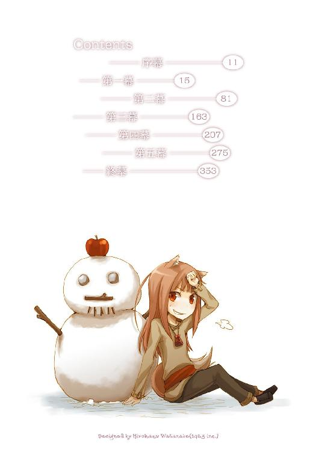

| 狼と香辛料 10 | |
| 支倉凍砂 | |
| KADOKAWA / アスキー・メディアワークス (2013) | |

本書（電子版）に掲載されているコンテンツ（ソフトウェア／プログラム／データ／情報を含む）の著作権およびその他の権利は、すべて株式会社アスキー・メディアワークスおよび正当な権利を有する第三者に帰属しています。
法律の定めがある場合または権利者の明示的な承諾がある場合を除き、これらのコンテンツを複製・転載、改変・編集、翻案・翻訳、放送・出版、公衆送信（送信可能化を含む）・再配信、販売・頒布、貸与等に使用することはできません。
蠟燭は高価だ。
ほんの両腕で抱えられる広さしか照らさないうえに、わずかな時間で燃え尽きる。
だから、蠟燭を照らす時には大抵、昼間にはできないなにかしらの作業に勤しんでいた。
例えば金貨の縁を丁寧にナイフで削るとか、麻袋を二重底にするために繕い物をしたりとか、その中に関税の高い塩を入れたりとか。
たまに仕事がうまくいくと、これもまたあまり安いものではない紙に、将来自分が持つ予定の店の外観を描いたり、町の様子を記したりしていた。
なんにせよ、どれもこれも一人ほくそ笑む類のものだったということだ。
教会では時折、夜中に笑うと悪魔がやってくる、という説教をする者がいる。
きっと、夜中に一人で机の前に座り、何事かをしてほくそ笑む商人を見かけたことがあるのだろう。
自分も大昔に夜の夜中に師匠の丸まった背中を見てしまい、震えながら毛布に包まっていたものだ。
それが、特になにをするでもないのに蠟燭の火を消さなくなったのはいつ頃からだろうか。
じりじりと芯の燃えていくのをぼんやりと見ていたり、飲むわけでもないのに注いでしまったぶどう酒を眺めていたりした。
いや、消さない理由は明白にわかっている。
今までは仕事の邪魔にしかならなかった夜の時間を、少しでも長く味わっていたいのだ。
静かで、落ち着いていて、きっとまた騒がしい明日がくるまでの穏やかな時間を。
小さい寝息が二つ、計ったように交互に聞こえてくる。
ずっとその平和な寝息を聞いていられるのなら、新しい蠟燭を継ぎ足したっていい。
ただ、夜は短く、明日もまた騒がしい。
早めに寝ておかなければ体が参ってしまう。
声なく笑って、蠟燭を消そうと息を吹きかける。
そのほんの一瞬、 ためらって寝息のするほうを見る。
これで暗闇の中でも大丈夫。
眠りに落ちる寸前まで、その様子を瞼の裏で眺めていた。
港を出るとたちまち船は頼りない乗り物になった。
船乗り連中からすればこんな揺れは揺れのうちに入らないのかもしれないが、船に乗りなれない者からすれば天地がひっくり返ってしまうほどに感じるらしい。
らしい、というのは、そう感じるのが自分ではないからだ。
自分には旅の連れが二人もいて、港を出るまでは二人揃って甲板ではしゃいでいた。
それが揺れ始めてからこっち、一人は荷や他の客と一緒の船室に下りてくるや、しがみついて離れない。
華奢で小柄だから、身を丸めて震えている様はまるで仔猫のようだ。
もちろん笑うことなどせず、膝の上で震えるままにしておいてやった。
十八の頃に行商人として独り立ちをして、七年もあちこち回ってくれば通り一遍のことは経験ずみだし、自分も船に初めて乗った時はちょっとした揺れにも喉の奥で悲鳴を上げていたもので、そういう意味でも笑えない。
ロレンスはそんなことを思いながら、旅の連れの震える背中をゆっくりと、一定の間隔でぽん、ぽん、と軽く叩いていた。
しかし、と薄暗くてややかび臭い船内を見回しながら苦笑いをしてしまう。
この震える旅の伴侶にはちょっと悪いのだが、できればもう一方のほうがこんなふうにしおらしくなってくれていたら、と思ってしまったのだ。
元気なのがコルだったらよかったのに、と。
ともすれば少女にも見えるこの放浪学生の少年コルは、普段から聞き分けがよくておとなしいのだから。
甲板から勢いよく船室に降りてきた人影を見て、ロレンスは小さくため息をついた。
「ぬしよ、海じゃ。海じゃった」
目をらんらんと輝かせ、もう一人の伴侶、ホロがどかっと隣に腰を下ろす。
頭からフードを被り、くるぶしまで届くローブを着ているのでぱっと見だと修道女に見える。
ただ、散々甲板ではしゃいだ挙句に床に胡坐をかいて座っていれば、それが旅のうえでの方便なのだと誰が見たって丸わかりだ。
もちろんそれは方便だし、修道女に見えたほうがなにかと都合がよい。
だから修道女らしくない粗野な振る舞いに今更眉尻をつり上げることもないのだが、ロレンスはコルの背中を撫でる一方で、ホロのローブも手で押さえた。
「むう？」
ホロが何事かと自分の背中を振り返る。
「自慢の尻尾」
ロレンスの言葉に、ホロはにかっと笑ってローブの下にそれを隠した。
フードの付いた裾の長いローブはホロを旅の修道女に見せると共に、もう一つの重要な役目を担っていた。
それはこの齢十余に見えるホロの腰から生える立派な毛並みの獣の尻尾と、その頭の上で機敏に動く耳を隠すため。
笑うホロの口には鋭い犬歯。
ホロは見た目どおりの少女ではない。
御歳数百歳という、麦に宿る狼の化身だった。
「ぬしよ、しかし、海じゃった」
「わかったわかった。少し落ち着いたらどうだ？ まるで雪が降った時の犬みたいだぞ」
「くうー......落ち着いていられるかや。こんなにも広いんじゃ。わっちが見たことのある草原などどれも狭い。海原とはよくいったものじゃな」
フードの下の前髪が濡れているのは、おそらく甲板の上でかぶりつくように海を眺めていたせいだろう。ローブも全体が潮でじっとりしていて、正直、側に座られるとちょっと嫌だった。
「お前、海は見たことあるんだろう？」
「うん。その時も散々砂浜を駆けたあと、海を駆けてみたくて何度か飛び込んだんじゃがな。あのどこまでも広がる青い海の上をなにも考えずに全力で走れたらどれほど楽しいかわかりんせん......人は鳥を見て空を飛びたいと思うそうじゃが、海を見て走りたいとは思わないのかや？」
ヨイツの賢狼とはわっちのことじゃ、とたびたびその頭の巡りの良さを見せつけられたことがある自分でさえ、ホロが犬にしか見えない。
若干の頭痛を覚えながら、こう答えた。
「......この海の続く果てにどんな国や土地があるのだろうか、と思うことはあっても、さすがに走りたいとは思わない」
「ぬしはつまらん雄じゃな」
ばっさりと切られても苦笑いすら出てこない。
海を見て興奮しているのがありありとわかったからだ。
時折獣っぽいところを垣間見せることのあるホロだが、こんなにも犬らしいところがあるとなると、この先が少し思いやられてしまう。
なにせ、ロレンスたちが乗る船の行く先は、雪が舞い散るウィンフィール王国なのだ。
猫が暖炉の前で丸くなるのなら、犬は雪の大地を駆けずり回る。
冗談ではなく首輪と手綱を準備しておこうか。
ロレンスがそんなことを思っていると、ホロは大きくくしゃみをした。
「ほら、毛布でも被っとけ。この寒いのに外に出てびしょ濡れになってたら風邪ひくぞ」
「んむ......海は風が濡れておって困るの。それに潮の匂いで鼻が馬鹿になってしまいんす」
ローブの上からそのまま毛布を被ってすんすんと鼻を鳴らしているのは、嗅ぎなれた毛布の匂いで鼻を慣らしているのだろう。
「ところで、ぬしよ」
「ん？」
「船の行く先に陸地がうっすら見えておったが、あそこに行くのかや」
「いや、あれはまた別の島だ。これから進路を北にとって、着くのは夕刻くらいだろうな」
ウィンフィール王国は大きな島とその周りのいくつかの島を総称してそう呼ばれる王国であり、大陸とはウィンフィール海峡を挟んで互いがなんとか見えるくらいの距離にある。
その昔、海峡を挟んでの戦争になった時、戦神の生まれ変わりといわれた戦士が槍を投げて海峡越しに攻撃をした、という伝説もある。
もちろん眉唾物だが、要はそのくらいの距離、ということだ。
「ふむ。まあなんにせよ風が変わらんといいの」
「......ん？ 風が？」
「向かい風になったら進まんじゃろう？ 今は帆一杯に風を受けておるからよいが」
ロレンスはしばしの間、どんな表情をしようかと迷っていた。
ただ、あまり知識をひけらかすと、あとでどんな仕返しをされるかわからない。
嫌味にならない程度に笑いながら、「そうだな。だが」と続けた。
「だが、向かい風でも船はきちんと前に進むことができる。もちろん、多少は遅くなるけどな」
「......」
フードと毛布のもこもことした布の下に収まっているホロが、巣穴に潜り込んだ狐のような目をこちらに向けてくる。
耳をひくひくさせているのは、噓か真かと疑っている証拠だ。
「まあ、実際目にしてみないと信じられないのはわかる。こう、風に対して斜めに進んでいくんだよ。それを右に、左に、と繰り返して前に進んでいく。最初にこの方法を考案した船乗りは、悪魔の力を借りていると教会に告発されたらしい」
「......」
ホロはしばし疑わしげにこちらを睨んでいたが、やがて一応納得したらしい。
小さくくしゃみをしてから「風向き変わらぬかや」と呟いていた。
「しかし、よもや海を渡ることになろうとはな」
そんなホロに軽く笑ってから、ロレンスは船室の天井を見上げて呟いた。
船は波に揺られるたびに不安げな音を立てて軋んでいるが、これも慣れればいい子守唄になる。
初めて乗った時はいつばらばらになるのかと不安で仕方がなかったものだが。
「今頃ぬしの愛馬はのんびり飼い葉を食んでおるじゃろうな」
「別にのんびりさせているわけじゃないが、確かにこの時期じゃ大した仕事はなさそうだからな。羨ましい限りだ」
「ほう、嫌味かや」
今のロレンスたちの旅は、大まかに言えばホロのたっての願いを叶えるために、という体裁を取っている。
もっとも、そんなことは本当に体裁にすぎないと二人ともに理解しているので、ホロはちょっとじゃれたいだけなのだろう。
「仕事を中断しているという意味ではどっちもどっちだが......たまにはのんびりいきたいものだと思ってね」
つい数日前まで、ロレンスはこの船の出発地であったケルーベという港町で、町を二分するような騒ぎの中に巻き込まれていた。
伝説の生き物であるイッカクが漁師の網にかかったことにより、その高価な生ける伝説を巡って海千山千の商人たちがしのぎを削っていたのだ。
ロレンスの元々の目的は、ケルーベで狼の骨、ホロと同じような狼の右前足についての情報を追いかけることだったのだが、紆余曲折があってその事件のど真ん中に躍り出ることになってしまった。
自分を金に汚い人間だと思ったことは数限りないが、それでも上には上がいるものだと思い知らされた。
ケルーベで若くして商館の別館を任されていたキーマン然り、一人でケルーベの町の全てをひっくり返した挙句に利益を独占しようとしていたエーブ然り。
ただ、なんとか全てを丸く治める鍵になることができて、ロレンスたちはその報酬というわけでもないが、狼の骨についての情報を手に入れ、この船に乗ることと相成った。
懐には、ロレンスに便宜を取り計らうようにという、エーブとキーマンの連名でしたためられた紹介状が入っている。
ウィンフィール王国という初めて訪れる土地では、これ以上ないくらいに心強い武器になる。
もっとも、獣が鉄の匂いを嫌がるように、ホロはその手紙の匂いが嫌だったようなのだが。
「じゃが、先だっての騒ぎでは幾ばくかの礼金を貰っておったじゃろう？ 稼ぎにはなったんじゃないのかや」
「......やっぱり、財布から銀貨が数枚なくなってたのはお前の仕業か？」
「わっちの後押しがなければ、あの騒ぎの中、ぬしのへっぴり腰では耐えきれんかったじゃろうからな。それを考えればあの程度安いものでありんす」
平気な顔でそう言って、ホロはもそもそと毛布の下に潜っていく。
この狼は、人がどの線を越えると怒るか完全に把握したうえで行動しているのだ。
財布の中身といえば商人にとって命に近いものだが、ロレンスは怒るに怒れず、やれやれとため息をつくほかなかった。
「当然、こいつにも分けてやったんだよな？」
ロレンスがコルのことを指しながら言うと、ホロはふんと鼻を鳴らして目を閉じる。
ケルーベでの出来事の解決の鍵になったのはコルの知恵だ。
ただ、コルはその性格からして対価を要求することなどできはしないだろうし、こちらがそれを差し出そうとしても受け取らないだろう。
ホロは財布から金を盗むことで、それを無理やりにやってくれた。大方、ロレンスがいない時に、コルの目の前で共犯にするような形でやったのだろう。
ロレンスがホロの丸くなった背中を軽く叩くと、わさりと尻尾が音を立てていた。
「それにしても、ブロンデル大修道院とは厄介な場所だな」
「偏屈な爺でもおるのかや」
ひょこりと毛布から顔を出してホロが言う。
ロレンスは、一つ咳払いをして胸に手を当てながら口を開いた。
「聞きしに勝るブロンデル大修道院。その荘厳さは数多の異教の神が畏れをなし、その雄大さは無数の民の支えとなる。嗚呼、ブロンデル大修道院。偉大なる神のおわす場所」
有名な詩句を情緒たっぷりに唱えてやると、ホロが鼻の頭に皺を寄せていた。
まさしくその異教の神と呼ばれる類のホロには面白くもない場所だろう。
「もっとも、聖人を多数輩出した昔ならいざ知らず、今はどちらかというと俺らのような人間に居心地のいい場所だな」
「ふむ？」
「その聖性から広大な土地の寄進を受けたり、莫大な寄付を受けたりする。そうなると嫌でも財産を管理しなくちゃならないからな。それに、神のおわす場所であるのならその財産も光り輝いていなければならないというわけで、もうほとんど一つの商会に近い。そこを傲慢な修道士が管理するのだから、それはそれは嫌な場所の出来上がりだ」
教会の総本山に鎮座まします教皇が俗世の皇帝と対立した時には、皇帝を雪の降る原野に三日間放置したという話があるが、商人相手にはそんなものではすみはしない。
商談をまとめたくてあらゆる無理難題を押しつけられた数多の逸話が、商人の間では飛び交っている。
もっとも、ブロンデル大修道院も最近ではあまり景気がよくないという噂だが、景気が悪くなって下手に出るのは平民だけだ。
高貴な連中は大抵余計につけ上がる。
「その嫌な場所に、例の骨があるのかや」
さすがにそこはホロも声を潜めて。
ロレンスが曖昧にうなずいたのは、この情報をくれたエーブでさえも確信を持っていなかったからだ。
「確度は高いはずだが、なにせ背の高い石壁に囲まれた修道院の話だ。そこでなにが行われているのかは神ですらもご存じないと言われることがある」
「隠してあって暴かれないものはない、ともわっちゃあ説教で聞いたことがありんす」
「お前ですら耳と尻尾に本音が出るくらいだからな」
「ぬしは顔に駄々漏れじゃがな」
ホロが言ってからのんびり欠伸をし、ロレンスもつられて欠伸をしてしまった。出会ったばかりならいざ知らず、今となってはこんな会話も挨拶みたいなものだ。むしろホロとの会話よりも、コルのほうが気になってしまう。
ロレンスが軽く毛布をめくってコルの顔を見ると、いつの間にか眠りこけていた。このまま眠っていれば、揺れに怯えることも船酔いすることもない。
そっと毛布を元に戻すと、ロレンスと同じくコルのことが気になっていたらしいホロは、伸ばしていた首を引っ込めて自分もまた毛布の下にもそもそと潜っていった。
「着いたら起こしてくりゃれ」
くぐもった声にその丸まった背中を軽く叩いて返事をすると、むくりと毛布が膨らんで、ゆっくりと縮んでいった。
それが満足げなため息だったらしいと気がついて、ロレンスは笑いながらその背中に手を置いてやったのだった。
船は特に問題もなく航行を続け、予定通りにウィンフィール王国の港町イークに着いた。
出発の時には鉛色だった空が甲板から港に降りる時には綺麗な茜色に染まっていて、結局最後まで眠り通しだったコルは眩しそうに目を細めていた。
冬の港というのは、どことなく夏の夕暮れを思い出させるところがある。
昼間は湯気が立ち上るほどに活気に満ちあふれていた場所が、急に静かになるせいかもしれない。気だるいような、物哀しいような雰囲気に包まれていた。
ただ、それにしても港が静かすぎるような気がしたが、きっと寒さのせいだろう。
ウィンフィール王国の大部分は冬になると雪に閉ざされる立派な北国だ。
日が落ち始めた港の空気は恐ろしく冷たいし、よく見れば道や建物の隅には雪がかき寄せてあった。
ぼろぼろの草履しか履いていないコルは片時もじっとしていられないようで、しきりに足踏みをしている。
「ぬしよ、ちゃっちゃと宿を決めんとわっちら凍りついてしまいんす」
ホロもホロで船の中では毛布に包まってぬくぬくと眠っていたので、起きた途端のこの寒さに耐えがたいものがあるらしい。
「お前の故郷は雪が降りしきる場所なんだろう？ 少しくらい我慢したらどうだ」
「たわけ。ならばわっちゃあ毛皮に包まってよいと言うんじゃな？」
そんな言葉は両腕でコルのことを後ろから抱きすくめながらだ。
ロレンスは返事の代わりに首を軽くかしげて、キーマンから受け取った紹介状を開いて目を落とした。
「テイラー商会のドイッチマン氏を訪ねてください、か」
紹介状には丁寧にテイラー商会を示す紋章も描かれていて、ロレンスは紹介状を片手に歩き出した。港にはずらりと名だたる商会が並んでいる。中には誰でも名前を知っているくらい有名な商会もいくつかあった。
ウィンフィール王国は冬になると国土の大部分が雪に覆われる反面、それ以外の季節は気候が穏やかで雨もよく降り、肥沃な牧草地が延々と続いている。そこで育てられる家畜は馬だろうと牛だろうとすぐに立派な体格に育っていくのだが、その中でも特に羊の牧畜が盛んだった。
ウィンフィール王国では草が生えるよりも多くの羊の毛が生えるといわれており、羊毛の出荷はおそらく世界一だ。
港沿いの商会の荷揚げ場も羊毛袋の束が山になっているし、どこの商会の軒先にも、国王から許可された羊毛取引商の証である羊の角を象った看板がぶら下がっていた。
テイラー商会はそんな商会の並ぶ一角にあり、その店構えは一流と名乗ってよいものだった。日が暮れてもその扉の内側から蠟燭の灯りが漏れ出てくる商会は、儲かっているところに他ならない。
ロレンスが木の扉をノックすると、すぐに扉は開かれた。
しかし、扉を開ききらないのは、港での営業時間が過ぎているからだろう。
どこの町や港も、商会や職人の工房の営業時間にはうるさいのだ。
「どちらさん？」
「遅くにすみません。こちらの商会のドイッチマン氏にお会いしたいのですが」
「ドイッチマン？ はて、あなた様は......」
「ローエン商業組合所属の、クラフト・ロレンスと申します。ケルーベのルド・キーマン氏から紹介を受けたのですが」
と、ロレンスは言葉と共に紹介状を差し出した。
髭を蓄えた中年の商人は、遠慮なくロレンスの顔を見つめたのちにその紹介状を手に取って、裏と表を見比べてから「少々お待ちを」と引っ込んだ。
扉が少し開いていると、部屋の中から暖かい空気が漏れ出てくる。
しかも、ちょうど仕事が終わった時間に当たるためか、蜂蜜を混ぜて煮た羊か牛の乳の匂いが香ってくる。ロレンスですらいい匂いだと思ったので、鼻の利くホロにはたまらなかったらしい。ぐう、と正直な腹の音が聞こえてきた。
直後、先ほどの商人が戻ってきて扉を開けてくれた。
結構な音だったので、もしかしたら聞かれたかもしれない。
「お待たせしました。ロレンスさん、どうぞ」
「失礼します」
ロレンスは軽く礼をして中に入り、続いてホロ、コルと入っていく。
商人は扉を閉じると、「こちらです」と、先に立って歩き出した。
商会は入り口からすぐに商談の場になっていて、いくつものテーブルと机が置かれていた。調度品はどれも綺麗な装飾が施されており、壁にはこの国の為政者の顔を刺繡した旗が掲げてある。商会というよりも、どこかの貴族の邸宅にも見えた。
それに、今はそこに並べられたテーブルで商会の人間同士が札遊びに興じている。
ウィンフィール王国の人間は賭け事が大好きだが、その割に粗野なところが少なくて物静かだ。
今も酒を片手に野次を飛ばしながらというよりも、温かい飲み物を飲みながら優雅な時間を過ごしている、といった感じが余計に貴族の雰囲気をかもし出していた。
「海は荒れておりましたか？」
ロレンスがそんな商会の中の様子を眺めながら二階へ続く階段を上っている最中に、案内の商人がそう声をかけてきた。
「いいえ、神のご加護か、さほど荒れることもなく」
「それはよかった。少し前までこの辺りから北にかけて、ものすごい荒れようでしたからね。普段は南から北に海流が流れているのですが、それが逆流しているほどでした」
沖合いが荒れると沿岸の漁で色々な魚がかかったりする。
ケルーベの港町でイッカクが捕まったのも、それほどに海が荒れたせいだろう。
「こちらの海はそうそう荒れることはないのですが、一度荒れるとしつこいですから。いつもはしんしんと雪が降る中、静かな湖面のような海なんですよ」
「なるほど。では、そのためでしょうか。こちらの国の方々には物静かで柔和な方が多いとか」
「はっはっは。陰気で日和見なだけですよ」
商人をやっていれば宿でいくつもの国々の商人たちと顔を合わせることがままあるものだ。
それぞれ一人の人間で個性があるとはいっても、やはりその土地土地の傾向というのはあるもので、ウィンフィールの人間は物静かで柔和。もちろん、案内の商人が上手に言い換えたように、陰気で日和見ともとれる。
ホロをこの土地に数年置き去りにしたら少しは羊のようにおとなしくなるだろうか、と思ったが、性格はそのままで陰気になられたらなおたちが悪い。
ロレンスがホロを見ると、ホロは「？」と首をかしげていた。
「こちらです」
と、商人が扉をノックすると返事を待たずに扉を開ける。
「どうぞ」
そのまま中に通されて、ロレンスは少しだけ顔に驚きが出てしまっていた。
ホロもまた目を見開いて、コルは正直に喉の奥で小さな悲鳴を上げている。
通された部屋の中。その壁には床から天井までぎっしりと棚が並んでいて、色々な物が置かれていた。糸、反物、羊毛、それに糸巻き機に機織台。
しかし、なにより目を惹くのは、羊の頭蓋骨だ。
蠟燭の灯りに照らされて、羊の頭蓋骨がくぼんだ眼窩に不気味な闇をたたえたまま部屋の闖入者を無言で見下ろすその数、およそ二十。顎の細いものや平べったいものから、角の大きいものから小さいものまで。
がたん、という音でロレンスはようやく我に返る。部屋の一番奥に置かれていた机で書き物をしていた男が立ち上がった音。
ろくに挨拶もせず部屋の様子に目を奪われていた、となれば商談ならば減点ものだが、どうやらこの部屋の主はわざわざ客を驚かすためにそういう趣向にしているらしい。
実に満足そうに笑っていた。
「我々に富をもたらす羊たちです。教会の方たちには見せられませんが」
口髭を蓄えた壮年の紳士は、笑った時に目が完全に見えなくなるくらいの細目で、握手を交わした時の手の皮は厚い。にこにこしていれば実に柔和だが、これ以上に表情が読めない相手もそうそういない。
ロレンスは、商談相手でなかったことに心底ほっとした。
どうしても苦手な相手というのはいるものだ。
「当商会で羊毛の買い付けを担当しています、アム・ドイッチマンです」
「突然のご訪問お詫びします。ローエン商業組合に籍を置く、クラフト・ロレンスと申します」
「まあ、お掛けください」
「失礼します」
定例のやり取りを経て、ロレンス、ホロ、コルの順に長椅子に座り、背の低いテーブルを挟んでドイッチマンが座る。
案内をしてくれた商人は、一礼をして部屋から出ていった。
「さて、ケルーベの眼といわれたキーマン卿のお名前を拝見した時点で驚きを隠せないのですが......よもや再びボランの名を見ることになるとは。一体、私はどのような恐ろしい商談を飲まされることになるのでしょうか」
ともすれば苦笑いを誘う口上はウィンフィールの人間の特徴だ。
ロレンスは相手に合わせるように鼻を指でこすって、言い訳するようにこう言った。
「王が農民に感謝するのはいつも戦の最中です。その時には、ほんのわずかな水一杯が王からの毛皮の贈り物に変わったりするものです」
「ほほう。ということは、ケルーベでなにか一騒動が？」
「遠からずお耳に入るのではないでしょうか。私からお話ししてもよろしいのですが、信じていただけるかどうか」
その言葉は思いのほかドイッチマンの興味を惹いたらしい。
楽しげに肩を揺らして笑い、「商売に奇跡はつきものです」と付け加えた。
「それでは、早速手紙の件ですが」
「はい」
「ブロンデル修道院に向かいたいと？」
「はい。羊毛の買い付け以外の名目で訪れるにはどうすればいいか、と」
「ほほう？」
行商人は顎鬚を残すが、ウィンフィールの町商人は口髭を残す。
ドイッチマンは立派な口髭を指でつまんで、捩じりながらこちらを見る。
「あちらの修道院は、確か巡礼はかなり離れた分館で受け付けており、修道院の建物には近づけない、ということではありませんでしたか」
「ええ。確かにそのとおりです。修道院の本館に入れるのは、あの修道院に属する人間でも限られた者だけです。羊毛の買い付けに際しても、ご存じかと思いますが、専用の分館で行われます。ですから......」
「修道院の本館の扉を叩くのは困難だと」
「まさしくそのとおりです、ロレンスさん。もちろん商人用の分館は修道院にとって生命線ですから、それなりに本館とつながりはありますが......しかし......まさかとは思うのですが......」
歴戦の商人が、その細い目でなにを見たのかわかる。
ボランの署名。
世に名だたるブロンデル大修道院に、巡礼でなく、ましてや商談でもなく赴くとしたら、残る目的は非常に限られる。
そこにこの国の没落貴族であり、おそらくはある程度の大きさの商売に関わっている人間ならば一度は耳にしているだろうエーブの名が出てくれば、思いつくことは一つしかない。
「政治的な密使ではありません。ご安心ください」
商人の言葉はただでさえ信用がない。
ドイッチマンがその瞼の隙間から針のような視線を向けてきても無理はない。
この商会で羊毛の買い付けを担当するという男は、しばし手元の紹介状とロレンスの顔を見比べて、最後にホロとコルを見た。
ロレンス一人で来たら丁重に断られたかもしれない。
しかし、この二人がいて密使もないだろう。
ドイッチマンは、結局はそう判断したようだった。
「御気分を害されたら申し訳ない」
「いえ、とんでもありません。当然疑ってしかるべきことかと思います」
「ありがとうございます。ですが、ブロンデル大修道院には今現在、特にその手の問題がありましてね」
「え？」
ロレンスが聞き返すと、ちょうど扉がノックされて、女中が盆を持って入ってきた。
そこに載っているのは、下の階で札遊びに興じる者たちが飲んでいたのと同じものだろう。
摑めそうなくらいの湯気がもうもうと立ち上っているのは、寒い外からやってきた旅の者に対する気遣いかもしれない。
「どうぞお飲みになってください。羊の乳に蜂蜜とショウガをまぜたものです。この季節には王も貧民も大人も子供も飲みましてね。温まりますよ」
「いただきます」
ぐつぐつと未だに煮えているせいもあって、歯が溶けそうにすら感じる。
甘いものは嫌いではないが、限度がある。
礼儀程度に口をつけておけば、あとはいかにも好きそうなホロが隙を窺って勝手に飲んでくれるだろう。
「話の続きですが」
「はい」
「ロレンスさん、港をご覧になられてなにかお感じになりませんでしたか？」
会話の矛先を急展開させるのは、相手から本音を聞き出す時の常套手段。
なので、ロレンスは特になにも考えず、思ったことを口にした。
「寒さと時間のせいかもしれませんが、やや寂しい感じがしましたね」
「ええ、そのとおりなのです。最近は実に景気が悪い。これは商人同士の挨拶ではなく、まったくの事実としてそうなのです」
「......申し訳ありませんが、私は大陸で各地を転々としていた行商人で、実はこちらの情勢にはあまり詳しくないのです......」
「なるほど。では、スフォン王の禁令についても？」
「恥ずかしながら」
ロレンスたち行商人も商いを行う土地のお触れについては把握しておく必要がある。
しかし、いざとなれば無人の荒野を行くことで誤魔化しようのある行商人とは違い、港という設備がなければ荷を積み下ろしできない貿易商には、お触れは神の言葉に等しいものになる。
「この禁令は、言ってしまえば輸入を禁止する命令でありましてね。輸出は大いに結構。しかし、輸入は小麦やぶどう酒に限るというものです。その目的は」
「金の流出の防止、ですね？」
「そのとおりです。在位五年目のスフォン王の最大の目的は、この国を豊かにすることです。ですが、もうここ何年か羊毛の売り上げは落ちるばかり。ここ二、三年は目を覆うばかりです。他にはこれといって他国に輸出する物のないウィンフィールですから、売る分より買う分が多ければ貧しくなるのは世の道理。そこでろくに商いの経験のない王が考えついたのが、これなのです」
ドイッチマンは両掌を上に向けて、呆れ返る仕草。
これほどあからさまに非難するのだから、町では相当評判の悪い禁令なのだろう。
「この国に商品を売りつけられないとわかっていてもなお、わざわざやってきてくれるような商人はいません。港に着く船の数は激減し、宿屋はすかすか。酒場でぶどう酒は売れず、肉は売れず、旅人用のマントや毛布も売れず、馬屋は馬の飼い葉代で破産しかけ、両替商は天秤の上の埃の重さを量る始末です」
「悪循環ですね」
「そのとおり。剣を振り回してきた王には知恵の回し方がわからんのでしょう。そんな状況なので当然景気は悪くなり、町から見る見る貨幣が消えていき、今ではほら」
喋りながら慣れた手つきで取り出したのは一枚の貨幣。
幾世代にも渡り、いくつもの島の王たちと、極北の海の海賊をも巻き込んだ壮絶な権力闘争の末に、ついにウィンフィール王国を樹立したウィンフィール家。
その三代目のスフォン王の横顔が描かれた貨幣は、真っ黒でこの部屋の明るさでは細かい装飾が見えないほどだった。
「銀に銅やらなんやらをまぜすぎでこの有様です。腕利きの両替商でももはや銀の含有量を量れないほどだそうです。貨幣に信用がなければ商いは行われない。せめてパンを買う程度の小銭は、ということで大陸から銅貨を輸入している領主の方たちもいるようですが、焼け石に水ですね。それで、こんな有様ですから余計に王は躍起になって、というわけですが......」
ホロとコルもテーブルの上の貨幣を覗き込むようにしていたが、話が続くらしいとわかって体を起こす。
「こうなると、現状を見て目の色を変える商人の方たちが出てくることになります」
商売は単純な綱引きだ。
一つ一つの糸を手繰っていけば、どれも簡単に行きつく先が読める。経済が疲弊し、貨幣の悪鋳のせいでパンを買う小銭にも事欠くようになるとどうなるか。一国の経済は石壁の中で行われる秘密の儀式ではないから、必ずどこかの国の貨幣はどこかの国の貨幣で価値を計られることになる。
では、ウィンフィールの貨幣だけが真っ黒で粗悪な貨幣になっていったとしたらどうなるか。
弱った鹿が狼に食われるように、弱い貨幣で計算される財産は、強い貨幣によって食い荒らされるのだ。
「商品ではなく、財産を買いに来る連中ですね？」
「そのとおり。手負いの魚に鮫が群がるように、ですね。ですから、私はロレンスさんもその手合いなのかと」
「なるほど。確かにブロンデル修道院は狙われそうです。格式と、権威と、そして財産がある」
「はい」
「ちなみに、その鮫役は一体どちらが？」
その質問に、ドイッチマンはうらぶれた酒場が似合いそうなほどの下世話な笑みを浮かべ、犬歯を剝き出しにしてこう言った。
「月と盾の紋章旗」
「！」
「そう。大陸北部一帯を根城にするルウィック同盟。彼らこそが鮫役です」
月と盾をあしらった、綺麗な緑色に染めた旗を掲げる大型の軍船を何隻も所有し、十八の地域と二十三の職業の組合が手を結び、三十の貴族を後ろ盾にした十の大商会が統べているといわれる最強の経済同盟だ。
どこそこの国の王の指名は彼らの円卓で決められる、という冗談すら笑い飛ばせない。
そんなところに狙われたら、もはやまともな方法ではなす術などないだろう。
「当然、我々は恐ろしくて手を出せません。ですから高みの見物ですね。それに彼らは礼儀というものを弁えている。我々の羊毛取引の邪魔はしませんから」
「目的は、修道院の土地、でしょうか」
「ええ。この機に乗じて修道院の土地を買い漁り、国王からの増税と領地の収入減少に喘ぐ領邦貴族を買収して、王国の国政に関わる足がかりを得ようという魂胆のようです。彼らくらいの規模になると行動を隠し立てできませんが、それがまた彼らの行動を後押しする」
彼らに狙われたら最後、スフォン王は傀儡になる、と踏んだ貴族たちがルウィック同盟に取り入る姿が目に浮かぶ。
そうすればあとは雪崩のようになるだろう。
ロレンスは隣のホロを見る。
行く先々で、面白い話が待っているな、と。
「もっとも、修道院が思いのほか頑張っているようで、交渉は難航しているそうです。今や同盟内のどこの商会も出し抜いて交渉を成立させようと躍起になっていると聞きます。ですから、そうですね」
ドイッチマンはもう一度紹介状に目を落として、口髭をつまむとやや首をかしげながら言葉を続けた。
「ロレンスさんがそんな巣に赴く危険に見合うとご判断するのでしたら、複頭の竜の一つにご紹介申し上げても構いませんが......」
そして、陰気で日和見なウィンフィール王国の商人は薄く笑う。
「唯一つ、当商会はあなた様とは会わなかった、ということが条件です」
即答はできない。
だが、時間を置いたところで考えが変わるとは思えない。
それにそこまで面白い話になっているのだとしたら、周りの商人連中がまったく手出しもせず高みの見物とは考えにくい。
面白い余興は、目の前で見たがるものだ。
ブロンデル修道院にはそこで育てられている羊の毛を買い付けに来る商人たち専用の敷地がある。
おそらくそこはちょっとしたお祭り騒ぎになっているだろう。
もしも触れてみてあまりにも暖炉が熱ければ、また別の方法を考えればいい。
ロレンスはそう思って、ホロのほうすら見ずに、こう答えた。
「お願いできますか」
ドイッチマンは、にっこりと笑ったのだった。
ぼす、と一際大きな音を立てて置かれたのは、これから船に乗せられて遠くの異国に出荷されるのを待っているかのような羊毛袋。
そう言われてもロレンスは納得してしまっただろう。
麻布を縫い合わせた平べったい袋の中に、たっぷりと羊毛を詰めた掛け布団。重くて硬くてそのくせ一向に暖かくならない毛布を十枚重ねるよりも、この一枚だけで汗をかきそうな代物だ。
そんな物が三つ、部屋に運ばれてきた。
「これは......うむう。ぬしよ、大丈夫なのかや？」
宿の中で一番上等の部屋の、薪をこれでもかと放り込んだ暖炉の前で、潮まみれだったために洗った髪を乾かしていたホロがさすがにそう言った。
けちけちせずにいい宿を取れ、などと毎回言うホロであっても金勘定が多少はできる。
これまで一度も泊まったことがないような部屋は、そう言わしめるに十分だったようだ。
「この宿に客が来るのは十日ぶりで、この部屋に客が入るのは四週間ぶりで、この季節になると旅人はもっと減るらしいからな。この部屋に泊まって薪代込みでリュート銀貨一枚でお釣りがざらざらきた。もっとも」
と、ロレンスはテーブルの上に並べた黒ずんだ硬貨を指差しながら言う。
「この貨幣でなにが買えるのかと考えるとちょっと不安だが」
「ふむ。弱みにつけ込んだわけかや」
「人聞きが悪い。欲しがる人がいなければ、物の値段は下がるものだ」
「ま、ぬしが見栄を張ってこんな部屋を取ったのでなければよい。ほれコル坊、そっち持ってくりゃれ」
ホロはいそいそと寝床の準備を始めて、ふかふかの羊毛の布団におっかなびっくりのコルをからかいながらはしゃいでいる。
それを苦笑しながら眺めつつも、頭の中では少し別のことを考えていた。
ドイッチマンの語っていた、この国の窮状と、それを好機とばかりにやってきたルウィック同盟の話。
強い者が弱い者を食うのはいつの世にあっても共通の定めといえる。
ただ、ロレンスが驚いてしまったのは、いくつもの詩歌において讃えられている彼のブロンデル大修道院もその定めから逃れられないのかということだ。
確かに今の世では教会の権威が衰え始めているとはいっても、まだまだその底力は衰えていないという感覚がどこかにあった。特にロレンスはホロと出会ってすぐの時、他ならぬ教会が存在したからこそホロを人質にとられ、大きな困難に巻き込まれたのだ。
巨大な王国の城が落城寸前であるのを間近で見るような、そんな興奮と寂寥の入りまじった不可解な気持ち。
当然、どちらを応援するというわけでもないし、どちらかを攻めるというわけでもない。
人だって羊を食べるし、狼に襲われることもある。
そんなことを思っていたら、ひょいとホロがこちらの顔を覗き込んできた。
「その顔は、よからぬことを企んでおる顔じゃな」
暖炉としっかりとした造りの木窓のお陰で部屋はだいぶ暖かくなっている。
それでも、ホロがローブを脱いでなお汗ばんでいるのはコルと遊んでいたからだろう。ベッドに腰掛けて水差しから水を飲んでいるコルは、疲れきったように背中を丸めていた。
対して、ホロの目を見るとらんらんと輝いている。
もしかしたら、羊毛の匂いに興奮しているのかもしれない。
「まあ、確かによからぬことには違いない。教会よ永遠なれ、と思っていたのだから」
「なんじゃ、それは」
ホロが鼻白んで椅子に座り、テーブルの上に置いてある水差しに口をつける。
もっとも、水差しとはいってもその中身はぶどう酒だし、しかもそれは陶製でも鉄製でも銅製でもない。
貿易が盛んな島国らしく、はるか南の地で取れるという椰子の実をくりぬいて作ってあった。
「ああ、さっきの話じゃな」
「お気に召さないのなら、俺は強敵だった相手が脆くも崩れ去ろうとしているのを喜んで見ているような商人に鞍替えでもするんだが」
「......たわけ」
ホロはしばし迷ってからロレンスの足を蹴った。
迷った理由は、ケルーベの港町でのイッカクを巡る大騒ぎのことを思い出したのだろう。
ホロは意外に義に厚い。
さりとて、苦難に陥ったかつての強敵に無条件に手を差し伸べられても困る、というあたりだろう。
ケルーベで手を差し伸べた相手のエーブは、ローム川の狼と呼ばれた実に美しい商人だった。
ただ、この話を使ってホロをからかう時は、命を賭ける遊びになってしまう。
エーブに不意をつかれたあの事件のあと、ロレンスは文字どおり針の筵に座らされた。
あんな経験は、もう二度としたくない。
「単純な感傷だ。愛憎入りまじるといっても、教会に助けられたことだって少なくない」
「むう......まあ、それはわかりんす。じゃが、あの商会のなんたらいう奴は、実に楽しげに話しておったな」
「実際に楽しいんだろう。ドイッチマンは羊毛の買い付け担当と言っていただろう？ 修道院から商談を取りつけるのは大変なんだ。だから修道院が劣勢に立たされていることは嬉しくてたまらないはずだ」
「陰険で日和見、じゃったかや」
「そう。ただ、布団を運び込んでからのお前は少し陽気すぎだがな」
その言葉にホロはむっとして耳を立て、頰を膨らませる。
それでもやはり自覚があったのか、すぐに頰の中身をため息にして吐き出した。
「こんな布団では逆に眠れぬ。羊の匂いで目が覚めてしまいんす」
「連中も同様に金の匂いで眠れないだろうな。そして、多分、修道院の騒ぎには俺たちの出る幕などない。お前の機転とコルの知恵、それに俺の度胸をもってしても相手が悪い」
「なんじゃそれは」
テーブルに頰杖をついて呆れながら言ってくるが、それはそれで楽しそうだ。
「では、どうするんですか？」
と、口を挟んできたのは暖炉の具合を見て薪を足していたコルだ。
薪の置き方が上手なのは、さすが北国の生まれというべきか。
「ルウィック同盟が狼の骨の話を追いかけているとは思えない。もしもそうならエーブやキーマンの耳にも入っているだろうからな」
「違う獲物を求めて鉢合わせ、かや」
「鉢合わせという言葉が適切かどうかはわからないが......とにかくルウィック同盟は一つの王国と見るべきような巨大な相手だ。とても勝負にはならない。ただ、考えようによっては好都合ともいえるんだ」
「ふむ？」
コルは話を聞きながら暖炉の前でばさばさと外套を振り始める。
暖炉の熱で虫を追い払っているのだろう。
「蛇のようにしつこい連中が食らいついているんだ。今頃修道院の財産は丸裸で、目録を作る手間が省けるだろう。それにドイッチマンの話では同盟は修道院の広大な土地が目当てだというからな。仮に目録の中に狼の骨があったとしても、重要視されない可能性が高い」
金貨で千枚二千枚となれば当然彼らにとっても無視できない金額の話になる。
しかし、狼の骨はいくら高価だといっても、まだしも金を積めば買える物の中にある。
本当に高価なものというのは、いくら金を積んでも買えないもののことだ。
「修道院の側に行くだけなら危険はまったくないと思う。あるとすれば......」
「なにかや？」
首をかしげたホロに、ロレンスはこう言ってやった。
「ブロンデル修道院には十万頭に及ぶといわれる羊がいる。お前、そんなところに行っても大丈夫か？」
当初は冗談まじりに考えていたことだが、羊毛のたっぷり詰まった布団を前にこれでは、先が思いやられるというものだ。
この時期だと春頃の羊毛の買い付けのための商人も詰めかけているだろうし、品評のための羊だけでものすごい数になる。それでなくてもあちこちに羊に関係する物があふれ返っているはずで、ホロの大嫌いな羊飼いだって羊に負けず劣らずたくさんいるだろう。
そのうえに雪がちらつく大平原となれば、船の甲板であれほど騒いでいたホロが一体どうなってしまうのか、ロレンスは心配よりも不安のほうが勝ってくる。
「ま、大丈夫じゃろ」
ところが、ホロはあっけらかんとそう言い放つ。
一体その自信がどこからくるのかと、ロレンスが陽気な狼に視線を向ける。
狡猾な賢狼は、にんまりと笑ってこう言った。
「匂いが気にならなくなるほど羊肉を食べていけばよい。どんなに好きなものでも飽きぬものはない。違ったかや？」
「......」
「ほれ、そうと決まればさっさと準備じゃ。嫌になるほど食べるとなれば、これは一仕事じゃからな。それにほれ、コル坊も羊肉が食べたいと顔に大書していんす」
それは出しに使っているだけだが、コルのまんざらでもなさそうな顔を見たらホロの言葉を無視することもできない。
ただ、多少は言い返しておきたかった。
「いい加減お前に大盤振る舞いするのも嫌になってきたんだが、それについてはどう思う？」
船に乗ってきたせいで潮にまみれて硬くなっているローブを少しも気にせず体にまとったホロは、フードを被りながら答えてくれた。
「たまには嫌われておかんとの。ぬしに飽きられるほうが辛いものでありんす」
自分の胸に両手を当てて、しなをつくってそう言うのだ。
まともに相手をするのも馬鹿らしく、「左様ですね」と言っておく。
ホロはけたけたと笑いながらコルの手を取って扉のほうに歩いていく。
そして、くるりと振り向くと子供のように無邪気に言った。
「ほれ、早く！」
やれやれ。
ロレンスは胸中で呟いてから、外套を手に取って立ち上がったのだった。
強い貨幣はなによりも強い武器。
いくつもの海を股にかけ、あちこちの国々を金貨で征服していった偉大な商人の言葉を己が身で実感する時ほど、商人をやっていて良かったと思うことはない。
ドイッチマンは商会の部屋に泊まるようにと勧めてきてくれはしたが、ロレンスはそれを断った。彼の話から推測する限り、外国からやってきた旅人は総じて良い目を見れそうだったからだ。
そして、その予測は宿屋の時点で証明されていた。
この国の貨幣に両替しないほうがいいですよ、というドイッチマンの忠告に従うまでもない。
ロレンスが試しにトレニー銀貨よりもやや劣るリュート銀貨を一枚出してみたら、酒場の主人ははちきれんばかりの笑顔になった。
黄色い脂肪をたっぷりと身にまとい、丁寧に焼かれた羊肉がこれでもかと皿に盛られている。
牧草地の草が少なくなるこの季節は、羊を養うにも金がかかる。今年はたくさんの羊飼いが、まず自分たちの食い扶持を確保するために例年以上の羊を潰したのだという。
そのため肉の保存に使われる塩や酢は高騰したらしい。
となれば、この国の寒さを利用して氷の中に保存されている生肉がもっと安くなるのは自然の道理。かぶりついたあとにぶどう酒を飲むと、酒の表面に油膜ができるような肉がこんなに安く食べられるなどそうそうあることではない。
ただ、パンの質がそれほど良くなかったのは気がかりだった。
パンの質はその国の質といわれることがある。パンの原料になる小麦やライ麦の粉は、肉や野菜とは違って保存が利くので、国の情勢が不安定な時には将来の有事に備えて上等の粉を使わなくなるからだ。
「いやあ、久々に来てくれたお客さんが大飯食らいとは、これはまさしく神様の思し召しに違いない！」
主人の言葉は大袈裟に過ぎるだろうが、実際に酒場の入りはせいぜい半分といったところで、その大半がつつましやかな酒を飲んでいる。
どれも地元に住み着く人たちのようで、職人が半分、小売商が半分といったところだろうか。
海の向こうに本拠地を置く商会の人間たちがいないのは、おそらく景気の良さを見せて地元民の反感を買うことを恐れているのだろう。
もっとも、それは旅人の場合には逆になる。
気前良く他の客にも肉と酒を振る舞えば、その脂と酔いは彼らの口を滑らせる素晴らしい潤滑剤となる。
「見てくれこの活気のなくなった酒場を！ おいお前たち！ 酒と肉はこうやって飲み食いするもんだぜ！」
「うるせえぞ亭主！ お前だってぶどう酒飲まないで土間で仕込んだ薄いビールばっかり飲んでるじゃないか！」
「そうだそうだ！ パンに豆を入れすぎて嫁に泣かれたって話を聞いたぞ！」
酒場の主人と常連たちは声高に野次の応酬をしているが、そのあとにはすぐに大きな笑いが続いて起こる。
景気が悪くなれば世界は終わりだと思うのが町の人間の常。
そこに景気の良い旅人が現れれば、まだまだ世界は捨てたものではないと希望が持てるのだ、と町商人から聞いたことがある。
「ところで客人はどこから来たんだね」
焼いたものばかりでは飽きるだろうということで、酢漬けのキャベツと一緒に羊を煮込んだ鍋を持ってきた主人に、ロレンスはそう聞かれた。
ホロに尋ねなかったのは、女子供だからというわけではなく、周りの客が立ち上がって応援したくなるくらいに肉を貪り食うのに忙しかったからだろう。
「海を渡ったケルーベから。その前はもっと南のほうからやってきました」
「ケルーベ？ おおう、ケルーベといやあ、大騒ぎだったんだろう？ なんだったか......おい、ハンス！ ケルーベの話、どんなんだったっけか！」
「イッカクだろう？ 酒場の亭主が情報に疎くてどうするんだ。氷の海の悪魔が網にかかって大騒ぎになったらしいぜ。さっき港に入ったレオン商会のところの船乗りがそう言ってた」
情報は海すらも越えるのだから凄まじい。
それにあの出来事からまだ数日しか経っていない。
「そうそう、イッカクだ。その話、本当なのかい」
主人は興味津々といった感じで聞いてくるが、よもやその騒ぎのどんでん返しを担った人物が目の前にいるとは思わないだろう。
ロレンスはほくそ笑もうと思ってホロを見たが、あっさりと無視された。
それでコルに視線を向ければ、きちんと秘密を共有する仲間同士の笑顔を向けてくれる。
どちらの旅の伴侶に優しくしたくなるかといえば、問うまでもないだろう。
「ええ、本当でした。町が北と南に二分されるような大騒ぎで......。最後はある商会が金貨の詰まった箱をいくつも教会に運び込んで、イッカクを売れ、と啖呵を切る始末で。ただ、そんな大騒ぎでしたから町ではゆっくりできませんでした」
「ほほお、金貨の詰まった箱をなあ」
周りで話を聞いている連中も、反応したのはそこだった。
目下なにに興味があるのか実にわかりやすい反応だ。
「で、あんたさんはケルーベよりも南から、わざわざなぜこんなところまで？ やっぱり商売か？」
「いいえ。ブロンデル修道院に巡礼にやってきたんです」
金貨のところに最も反応したので、金の話題は避けることにした。
見たところ商人や職人が客の大半を占めている。
もしも商売に来たとなれば、話を集めるどころか自分たちの商品の売り込みをされかねない。
「ほお、ブロンデル修道院に......」
「こちらの旅の連れ二人が、信じていただけるかどうかは不安ですが、一応神の子供たちでして。私も柄になく感化されて、これまでの罪を清めていただけたらと」
「なるほど。だが、ブロンデル修道院に商人さんが巡礼とはなあ......皮肉なもんだ。なあ」
いつの間にか主人もぶどう酒の入ったジョッキを持って、客に向かって言葉を向ける。
主人の顔が皮肉っぽい笑顔なら、客の顔もまた同様だ。
ロレンスは、精一杯無知な旅人を装った。
「皮肉、というのは？」
「おお、というのはな、ブロンデル修道院は聞きしに勝る商売上手で、もう何年もの間、まともに巡礼客なんて相手にしなかったんだ。あそこに行く外国からの旅人は、そのほとんどがこの町を通るけどな、がっかりした顔で帰途に就く連中をたくさん見たよ」
「巡礼者を受け入れるには宿や道を整備しないといけない割に、彼らは羊毛取引と比べたら微々たる金額しか落としていかない。修道院に置かれている天秤がどちらに傾くかは、子供でもわかるというものだ。おお、寛大な神のご加護あれ」
商人と思しき客の言葉に、主人は大きくうなずいている。
修道院も商会も、金儲けを考え出すと取り出す手段は同じらしい。
最も儲かる商売を行い、最も儲かる取引相手を大事にする。
ただ、そのせいで失ったものは多いはずだ。
「で、そんなことばっかりしていたせいか、神の罰がついに当たった。ここ数年、この国の羊毛がどういうわけか売れなくなって、真っ先に苦しくなったのがブロンデル修道院だ。これまでどんな羊よりも従順に修道院に足を運んでいた商人たちがやってこなくなり、慌てて寄付金を募ろうとしても追い払った巡礼客は今更戻ってきやしない」
「そんなところに外地の商人さんが巡礼とは、まあ、修道院の罰もここに極まれり、だな。いい気味だ」
信仰の拠り所として人々に崇敬されているからこそ、そうでなくなった時の反動もまた恐ろしい。
客は口々に修道院の悪口を実に嬉しそうに話している。
だとすると、ルウィック同盟の話も簡単に聞けそうだった。
「そんなことになっていたんですね......。では、今は誰も訪れる人がいない状況なのですか？」
ロレンスがそう口にすると、主人の顔がとても複雑なものになった。
嬉しくて仕方がない。
しかし、そうとも言いきれない。
ロレンスはそれで理解する。
ブロンデル修道院は、今でもまだこの町や国の人々の心の多くを占める、信仰の象徴なのだ。
「いいや、今でも商人さんたちが集まってる。だが、今までとはちょっと違う連中だな。ルウィック同盟、て知らないか」
ホロが肉をがっつくのをやめて、小休止とばかりに酒に口をつけているのは偶然ではない。
陽気に盛り上がる話題は過ぎた、ということだ。
「世界最強と名高い経済同盟ですよね？」
「ああ。そこの連中が大挙して押し寄せているらしい。最初は黒馬車に乗ったお偉いさん。だが、連中は冬の修道院にいられるほど我慢強くなかったのか、そのうち徒歩の商人たちがやってきた。それからは入れ替わり立ち替わり、誰が商談をまとめるかと競争になっているらしい。だから今年はうちの酒場も素通りして、しかめっ面で草原に旅立って行く商人たちばっかりだ」
「商談とは、一体？」
ドイッチマンの話の裏づけを取る。
ロレンスはそんなことを思いながら聞いたのだが、主人の口にした言葉は、まったく予想外のものだった。
「笑うなよ？ 黄金の羊を買いに来たんだと」
ホロの耳がローブの下でぴんと立つ音を聞いた気がする。
ロレンスも、まさか、と主人の顔をまじまじと見つめ返す。
「世相が悪くなるとよく聞く話なんだ。ブロンデル修道院の見渡す限りの大草原。雪に覆われどこまでも白くなった大地の果てに、一つ、昇ってきたばかりの太陽のように、黄金に輝く羊が歩いているのを見た、と」
「実際にその毛をむしったという奴もいてな、しかしその毛はむしった途端に光の束になって消え失せた、ということだが」
確かにその手の話はまま聞くものだ。
戦が劣勢の国ほど奇跡譚が多い場所はない。
曰く、教会の聖母が涙を流すとか、耳まで口の裂けた魔女が子供を攫うとか、空に教会の紋章を象った巨大な旗がはためいていただとか。
ブロンデル修道院の黄金の羊伝説は、実際に海を挟んだ大陸の人間だって知っている者は多い。
世の中が暗くなった時にすがる奇跡としては、手頃なのかもしれない。
「まあ、実際は修道院の名前か、あるいは土地を買いに来たんだろうが......」
「噂だとルウィック同盟はこの国で貴族になりたがっているらしい」
「だが、スフォン王は偉大なるウィンフィール一世の孫だからな。自分の家臣に金で地位を買った者がいるのを良しとしない。以前、金で没落貴族を買った商人がいたがな、王の怒りに触れて無茶なお触れを出された結果、羊毛取引で大損を出して、これだ」
客の一人が自分の首をかき切る真似をする。
その商人とは、きっと自分の知っている人の元夫だ。
「その金がなくて増税増税だというのにな。いや、だからこそ過剰に御反応遊ばされているのか」
「あんたらは良い客だから言っておく。修道院に行くなら注意しろ。あそこは神の家に悪魔が巣食っている。助けてくれるはずの神様は、広い草原で長いこと迷子だ」
彼らは修道院の悪口を言っているのか、それともルウィック同盟のことを悪く言っているのか判然としない。
彼ら自身もわかってはいないのだろう。
なにかにつけて文句を言えればそれで構わないのだ。
だが、文句を言う相手の誰であっても、本気で嫌っているわけではない。
ルウィック同盟や国王は自分たちとは関係のない場所にいる存在だし、ブロンデル修道院は堕ちてもなお畏敬の対象なのだろう。
そんなあやふやさが透けて見えた。
そして、透けて見えるからこそ、いかにこの酒場に来ている者たちの生活が苦しいかも、よくわかった。
「ありがとうございます。注意して行ってきます」
「おう。そうとなればあとは飲んで食って体力をつけないとな！ 町を出ればもうすぐに雪原だ。生半な体力じゃあ渡りきれないぞ！」
主人の言葉で再び酒場は騒がしくなり、ロレンスはジョッキをぶつけ合った。
コルはもう限界のようだったが、ホロはまだまだいけるらしい。
雪原のブロンデル修道院。
確かに、たくさん食べておいたほうがよさそうだった。
ちり、ちり、と音がする。
焚き火の炭が火をたたえている音だろうか。
いや、昨晩は焚き火をしていない。そうだ、暖炉だ。
そう気がついたものの、それにしては音が妙だ。
ロレンスはそれでようやく目を覚まし、顔を上げた。
部屋は薄暗いのでまだ早い時刻なのだとわかる。
それに、木窓から入ってくる明かりの強さで、外が晴れているかどうかもわかる。
今日は生憎の曇り空のようだ。寒くなりそうだな、と思ったのもつかの間、鼻から吸い込んだ冷たい空気が容赦なくロレンスの目を覚ます。
すでに相当寒いらしい。
その上での、この炭が熾っているような音。
「雪か」
呟き、大欠伸をしてから、体を起こした。
やはり羊毛のたっぷり詰まった布団は抜群の保温力で、こんなにぐっすり眠れたのは本当に久々かもしれない。
ホロも熟睡しているらしく、ふかふかの布団のせいでいつも以上に膨らんだ場所が、ゆっくりと規則的に上下していた。
それにしても寒い。
ロレンスは自分の顔に氷でも押し当てられていたような気がするし、コルのベッドを見ればコルもまたホロのように布団の中で丸まって眠っている。
顔を出して寝ていたのはどうやら自分だけらしい。
何度も顔をこすって、白い息を吐く。
ベッドから這い出てひとしきり震えると、テーブルに歩み寄って水差しを揺すってみる。
期待してはいなかったが、やはり鉄製の水差しの中の水は凍っていた。
「下に取りに行くか......」
ホロと旅を始めてからこっち、少なくなった独り言もこういう場面ではつい出てしまう。
まだ若干火種が残っていた暖炉に藁を足し、火が大きくなったところで薪を足しておく。
煉瓦造りの立派な暖炉も、煉瓦の冷たさのせいで火が消えそうな有様だ。
ロレンスは薪に火が燃え移ったのを確認してから、部屋を出た。
廊下はしんと静まり返っている。
客がいないとか、早朝だからとかいうわけではなく、音がなにかに飲み込まれているような静けさだ。
歩くたびに足元で立つ軋み音も気にならない。
全てを真綿で包まれてしまったような静けさは、雪が降った時独特のもの。
一階に下りるとまだ入り口には木の閂がかかっていて、営業はしていない。
ただ、中庭に続く廊下の奥から扉の開く音が聞こえてきたかと思うと、襟巻きをぐるぐる首に巻いて鼻を真っ赤にした主人が桶を担いで入ってきた。
「おや、お早いですね」
「おはようございます」
「いやあ、寒い寒い。井戸も凍っていて割るのに苦労しました。こりゃあ今日からついに蓋をされてしまうな」
水を一杯にたたえた桶を奥のほうに担いでいって、廊下に置いてある瓶に移す。
寒すぎる地方は冬になると水の確保に手を焼くことになる。雪が降るのに水に困るとは皮肉だな、と思ったものだ。
「蓋ですか？」
「ああ、こちらでは雪に覆われることをそう言うんです。一日で真っ白になるんでね」
「なるほど」
「それで、どんな御用でしょう。旅の方用の朝食も用意できますが、少しお時間がかかります」
「朝食は大丈夫です。実は、昨晩酒場のほうで色々と包んでもらいまして」
昨晩は結局町の見回り兵がやってくるまで大騒ぎすることになり、残った料理は包んでもらった。
どれも質の良いものだから、暖炉の火で温めれば最高の朝食になるだろう。
「はっはっは。せっかくいい羊肉があっても食べてもらえなきゃ寂しいですからね」
「ええ。あ、それで、水を頂ければと」
「はいはい。そうか。鉄製の水差しじゃあひとたまりもないですね。あとでおがくずの詰まった箱をお持ちしますよ。そこに入れておけば寒さに多少は強くなる」
「お願いします」
素焼きの水差しに水を入れてもらい、ロレンスはそれを受け取って部屋に戻った。
雪が降ることを、蓋をする、とはいい表現だと思った。
ただ、昔木賃宿で寒さをしのぐために安酒片手に一晩中話をしていた傭兵も、似たようなことを言っていた気がする。
戦をするなら北国がいい。
辛いことも悲しいことも、全て雪が蓋をしてくれるから、と。
雪は人を感傷的にする。
ロレンスは苦笑いをして、部屋の扉を開けた。
「お。起きてたの──」
か、とまで言葉が出なかったのは、それが憚られるような雰囲気だったからだ。
ホロはベッドの上に座ったまま、木窓を開け放って外を見つめていた。
まっすぐに、微動だにせず、時折口元から白い息が上がっていなければそれが陶製の置物であると思っても仕方がなかっただろう。
ロレンスが部屋に入って扉を閉じても、ホロはずっと外を眺めていた。
暖炉では薪が音を立てていたが、ロレンスはさらに薪を足す。
そして、テーブルに水差しを置いてから、ホロのベッドに歩み寄った。
「雪じゃ」
こちらを見ずに、ホロは言う。
ロレンスもすぐには返事をせず、ホロの視線の先を追ってから、「そうだな」と答え、ホロの隣に腰掛けた。
ホロはそのまま相変わらず外をじっと眺めている。
足を組むわけでも、膝を抱えるわけでもなく、ある瞬間にぽんとそこに投げ出されたように、静かに外を見つめていた。
ロレンスは、木窓から流れ込んでくる冷たい風に小さなため息をまぜてから、ホロの頭に手をかけた。
綺麗な髪の毛は氷の糸のように冷たくなっている。
ホロが雪を見てなにを思っているのかはわかりすぎるほどにわかる。
だから、抱き寄せることはせずに、そのままにしておいてやった。
「......」
「どうした？」
そうしたら、ホロが無言でこちらを向いた。
もう外を見ていたような無表情ではなく、感情のある無表情。
寒さで色の薄くなった唇も、柔らかさを取り戻す。
「ぬしもようやく気遣いができるようになったの」
「風邪ひくぞ」
まともに返事はせず、ロレンスが言うとホロはうなずいた拍子にくしゃみをした。
それからさっさと布団の下に潜ってしまうので、ロレンスは立ち上がって木窓を閉じた。
「元の姿なら何時間でも雪を見てられたんじゃがな」
「見ている間に雪に埋もれてしまうだろ」
ロレンスが言うとホロは笑い、水差しを指差した。
手渡してやると、ホロは残る手でロレンスの手を摑んでくる。
「雪が降っても大丈夫じゃと言ったじゃろう？」
そして、そんな台詞を若干の笑顔で。
ホロにとって雪は大はしゃぎする類のものではなかったのだ。
ホロが何百年といたパスロエの村は、故郷であるヨイツと違って冬になっても雪は降らない。
ロレンスはその冷たい手を握り返して、こう答えた。
「それはどうだろう。なにせお前はいつまでもめそめそしているようなか弱い女の子ではないからな。元気良く駆けずり回るかもしれない」
「......」
ホロは無言で笑って、体を起こすと水差しの水を一口。
すると、途端に顔をしかめてロレンスを睨む。
「ぶどう酒じゃありんせん」
「たわけ」
ホロの口真似をして言ってやると、ホロは水差しを押しつけるなり、不貞腐れるようにまた横になった。
「なんだ寝るのか。今日の朝飯は豪華だぞ？」
雪は人を感傷的にする。
ただ、うまい飯が人を陽気にするのも、また事実だった。
さすが牧羊が盛んな土地柄というべきか。
昨晩包んでもらった料理の中に見慣れない皮袋が入っていると思ったら、たっぷりとバターが詰まっていた。
ホロは大喜びでライ麦パンにぬりたくって頰張っているが、小食なうえに朝は弱いらしいコルはそれを見ているだけで胸焼けしているようだった。
「ほれで、わっちらはどうすうんひゃ？」
「食べながら喋るな。ドイッチマンが言うには俺たちをルウィック同盟に所属する商会に紹介してくれるとのことだから、連絡待ちだ」
「ふむ......むぐ」
ようやく口一杯に頰張ったライ麦パンを飲み下して一息ついているので、なにか喋るのかと思ったらまた大口を開けてパンにかぶりつく。
「お前冬眠でもするつもりか？」
「ほれはほれでよいかもひれんな......」
うまいものを食べてご満悦の時にはなにを言っても無駄。
ロレンスは暖炉の火であぶった羊肉をパンに挟んでかぶりつく。
「ただ、こんなに寒いうえに雪が降ると旅が大変そうですね」
ホロとロレンスのやり取りを楽しげに見ていたコルが、温めた羊の乳に口をつけながらそう言った。
「そうだな。お前は一人旅の時にどうしてたんだ？」
「故郷を出る時は季節が良かったので......。あとは、雪が降りそうな場所は通らないようにしていました。ローム川を越えると途端に寒くなるので」
「だろうな。あの服装で雪に降られると、朝に目が覚めるかどうかは神に祈るしかない」
コルの頰についていた脂身のかけらを取ってやると、コルは恥ずかしげに笑う。
それが服装のことか、頰に食べかすをつけていたことかはちょっとわからない。
「まあ、雪に閉ざされるのが当たり前の場所ではそれなりに対策が取られている。道には一定間隔で木札が立っているし、吹雪でもなんとかなりそうな距離を開けて小屋がある。アロヒトストックも、行ってみたら確かに雪は凄かったが、雪が凄すぎて逆に山賊もいないし熊や狼は巣穴で震えてるしで旅はしやすかった」
「アロヒトストックまで行ったことがあるんですか？ 極北の町といわれる場所ですよね？」
「旅人の遺品を届けてくれと頼まれて一度だけな。ドラン高原のさらにはるか北西だ。噂に名高い凪の大地も見たよ。すごい光景だった」
空の果てに向けて飛び立った竜が起こした風で、草も木もなにもかもが根こそぎになったといわれる大地だ。
雪の全てが手前のアロヒトストックに降るせいで、寒いくせにひどく乾燥した不思議な土地。
なにもない、ということが本当にあるのだと知った場所だった。
「聖人アラガヤが三十年の苦行をそこでこなしたと言われているが......もしも本当だとしたら、確かに聖人なのだろうな、と思ったよ」
「へー......」
コルは感嘆のため息をつくように話に聞き入ってくれる。
最近食事が終わったあとにホロの機嫌が若干斜めなことがあるが、それも仕方がない。
ホロはこんなふうに話を聞いてくれはしないから、つい対応も違ってくる。
神もきっとお許しになられるだろう。
「学校で世界中の町の名を聞きましたけど、実際に行ったことがあるのは少なくて......」
「世の中のほとんどの人がそうさ。俺はあまり隊商を組んだり特定の仲間とつるんだりといった商売をしてこなかったからな。時折、そんなふうに遠出をして色々見ることができた」
「南のほうは行かれなかったんですか？」
「南だと多分お前のほうが詳しいだろう。あとは、東の国のほうも......」
と、言葉を止めたのは、なにも仲間はずれのホロがついに泣き出したから、とかいうわけではない。
扉がノックされたのだ。
「はい！」
すっかり雑用係が板についたコルが、元気良く返事をして椅子から立ち上がる。
ホロは相変わらず朝食の続きだったが、すねていることはすぐにわかる。
来客だというのにフードを頭にかけていないからだ。
ロレンスは、恭しくホロのフードを手に取って、頭にかけてやった。
「どちらさまでしょうか」
コルが扉を開けると、そこに立っていたのはエーブを髣髴とさせるような重装備に身を固めた人物だった。
頭巾を顔に巻きつけ、くるぶしまで届く外套を二重に羽織り、臑には毛をそぎ落としていない粗皮を巻きつけ、背中には大きな麻袋を背負っている。
このまま吹雪の中の行軍にも参加できそうだが、実際にその人物の頭や肩には雪が乗っていた。今まさしくここに到着したと思しきその人物は、頭巾の奥の目をきょろきょろさせたあと、顔に巻いていた布を取った。
「クラフト・ロレンスさんの宿はこちらで？」
意外に若い声。
そして、布の下の顔もまだ若い男のものだった。
「ええ、そうです。私がロレンスです」
「おっと、これはこれは。こんな格好で失礼します。私、ドイッチマンさんから言伝を頂きまして」
ロレンスは椅子から立ち上がって扉のほうに歩いていく。
ドイッチマンの紹介ということは、ルウィック同盟の人間ということだ。
「いえいえ、こちらからお伺いするべきだったかと。とりあえず、どうぞ中に」
「ではお言葉に甘えて失礼します」
ロレンスより少し背が低いくらいの男は、ひょこひょこと軽い足取りで部屋の中に入ってくるが、背負っている荷物や身につけている装備はおよそそんな軽い足取りができそうなものではない。
行商人だとしたら、さぞ過酷な場所ばかり回っているのだろう。
「やあ、素晴らしい部屋ですね」
「本来ならばこんなところに泊まれる身分ではないのですが」
「ははは、役得というやつですね。私も秋口に来た時には堪能いたしました」
綺麗な金髪で、それを短く刈っているからかもしれない。
男の語り口もまた爽やかで好感が持てる。
ホロが少し驚いているくらいだ。
「あ、申し遅れました。私、ルウィック同盟に所属するフィアス商会のラグ・ピアスキーといいます」
「改めて、ローエン商業組合所属のクラフト・ロレンスです。普段は大陸の行商路で行商をしています」
「おお、それは神のお導き。私もご覧のとおりの旅商人です」
言葉を交わし互いに握手をすると、手の皮の厚さは同程度だったということに少し安心した。
ホロが朝食を片手にベッドのほうに移ったので、ピアスキーに椅子を勧めてから、ロレンスも椅子に座った。
「ドイッチマン氏からお聞きしたのですが、ブロンデル修道院にいらっしゃりたいとか」
ピアスキーの性格がせっかちなのか、とは思わない。
近頃めっきりそういうことがなくなったが、他人と悠長に挨拶を交わしている暇があったら銀貨の端でも削っているべきだ、と考える種類の商人なのだろう。
「できれば巡礼用の分館ではなく、より本館に近い商人用の分館に」
狼の骨の話を追いかけている、とは言わなかった。
どこに骨があるのかわからなかったこれまでとは違い、ブロンデル修道院に骨があるのではないか、という重要な情報はすでに得ている。不用意にそのことを漏らすのは得策ではない。
それに、ピアスキーはルウィック同盟の人間だ。
「......。ドイッチマン氏からの紹介なので目的はお聞きしませんが、そう仰るということは羊毛の買い付けというわけではなさそうですね」
ピアスキーの目がまっすぐにロレンスのことを見つめてくる。
目的を明かさずに修道院に連れていってくれ、と頼んでいるのだから当然だ。
しかし、ロレンスのほうも怯むことはない。
キーマンとエーブの信用でドイッチマンの信用を買い、その信用でさらにピアスキーの信用も買えているはずだからだ。
信用とは目に見えない通貨。
ピアスキーは、結局笑顔になってこう言った。
「ま、私のほうも、うちと修道院との小競り合いを観戦したい、なんて人を分館に連れていっては小遣い稼ぎをしているので詳しくはお聞きしません。それに、人が集まれば、それだけでいろんな人がやってくる理由になりますしね」
商売とは相手がいないと成り立たない。その点、たくさんの商人が集まる場所ほど商売にとって魅力的な場所はない。
そして、商売はいつだっておおっぴらに口にしないほうが儲かるもの。
ピアスキーもそのくらいはわかっている。
「月と盾の紋章旗はいつだって風にはためいているのですから、細かいことは気にしません」
ただし、自分たちの商売を邪魔立てすれば容赦はない、と最後に付け加えることも忘れない。
「ありがとうございます。お礼のほうはもちろん弾まさせていただきます」
この言葉にきちんと無邪気な笑顔をできるのだから、ピアスキーは本物だ。
ロレンスはピアスキーともう一度握手をして、ひとまず契約は成立した。
「それでは、私はせっかちな人間なので早速出立の話に移りたいのですが......修道院に向かわれるのはこちらの方たちも含めて全員ですか？」
「ええ。羊毛の買い付けに、という体では誤魔化せませんか」
コルはともかく、ホロはどう見ても商売とは縁遠い存在に見える。
「いえいえ。商用の旅にだって魂の平穏を求めて聖職者を連れて歩くことはありますから。それに今あそこの修道院の分館はちょっとしたお祭り騒ぎですからね。今更誰が来ようと目立ちませんよ。入り口の門さえ通れれば問題ありません」
「そうですか」
ロレンスは殊更安心したように演技をしておく。
別にピアスキーを騙すというわけではなく、ピアスキーの語り口が実に爽やかなので、自分が油断しないための戒めだ。
「それで、出立についてなのですが」
「こちらはいつでも構いません」
「左様ですか......。実は、私は修道院と海向こうの商会の連絡役を受け持っておりまして、可能な限り早く歩くことに価値を見出されています」
若干嫌味っぽい言い方なのは、わざとウィンフィールらしい言い回しにしているからだろう。
ロレンスはホロとコルを見る。
二人とも、大丈夫だ、とうなずいた。
「こちらからのお願いですから。たとえ今すぐの出発でも大丈夫です」
「助かります。では、お昼の鐘を目安に出発したいのですが」
「移動手段は徒歩で？」
「いえ、馬にします。この近辺はまだ雪が浅いですが、修道院のほうはしっかりと積もっているはずなので。馬の手配はこちらでいたしますが、糧食は各自でお願いします。あ、そうそう」
ピアスキーは最後に笑顔になって、わざとらしくこう付け加えた。
「この土地の貨幣に両替する必要は、ありません」
行商人が新しい土地に行ってまずすることは両替だ。
行商人同士だからこそ通じる冗談に、ロレンスは屈託なく笑ったのだった。
コルが前でロレンスが後ろ。その間にホロが座ってもまだなお余裕を持って座ることができる馬の背中。
ウィンフィールの雪原で橇を引く長毛の馬は、噂に違わない大きさだった。
「むう......馬のくせに」
ピアスキーとの待ち合わせ場所に行き、用意されていた馬を見た直後のホロの言葉がなんとも印象的だった。
もちろんホロの真の姿はこの馬よりもはるかにでかい。
ホロが唸ったのは、馬の大きさもさることながら、自分の知る世界の狭さと、自分の知らない世界の広さに悔しさを感じたからだろう。
大陸側では、こんな馬はおいそれと見られない。
「準備はよろしいですか？」
ピアスキーは普通の馬にまたがり、手綱を握りながらそう言った。
返事をしたロレンスが手綱を握っていなかったのは、それを引く馬子が他にいたからだ。
これだけ図体が大きいと、背中に人を乗せるだけではもったいない。子供が乗っただけで息切れしそうに見える騾馬ですら、上手に荷物を載せれば大人四人分くらいの荷物は積める。
ロレンスが少し後ろを振り返れば、これでもかと荷物を積んだ荷車が見える。中身は修道院の分館に届ける食料や酒などで、雪が道を覆い始めたら橇に替えるらしい。
ピアスキーの役目は、修道院と大陸側の商会との間を往復しての情報のやり取りと、こういった物資の運搬だという。
「それでは、神に旅の無事を祈りましょう」
修道院に向けての旅路らしく、昼を告げる教会の鐘に合わせてそんな祈りを捧げてから、一行は出発した。
天気は悪く、気温は低い。
それに雪はまだ町に蓋をするほどではなく、道の土とまじって泥になり、道行く人たちのズボンの裾を汚していた。
ただ、町を出ると収穫の終わった畑が続いていて、こちらはもうだいぶ白くなっている。
草原の国と呼ばれるに相応しい光景で、その白い風景は見渡す限りまっすぐに続いている。
そこを、人や馬が通ったせいでむき出しになった泥道が通っていた。
彼らは揃ってもこもこと着込んでいる。ロレンスたちも揃って宿から借りたなめし革の分厚い外套にその身を包み、手袋まで嵌めていた。
しかし、こんな道のりをじっと馬の上で過ごすとなれば、どうしたって寒さは外套を通してしみ入ってくる。いつの間にかホロはコルを懐に収め、ロレンスはホロを収めていた。
旅は沈黙が支配し、ちり、ちり、とフードに当たる雪の音と、少しでも冷たい空気を肺に入れまいとする長くゆっくり吐き出す呼気の音だけが、やたらと大きく聞こえてくる。
北国の人間は皆口数が少なく、またその喋り方は口を大きく開けないといわれているが、その理由がよくわかる。
そして、修道士たちがその修行の際に自らを縛るさまざまな規則の中に、沈黙を入れた理由もよくわかった。
雪が空を覆っているせいで暗くなるのが早く、その分短い旅程だったにもかかわらず、ロレンスたちが最初の旅篭にたどり着いた時は三人揃って消耗しきっていた。
喋ることは快楽だ、と切り捨てた過去の偉大な修道士は、確かに真実を指摘したのだろう。
だといっても、ロレンスたちは俗人なのだ。
その中でも飛びきり俗っぽいホロは、無味乾燥の沈黙の時間に相当神経を削られたらしく、部屋にたどり着くやフードの上の雪すら払わずにベッドに倒れ込んだ。
ロレンスもそれを責める気にはなれない。
きっと、自分の顔は疲れきったように椅子に座るコルと同じ顔をしているからだ。
生気がなく参っている様子なのに、さあもっと歩けと言われればのっそりと立ち上がって、再びとぼとぼと歩いていけそうな顔。
体力よりも先に気力を奪われた時に見せる顔だ。
寒い地方の農村には死人の行列の迷信が数多く残っている。
きっと、彼らはこんな旅人の行列を見て、死人のそれだと思ったのだろう。
「コル」
ロレンスがその名を呼ぶと、死人顔に相応しくコルがうつろな目を向けてくる。
「笑うと、すぐに治る」
コルも一人で旅をしてきた身。
その治し方を知っていたのだろう。
無理にでも笑って、うなずいた。
「じゃあ、飯に行こう。ピアスキーが交渉して作ってもらってるはずだ」
「はい」
コルは立ち上がって返事をする。
素直な少年が雪のかかった外套を脱ぐ間に、ロレンスはベッドにうつぶせに倒れ込んだままぴくりともしないホロのフードを取った。
「わかっていると思うが、そうしててもどうせ眠れない。暖かい場所に行って酒を飲めば治る」
眠いのとだるいのとは似て非なるもの。
ホロのしおれた耳がひくひくと動き、わかっている、とばかりに返事をする。
しかし、わかっていてもほとんどの人間が暖かい寝床から出られないように、ホロは一向に起き上がらない。
仕方なく抱き起こすと、どこかの英雄が目覚めの口づけをしない限り解けない呪いをかけられたような顔をしていた。
ロレンスはもちろん英雄ではない。
こんな様子のホロの呪いを解き放つには、もっと別の魔法が必要だった。
「この近辺の酒はな、簡単に火がつくくらいに蒸留されている」
ホロの耳に囁くと、しおれた耳が三角になる。
ついで、本当に？ と無言で尋ねてきた。
「薄い酒はすぐに凍ってしまって飲めなくなるからな。その代わり、氷の中に貯蔵しても凍らない、氷よりも冷たくした燃える酒を飲んで暖を取るんだ」
目に輝きが戻ってくる。
ごくり、という生唾を飲み込む音は、呪いの枷が外れた音だ。
よろよろとホロは起き上がり、もう三日もなにも食べていない野良犬のように垂れ下がった尻尾に多少なりとも力が戻ってくる。
「まあ、つまみは多分キャベツの酢漬けだろうがな」
あとで怒られても困るので先に言っておく。
ベッドから降りたホロはその言葉によろめきかけたが、酒の魅力でなんとか体勢を立て直したらしい。
「ないよりましじゃ」
「良い心がけだ」
そんなやり取りをして部屋を出て、そういえば、とロレンスは思い出した。
以前に立ち寄った町で飲んだ強烈なぶどう酒は、ホロの故郷の酒を思い出させるものだったという。
きつい酒はホロに故郷のことを思い出させ、それだけでひとつの味なのだ。疲れた時にはなによりの栄養になるに違いない。
ブロンデル修道院まではあと二日はかかるという。
ロレンスは、ホロに気取られないように、財布の中の硬貨の枚数を数えたのだった。
旅籠の飯は高いまずい臭い。
子供が覚えられる簡単な聖句だってここまで覚えやすくはない。
そんな言葉に相応しいくらいに、隣のテーブルに並んでいる食事はニンニク臭かった。
ニンニクの匂いは貧しい食事の代名詞。自分たちはそれなりに節約した食事をしていると思っていても、やはりこういう場所で贅沢の弊害が剝き出しになる。
隣のテーブルの食事に腹の虫を鳴かせているのは、つい最近までひょろひょろの蕪をかじって旅していたようなコルだけだ。
鼻の良いホロはいわずもがな、ロレンス自身も久々に嗅ぐこの匂いに食欲をかき立てられることはなかった。
そんなロレンスたちが幸運だったのは、十分なお金があったからでも、旅篭の厨房がニンニクを切らしたからでもない。
こうなることを見越していたピアスキーが、自分で腕を振るったからだ。
「普段から北の地を回ることが多いので、雪で足止めされるたびに手伝っていたらいつの間にか覚えていました」
そう言ってピアスキーがテーブルに並べたのは、単純にしておいしい羊肉のスープだった。
水にたっぷりの塩を入れ、ショウガに葱に蕪に干した羊肉と羊の足の骨を入れて煮込むという単純なもの。
ただ、もちろんそこには大事な調味料が一つ隠されている。
説明の最後にピアスキーが声を潜めて言ったその大事な材料は、隣のテーブルの旅人が悪態をつきながら食べている料理にたっぷり使われている、ニンニクだった。
これをほんの少し使うことが、黄色い脂が浮かぶ透明なスープの味の秘訣だと言う。
ごつごつの木の椀に盛られたそれには、そのままかじるには大変な燕麦パンが添えられている。温かいこのスープを飲みながらふやかして食べるのだ。こうすれば、「我慢」という意味の渾名をつけられるほど食べにくい燕麦パンもおいしく食べることができる。
ロレンスはピアスキーに感謝しきりだ。
それは料理がおいしいだけではなく、ホロが料理に夢中だったので高い蒸留酒をほとんど忘れていたからだった。
「川や池のない場所では、持っている水がどうしても悪くなりがちですが、こんなふうにあれこれ詰め込んで丸ごと火にかけてしまえば、相当悪くなった水でも大丈夫です」
木のスプーンを握ってまぐまぐとスープの中の肉を食べているホロはすでに三杯目。
控えめなコルも珍しく二杯目を盛っているので、そのうまさのほどが窺える。
「確かに悪くなった水でこんなにおいしい料理が作れるなら素晴らしい......。ただ、大人数向けですよね。一人旅で毎回この料理を作っていたら大赤字だ」
「ええ、そのとおりです。隊商を作ってあちこちを回ってましたから、年下の私がこの手のことをおしつけられることもままありました」
たくさんの商人が連なって行う行商は、商売の面でも、旅の安全の面でも格段に良くなる。
ただ、それにしてはピアスキーの旅姿はあまりにも洗練された一人旅特有の鋭さを持っている。ロレンスがピアスキーを見て真っ先に連想したのは、一人で険しい断崖を突き進む孤高の商人だった。
そして、ピアスキーのほうもよくそう言われるらしい。慣れた様子でこう言った。
「もっとも、それは過去の話です。商人が群れても群れは群れ。家族ではありません」
「危機に陥った時に、手を差し伸べられるか否かは損得が決める」
ピアスキーは、少しだけ唇の端をつり上げながら、「そのとおりです」と肩をすくめた。
ロレンスも、荷馬車の御者台に一人で座る前は時折、他の商人たちと共に旅をした。
商売がうまくいってしばらく同じ面子で旅を続けたこともあった。
それをいつしかしなくなったのは、利益で結びついただけの集団の歪さに嫌気が差したから、というのは言いすぎかもしれなかったが、まさしくピアスキーが思ったようなことを感じたからだ。
山で狼に襲われた時、皆一斉に逃げる。
自分以外の誰かが襲われてくれ、と神に祈りながら。
そんな中で自分がその外れくじを引いてしまった場合、助けてくれという叫び声はどれほど神の心を揺さぶるのだろうか。
「それに、いくら行商人が群れても町商人の群れには敵わないことも思い知らされまして。結局、町商人の手先になることを選んだんですよ。自由は減りましたが、代わりに拠点の町には必ず自分を笑顔で迎えてくれる仲間がいるようになりました。得がたい報酬です」
ホロが酒に口をつけ始めたのは、腹が一杯になったからではないだろう。
色々思うところがあったに違いない。
旅に暮らす者ならば、コルにだって等しく理解できる話なのだから。
「その点、ルウィック同盟ともなればその報酬はとても大きい、というわけですね」
「ええ、そのとおりです。しかも、商売の幅は広がりましたしね」
「なるほど。しかし、その割には料理の腕が錆びついているわけでもなさそうですが......。いえ、すいません。ピアスキーさんのような旅姿と、料理のうまさがあまりにも不釣合いに見えたもので」
「ははは。よく言われます。実際に私は今でも旅の途中に多人数に料理を振る舞うことがあるんです。それこそ今回のように」
ブロンデル修道院には数多の見物人が押し寄せているという。
しかし、ピアスキーの口ぶりはそんな見物人を修道院に連れていく副業が大盛況、 という感じでもなかった。
ピアスキーはルウィック同盟で情報の伝達や物資の運搬を担っていると自己紹介した。
だとすれば、残る可能性は多くない。
「ふふふ。経験を積んだ商人さんは皆ロレンスさんと同じ質問をします。私はその都度こう言うんです」
楽しそうに笑うピアスキーは、ホロとコルのほうも見回してから芝居っ気たっぷりに口を開く。
「旅はまだ始まったばかり。考える時間はたっぷりとあります、とね」
好奇心のない商人は信仰心のない聖職者だ。
こんな煽り方をされたら、くだらないことだとしてもついむきになって考えてしまう。
それは寒く沈黙の支配する馬の上では、なによりの暇潰しになるだろう。
「ちなみに、私はいつもブロンデル修道院に行くわけではありません」
食事時のちょっとした謎かけは、退屈な旅の途上ではきっと評判に違いない。
ピアスキーは自慢の商品を説明するような様子だし、実際に観客は食いついている。
ホロがそんな瑣末な遊びには興味がないとばかりに食事を続けるふりをしながら、その実一向に肉を食んでいないことは明白だし、素直なコルに至ってはスプーンを握ったままじっとテーブルの木目を見つめていた。
出題者のピアスキーとしては嬉しい限りだろう。
それに対してちょっと困ったのはロレンスだけかもしれない。
ピアスキーを見てロレンスと同じ質問をするのが経験を積んだ商人なら、この問題を簡単に解けるのもまた同じ人間だからだ。
そして、その解答が笑顔を呼ぶものだとしても、それがどんな質かまではわからない。
ロレンスにとっては、少し困る類の答えだった。
「ま、考えるあまり夜に眠れなくなっても困りますから、いつでも答えをお教えしますよ」
ピアスキーのだめ押しは眉間に皺を寄せる二人を意固地にさせるのに十分だ。
ロレンスが口を開かなければ、二人はずっと動かないまま考え続けていただろう。
「それに、悩んでも腹は減るし、答えがわかっても腹が膨れるわけではない」
旅の空腹はなによりの目覚ましだ。
はっと我に返った二人は再び食事に取り掛かる。
ロレンスはピアスキーと視線が合って少しだけ笑う。
なんにせよ、楽しい食事の時間は素晴らしい。
「ブロンデル修道院が地の果てにあることを願います」
「さすがにそれだけの謎かけは用意できませんよ」
笑い、食べて、飲む。
その日の晩は、そんなふうにして更けていったのだった。
翌日は大粒の雪になった。
風がないのが救いだが、親指の頭ほどもあるそれがざんざかと降りしきる中では非常に視界が悪い。
挙句にフードを目深に被ったうえ、吐く息がわずかに残った視界すら白く染めていく。
それでも、町の小さな帳場に座る、目をしょぼしょぼとさせた老齢の商人が、網の目のように張り巡らされた無数の流通網を完璧に把握していることなど珍しくはない。
この道を行き来して四十年という馬子にしてみれば、この程度の視界の悪さは悪いうちに入らないらしい。旅篭を出る時に橇に替えた馬を引き、寡黙なその馬子は実に頼りになる足取りで先頭を切って真っ白になった平原の道を進んでいった。
少しでも立ち止まるとあっという間に体の上に雪が積もるので、休む間もない行軍だ。
ただ、あまりにも白い世界は代わり映えがなく、馬上で簡単な昼食を取ってしばらく経つと、ついにコルが船を漕ぎ出した。
馬の背中といっても相当な高さになる。
落馬すれば大怪我をしかねないので、ロレンスはあらかじめ用意しておいた麻縄でホロごとくくっておこうとして、気がついた。
とっくに眠りこけていると思ったホロが、起きてコルを抱きすくめていたのだ。
「なんだ、起きてたのか」
雪は視界も奪えば音も奪う。こんなに静かなのに自分の発した声があまり耳に届かない。
後ろで馬を駆るピアスキーにも聞こえはしないだろう。
「起きておらぬ」
くぐもった声でそんな返事が返ってきて、ロレンスは思わず笑いそうになる。
ただ、それがホロの不機嫌さからくるものだというのはわかっていた。
昨晩の食事の際、ピアスキーが出した謎のことだ。
あれは頭を捻ったからといって必ずしもわかるものではないし、たとえ商人であったとしても、場合によってはわかりようもないことだ。
コルは早々に諦めて昨晩は早めに眠ったが、ホロは賢狼の二つ名が邪魔をするのかしばらく考えている様子だった。
それでもよほど大仰な謎かけならばともかく、食事の際のちょっとしたものに一晩中頭を悩ませるのも馬鹿らしい。さりとて答えがわからないのも気に食わない。
ホロがそんな子供みたいな感情から、ちらちらと意味ありげな視線をこちらに向けていたのは重々承知だ。
なんだわからないのか、とロレンスが笑い、ホロが少しむくれて慌てて答えを教える。
そんないつものやり取りですむはずだった。
ただ、ロレンスはそれをしなかった。
できればホロがその質問を忘れてくれはしないだろうか、と思ったのだ。
謎かけの答えにちょっとした不安があった。
心配のしすぎだろうと自分でも思ったが、一度ホロの視線を無視してしまったら、二度目もまたそうしてしまっただけのこと。そうなれば三度目、四度目と続いてしまい、ホロはあからさまに不機嫌になって意地になって考え込むし、そんな状況になったらよほど大笑いするような捻りの利いた答えだとしてもホロは怒るだろう。
余計に答えを教えづらい。
かくして今に至る。
最初にこちらから答えを教えておくべきだった、と今更後悔しても、遅いのだが。
「そんなところかや」
その日にホロが二度目の口を利いてくれた時、口から出てきたのは呆れたため息まじりによってそう締めくくられた滔々とした長口上だった。
全員分の旅装を、つった皮紐に干していたコルはきょとんとして聞いていた。
夕食後しばらく姿を見せなかったと思ったら、部屋に戻ってくるなり唐突に話し出したのだから、至極当たり前の反応だろう。
ロレンスは、よくもまあそこまで思考を追いかけられるものだと、感心するほかなかったのだが。
「まったくもってそのとおりだ」
「たわけが！」
言い訳のしようもないので正直に答えると、ホロもまた正直に罵ってきた。
それでも、過ぎたるは及ばざるがごとしというわけではなかろうが、あまりにもロレンスが間抜けすぎてホロの怒りはそれ以上継続しなかったようだ。
椅子に座るとコルに向かって酒を要求し、行儀悪く口で栓を抜いて中身を口にした。
「ぬしが妙な様子なのでどんな答えなのかと思ったら......」
「答えを聞きに行ってたんですか？」
ちょっと前までならホロが少しでも不機嫌そうにしていればびくびくしていたコルも、だいぶ慣れてきている。
ホロからコルクの栓を受け取って、そう尋ねた。
「んむ。気になって眠れぬと言ったら笑われた。わっちゃあ賢狼ホロじゃというのに」
「知らないことはわかり得ない、と学校で学びました。でも、どんな答えだったんですか？」
再び旅装を干す作業に戻ったコルの質問に、ホロは答えを返さず視線をこちらに向けてくる。
面倒くさいのでお前が喋れ、と言わんばかりだ。
いや、実際にそうなのだろう。
ホロはきつい蒸留酒を片手に、干し肉を食む。
「一人旅に慣れていて、なおかつ多人数向けの料理を頻繁にする、なんてことは滅多にない。ピアスキーは、新しい町とか市場とかの開設に関わっているんだろう。何人も案内するというのは、その新しい場所で新しい生活をするための人々のことだ」
「へー......」
話を聞いて感心しながらも、てきぱきと干し終えて今度は囲炉裏の中を覗き込む。
暖炉ではないし換気の良い造りでもないので、火加減がとても難しい。
「基本的に案内する人たちは旅に不慣れだろうからな。全員を率いるために重装備で、なおかつ全ての問題を即座に解決できるくらいの気概がないとやってられないんだろう」
「実際、群れを率いておったわっちから見ても頼りがいのありそうな雄じゃ。さっぱりとしておって、口もうまい」
ホロが半目で睨んでくる。
ロレンスが咳払いをすると、コルが苦笑いのまま口を開く。
「あの人はそんな珍しい仕事をしている人なんですね。でも、それで......」
なぜロレンスさんはホロさんにその答えを隠そうとしたのですか？
コルの素直な目が向けられる。
自分が心配しすぎたことを改めて言わされることほど恥ずかしいことはない。
ただ、その罰を受けなければホロは許してはくれなさそうだった。
もちろん、一々ことあるごとにホロに許しを乞うていたら一人前の行商人としての沽券に関わるところだが、煙が立ちこめるせいで大して火を大きくできないこの部屋では、眠る時にホロの尻尾の温かさがあるかないかは極めて重要なことになる。
商人は、損得勘定ができなければならない。
「ピアスキーの仕事は、要するに殖民の手伝いだ。王や貴族が手を出せば領土の制圧で、教会がやれば布教になるという、な。なんにせよ目的はいくつかあるが、共通していることが一つある。新天地へと人々が移り住んで、そこに運よく定着することができたのなら、その土地が新たに彼らの故郷になるということだ」
「あ......」
「大変な仕事だが、儲かるし、成功すればたくさんの人に感謝されることになる。中には町や村の人に請われてちょっとした土地の貴族になってしまう連中もいると聞く。それに、新天地に赴く人たちは戦乱や飢饉、あるいは疫病などで故郷をなくしてしまった人たちがとても多い。だから──」
ロレンスは、その先を、ホロのほうを見て言った。
「だから、できればお前が忘れてくれればと思ったんだ」
「ふん」
ホロはそっぽを向いて、干し肉にこびりついていたそぎ落とし損ねた皮を剝いで、囲炉裏の火の中に放り込む。
もあ、と灰が舞い上がり、コルが不思議なものでも見るように目で追いかけた。
「わっちらには新しい故郷を作るなどという発想はありんせん。故郷は故郷。誰がいるかではなくどの土地かが重要なんじゃ。それに、どうせぬしはわっちがこう言い出さないか心配したんじゃろう？」
これまで散々やり合ってきたのだ。
ロレンスの思考はきっちり読み尽くされていた。
「わっちの故郷も作ってくりゃれ？」
しなをつくって上目遣い。
コルが珍しくじっとこのやり取りを見つめていた。
ホロが怒っているのはよくわかる。
だが、その怒り方も構われすぎて爪を出しかけた猫のようなものだというのもよくわかった。
「雄は本当にたわけじゃな！」
「......返す言葉もない」
「まったく」
ホロは吐き捨てるように言って酒を飲む。
ロレンスがやれやれと前髪に手を当てるのもいつもどおりだ。
そして、コルが楽しそうに笑っていれば、全ての儀式は終了になる。
ホロの尻尾がゆらゆら揺れる。
明日もまた、早い。
「わっちゃあ怒り疲れて眠くなりんす」
ホロの群れ捌きは、実に見事だった。
結局、ブロンデル修道院には三日目の昼過ぎに到着した。
大雪に降られたのは二日目だけだったので、これは神の思し召しかもしれない。
ただ、検問で難癖をつけられることもなく無事分館の中に入れたのは、別に喜ぶべきことではないのかもしれない。
高い石壁で囲まれているのは確かに修道院のそれと似通ってはいたが、入り口をくぐって中に入ると、その雰囲気は商人だけが住む商人の町のようだったからだ。
「ぬしよ、試しに小銭を落としてみたらどうかや」
馬の上でホロがそう言ったくらいだ。
きっと、教会のお祈りの時にくしゃみをしてしまった瞬間のように、たくさんの人間の注目を集めることだろう。
「へたをすれば、ここで手に入らない商品はないくらいかもしれませんね」
馬を並ばせたピアスキーがいたずらっぽく言う。
ロレンスはそれに笑いながらも、あながち冗談ではなさそうだと胸中で呟いた。
なんとか道の真ん中は除雪がされているものの、その両脇には雪が山積みになっていて、当然空気は地下の氷室のように冷たい。馬の毛に至っては凍りついている部分がある。
だというのにあちこちで商人たちが両腕で自分の体をかき抱くようにしながら、それぞれ商売の話に花を咲かせているのだ。それも実に楽しそうに話していて、寒さのあまりの足踏みですら、楽しくて仕方がない子供の仕草のように見えていた。
「では、ここでお待ちください。部屋の手配をしてまいります」
「よろしくお願いします」
ロレンスたちの馬は共用の厩の前で止められて、ピアスキーが一足先に降りると小走りに駆けていった。
馬に乗るのも降りるのも技術が必要になる。寒さで体がかじかんでいればなおさらで、まずロレンスが馬から降りて、ホロ、コル、と体を抱きとめるように降ろしてやる。
すべてを降ろしてやってから、ロレンスは馬子に旅の成功を感謝した。
馬子は相変わらず無口で無愛想だったが、別れ際に胸の前で軽く両手を組んで頭を下げる。
信仰心の厚い北の民そのものだった。
「それにしても意外に広いの。ぬしらの話では離れのようなものではなかったかや」
「俺も知識でしか知らなかったからな。ただ、その羊の毛だけでウィンフィール海峡が埋め立てられる、と言わしめるほどの羊毛取引の中心的な場所だ。ほら、あれ。透明な硝子が張ってある」
雪が時折思い出したようにひらひらと舞う鉛色の空の下。
三階建ての石造りの立派な建物は、最上階の窓が空の色を反射した硝子張りだった。
全てが全てそうではなかったが、どの建物もちょっとやそっと火矢を打ち込まれたくらいではびくともしないといった感じの立派なもので、そんな建物が五つ、入り口から続く広い道の両脇に建てられていた。
しかも、敷地内にはそれだけではなく、共用の大きな厩と、その向こうには羊専用の畜舎が見えている。結構な大きさに見えるが、そんな代物がいくつもあるとピアスキーは言っていた。
「ふうむ。雪の中に建っていると、なるほど、なかなかに迫力がありんす」
ホロが不敵な笑みを浮かべながら見たその先。
ここはブロンデル修道院の商人専用の分館で、分館とはいえ本館より馬で一息といった場所にあるせいか、そのたたずまいは決して修道院の名に恥じない。
その入り口からまっすぐに伸びた道の先には、そこにあるなによりも立派な建物が素晴らしい威厳と共に建っていた。
天にも届きかねない高さの天辺に教会の象徴を掲げ、そのすぐ真下には馬が十頭あっても引けないような大きな鐘がぶら下げられている。
ここの商人たちが魂の平穏を得られるようにと作られた聖堂だろう。
それは確かに、実際に魂の平穏を与えるかもしれない。
ただし、圧倒、という重圧をもってして。
「学校で、聞いたことがあります」
「ん？」
「異端審問には北の聖職者が相応しいって」
コルの言葉はわかりすぎるほどにわかる。
情け容赦のない異端審問官。
髭を蓄えた鷲のような目の冷酷無慈悲な神の僕は、確かにこんな場所にこそ相応しい。
「ま、それも今は昔。違うかや？」
ホロの目が向けられた先には、羊よりもたっぷりと服を着込んだ修道士が、多くの商人を引き連れて歓談しながら建物から出てくる姿があった。
血色の良さそうな顔と、膨らんだ頰に腹。
従順、純潔、清貧とはかけ離れた姿だ。
ロレンスはホロを見て、こう言った。
「なにせお前のようなのが巡礼に来るご時世だからな」
笑うか笑うまいかの境界線上で、ホロの顔にはこれ以上ないくらいの不敵な笑みが浮かんでいた。
「......しかし、ちょっと不安だな」
白い息が口元から立ち上るのを眺めてから、ロレンスは辺りを見回してそう言った。
その直後にホロに足を蹴られて我に返り、怒った目をしているホロがどんな勘違いをしたのかすぐに気がついた。
「ああ、つながり方が悪かったな。お前のことじゃない」
それでもホロは訝し気な目を向けてくるので、ロレンスはさっさと言うことにした。
「ちょっと不安になったんだ。あまりにも人が多い」
「えっと、それは......」
口を開いたのはコル。
きょろきょろと物珍しそうに周りを見ていたコルにも、なんとなく予想できていたのかもしれない。
「敷地に対して人が多すぎる。いくら建物が立派でも、ふんぞり返って体を曲げることを知らない商人や修道士たちが狭い部屋で満足するわけがない」
「宿がないかもしれない、ということかや」
商談が行われる場所であれば、契約書を保管する場所や契約内容を話す場所。それに諸々の執務室やそれらの建物を維持する雑用人。食事を作る調理人だって必要だし訪れる商人の身分が高ければ供の者だって大勢いる。
嫌な予感は天気の悪さからくる悲観的な推測ではないかもしれない。
神のために祈る修道院でそんなことを思ってしまったからだろう。
ロレンスたちが不安気に辺りを見回している最中に、建物から出てきて小走りにこちらに向かってくるピアスキーの顔が、予想どおりの困ったようなものだった。
駆け寄ってきたピアスキーは、交渉のうまさよりも足の速さで勝負する旅商人らしく、単刀直入にこう言った。
「すみません。人があまりにも多くて部屋を確保できませんでした」
予測できていたことだからといって、それにすぐに対処できるわけではない。
ロレンスが返答に詰まっていると、ピアスキーはあとを続けた。
「広間で雑魚寝になるかもしれませんが......」
と、言葉を切って視線を向けたのはホロのほうだ。
広間の雑魚寝の中にホロのような娘がいたらどうなるか。
野犬の群れに肉を投げ込むようなものだ。
「あるいは、土間を借りられればそちらで眠ることもできますが......この寒さですから野宿と変わらないでしょうし......困ったな。どうやら、昨日、一昨日と急にたくさん人が来たらしいんです」
「厩なども？」
「飼い葉置き場まで満杯です。この季節だとへたな部屋より暖かいですからね。羊毛置き場は言わずもがなです」
ピアスキーは、旅の途上で道が土砂崩れで通れなくなった、と言わんばかりに深刻な顔をして考えてくれている。
それがわざとらしい営業ではなく、真摯なものに見えるから、なるほどホロの評価も高いわけだと納得する。
ただ、だからといって事態が好転するわけでもない。
石造りの土間で寝ることになるのなら、せめて寝具だけでも確保できないものか。
ロレンスがそう言おうとした時、にわかに辺りが騒がしくなった。
いや、正確には、一方向から騒音が聞こえてきたのだ。
「やあ、白い兵隊のお帰りだ」
道でたむろして歓談していた商人の誰かがそう言った。ロレンスが視線を音のした方向、この分館の入り口に向ければその言葉の意味がすぐにわかった。
大地が小刻みに揺れるような低い音と共に、無数の羊が怒涛の流れを作っていた。巻き込まれると、武装した傭兵ですら太刀打ちできないような勢いになる羊の流れだ。
目一杯開かれた門を通過する羊たちは、犬や槍に追われてすぐに道を曲がり、厩の向こうの羊たち専用の畜舎へと向かっていく。
しばらくすれば草原でよく耳にする鐘の音も聞こえてきて、羊飼いたちが四人ほど門をくぐって中に入ってきた。ここでは彼らは忌み嫌われることもなく、顔見知りらしい商人たちと気軽に挨拶を交わしたり、牧羊犬の頭を撫でてから聖堂に向かって一日の仕事の終わりを感謝したりしていた。
確かに彼らの姿はみすぼらしい。
それでも、誇りに満ちた彼らを見て、ロレンスは少し思ってしまう。
以前に出会った娘の羊飼いノーラも、こういう場所でその仕事に就ければあれほど苦労することもなかっただろうに、と。
「なにを考えておるか丸わかりじゃな」
ロレンスはホロの言葉で我に返る。
びくりと体をすくませてそちらを見てしまうのだから、誰が羊かすぐにわかる。
ただ、ホロはそんなロレンスの情けない反応だけで満足だったらしい。
追い討ちをかけることもなく、静かな表情で言葉を紡ぐ。
「巡り合わせというものは実際にありんす。全てがうまくいくには世は複雑すぎる」
「......まあ、そうだ」
これまでの旅を振り返ったってそう思うことが多々あった。
そんなやり取りを小さい声でしていると、ふとロレンスは視線を感じた気がして顔を上げた。
視線の向かった先は、つい今しがたまで羊が怒涛のごとく流れこんでいた門だ。
すでにそれは閉じようとしていて、羊の群れも通り過ぎた今は再び静けさを取り戻そうとしている。
ただ、そこに未だ残っていた羊飼いたち。
そのうちの一人、年老いた羊飼いが、こちらを見ていたような気がしたのだ。
「執務室......いやいや、廊下の奥の物置......それとも......ん？」
相変わらずロレンスたちの泊まる場所を必死に考えていたらしいピアスキーは、そんなロレンスに釣られて顔を上げた。
そして、しばらく羊飼いたちのほうを見ていると、手を打ってこう言った。
「そうだ。羊飼いの方たちの宿舎に空きがあるかもしれません。冬は暇を出される方が多いと聞きますから。ちょっと聞いてまいりますね」
ピアスキーは言うや否や走り出す。
ロレンスが視線を感じたと思った羊飼いは、もしかしたら聖堂を見ていたのかもしれない。
そう思いなおしていると、ホロも訝しげな目で羊飼いたちを見つめていた。
「今、じっとわっちらを見ておった奴がおったの」
「やはりそうか？」
コルだけがちょっとびっくりして、不安げにきょろきょろしている。
排他的な町や村には旅人に敵意を剝き出しにする者も少なくない。
ただ、そういう感じではなかった。
「まあ、お前が単純に珍しかったのかもな。男女共住の修道院もたくさんあるが、ここには修道女はいないはずだ」
「ふむ......確かに驚いた顔をしておった」
「よもや耳と尻尾を出していなかっただろうな？」
ロレンスが冗談めかして言うと、ホロは顎を引いてつまらなそうな半目になる。
「最近どきどきすることが少なくての。耳と尻尾はローブの下でしおれっぱなしじゃ」
「それはよかった。俺はしおらしいのが趣味だから」
ホロはその言葉にロレンスの足を踏み、コルが顔を背けて笑っていた。
そんな三文芝居をしているうちに、ピアスキーの交渉はうまくいったらしい。
こちらを振り向いてにこやかに手を振っている。
「お前、羊飼いたちの寝泊りする場所でも大丈夫か？」
「しおらしくしておるわっちが好きなんじゃろ？」
もちろんロレンスは、ホロが羊飼いを前に萎縮するのではなく、いらいらして機嫌が悪くなるほうを心配してそう聞いたのだが、ホロはいけしゃあしゃあと言ってのける。
もっとも、裏返せば大丈夫ということだろう。ホロだって子供ではないのだから。
「じゃあ、これが最善の選択肢だな」
ロレンスは言葉と共にピアスキーに手を振り返す。
ただ、ピアスキーがそれを受けて握手を交わしたのがつい今しがた話題にした、年老いた羊飼いその人だったのはちょっとした偶然だ。
黄金の羊伝説が残るブロンデル大修道院で、羊飼いの者たちと共に麦の豊作を司るヨイツの賢狼が寝起きする。
もしかしたら、世の中は意外に平和なのかもしれなかった。
「ハスキンズ」
荷物を床に置く音で危うく聞き逃しかけた。
ロレンスはそれが羊飼いの自己紹介だったのだと気がついて、慌てて右手を差し出して挨拶する。
「クラフト・ロレンスです」
「......」
部屋の入り口に立つハスキンズと握手を交わすと、その手は羊の蹄のように硬かった。
「こちらはホロ。それと、コルです。どちらも奇妙な縁で共に旅をすることになりました」
「よろしく」
「よろしくお願いします」
それぞれ握手を交わして、結局羊飼いのハスキンズが口を開いたのは、短い自分の名前だけだった。
雪と藁をまぜたような色の髪の毛に、長い眉毛と胸に届きそうな髭。体つきはがっしりとしていて、腰が曲がっていることもへんに瘦せていることもない。皺だらけの瞼の奥では灰色の瞳が地平線を見るかのような深遠さで光をたたえていて、決して俊敏とはいえない動きはある種の力強さを感じさせ、歳をとった野生の羊を思わせた。

野を行く真理の牧人、慧眼の羊飼い。
なんとでも言いようがあるだろう。
要するに、ハスキンズとはそういう羊飼いで、そういう雰囲気を身にまとう歳のとりかたをした老齢の男だった。
「このたびはありがとうございました。本当に助かります」
ピアスキーの話では、共に暮らしている羊飼いが数年に一度の里帰りをしているから、食事の負担だけをしてくれれば空いている部屋を使ってよいとのことだった。
もちろん宿のように一部屋ごとに暖炉があるわけではなく、煉瓦で囲まれただけの囲炉裏は共用だったが、他の者と雑魚寝をしなければならないとか、石造りの土間で眠らなければならないとかということに比べれば断然ましだった。
「火の番は私がする。それ以外は、あなた方は自由にすればいい」
日々を過ごすには過酷すぎる環境の中、無数の羊を導き続ける羊飼いたちはどんな聖人よりも聖人らしくなるというが、ハスキンズはまるきりそのままだ。
世間話を振ったところで会話は続きはしないだろうし、彼もそれを望んではいないだろう。
ロレンスは言われたことにうなずいて、こちらからもなにも聞かなかった。
ハスキンズはしばらく無言でロレンスたちを見つめたあと、小さくうなずいて、囲炉裏のある部屋へと歩いていった。
「神学者の方でしょうか」
ハスキンズの足音が聞こえなくなるや、コルがこっそりと尋ねてくる。
そう思うのも無理はない。
ロレンスだって、生きる道に迷ったら彼に教えを乞いたいくらいだ。
「野の賢人、という雰囲気だな」
「わっちへのあてつけかや？」
荷解きをするや干した木苺の実を頰張っているホロに、ロレンスは視線を軽く向けてわざとらしく肩をすくめた。
「糧食は意外に残ったな。これならハスキンズさんの分も入れてしばらくは保つか。足りなくなったら周りは商人だらけだから困ることもないだろうしな」
「そうですね。ただ、井戸がすごい込んでましたから、水はちょっと困りそうです」
さすがによく見ている。
金のない旅路なら、最優先で確保すべきは飲み水だ。
飯はほんの少しあれば一週間は保つが、水の場合はそうはいかない。
「今のうちに汲んでおきましょうか」
「そうだな......そうしてもらえるか。飯の時にも使うだろうし、日が暮れたら井戸が凍りかねない」
「はい！」
コルは仕事を任されると安心する性格なのかもしれない。
元気よく返事をして、手桶と皮袋を持つと寒い外に出ていった。
ロレンスは、そんなコルをよそにのんびりと藁のベッドに横になって、干した木苺を頰張っているホロに言葉を向けた。
「ちょっと前までなら、ここで俺がお前に嫌味を言って、怒りを買う流れだよな」
ホロは表に出さないだけで、コルと同じく自分もなにかの役に立たないと、と思ってしまう性格だ。
あんまりにも表に出さないので、時折忘れてしまうのだが。
「......ぬしも多少は学んでおるようじゃ」
「まあ、さすがに」
「くふ。それはともかく、食べ物の心配をするほどここに長居をすることになったら、わっちゃあちょっと困りんす」
最後の一粒をひょいと口に放り込んで、ホロは上体を少し起こす。
「ん......ああ、まあ、雪が積もったらここに閉じ込められかねないからな。どうせなら町のほうがいいのは俺も同じだ」
「それもあるし、もうひとつ」
「もうひとつ？」
「うむ。ぬしがわっちの食べたあとの羊の毛で生き埋めになりかねん」
「それはぜひとも勘弁願いたい状況だ」
しかし、あながち冗談とも限らない。
つい先ほど見た羊の群れは、遠目にも毛の質が良さそうだった。
あれで肉がまずいわけがない。
「ま、外の連中はこんなところに閉じ込められて噂話くらいしかすることがなさそうじゃったからな。情報を引き出したいわっちらにとっては好都合、というところではないかや」
「それも諸刃の剣だ。噂話はこの中であっという間に広まってしまう。なるべく周りの注意を引かずに狼の骨の話をどうやって集めるか......」
ロレンスはまた伸びてきた顎鬚を触りながら考えるが、大して考える間もなく限られた可能性に行き着いてしまう。
他人の口に戸を立てるのはとても難しい。
そうなると、頼れるのは信用の置ける人間になるが、今この場で少なくとも信用がある人物は一人しかいない。
ただ、ピアスキーを頼るのには、若干のためらいがあった。
ピアスキーは素晴らしい人物だと思う。
それこそ、ホロを前にして、自分がその隣に立ちたくないくらいに。
「大丈夫。群れに二つの頭があっては喧嘩が起こるように、群れの長同士はそう大して仲良くならぬ。心配する必要はありんせん」
ホロのその言葉は、ロレンスのちょっとした心配を嫌味なほど的確に突いてきた。
しかし、ホロがピアスキーと仲良くなりかねないから協力を頼むのに躊躇してしまうなどと、そんなことを認めるのはいかにロレンスであっても難しい。
かといって見栄を張ればまさしく狼の思う壷だ。
それに、そんな自信のなさは逆にホロを信用していないことにもなる。
ロレンスは、一世一代の商談に臨むように、大芝居を打った。
「別に、お前が誰と仲良くしようが今更気にしないよ」
綺麗に言いきれた。
これはホロの耳だって噓だと判別し得ないはず。
そう思った直後だ。
ホロの顔が、罠に嵌まった兎を見るような顔になったのは。
「んむう？ ここの群れの長はぬしじゃろう？」
一瞬の、間。
「ぬしは、あの若い雄と仲良くなって油断せぬようにと努めておったじゃろう？ まあ、群れを率い始めの時は変に肩に力が入ってしまうのもよくあることじゃからな、その心配をするぬしの気持ちもわからなくはない......」
ロレンスはホロの言葉を思い返す。
ホロは主語を省く天才だ。
そして、誰よりも人の意識の向く方向を理解しきっている！
「わっちゃあそう思っておったんじゃが、なんじゃ、ぬしはそんなことを心配しておったのか。わっちをこの群れの長と認めたうえで、他のに気を取られないでくりゃれ、と」
にんまりと、笑う。
「可愛い仔じゃな」
久しぶりにしてやられた。
ぐうの音もでない。
うつぶせで、自分の手の上に顎を載せて尻尾をゆらゆらさせているその様は、これ以上ないほどに生意気だ。できれば頰をつねり上げて毛布でぐるぐる巻きにして外に放り出したい気分だった。
が、ここで怒れば恥の上塗り、火に油、盗人に追い銭になってしまう。
ロレンスは、悔しさを滲み出させつつも潔く負けを認めるのが最も正しい答えだと自分に言い聞かせ、商人らしくそのように振る舞った。
ごそり、という衣擦れの音は、思いのほか慌てなかったロレンスに対し、ホロがつまらなそうに寝返りを打った音だ。
「なんじゃその、いかにも物分りの良さそうな雄のふりは」
ひどい物言いだが、ロレンスも言われっぱなしではない。
「自分の子供の頃のことを思い出してみればいい」
「う、む？」
人差し指を立て、残る片手は腰の後ろに当て、講釈よろしく言ってやる。
「気になる相手の気を惹こうとして、自分が取った一番可愛らしくて微笑ましい方法はなんだったか？」
ホロのきょとんとした顔。
「それは、相手にちょっかいを出して気を惹くことだ」
だからいちいち怒るなんてことはしないんだよ、とベッドに歩み寄って、ホロの鼻を人差し指で突ついてやった。
当然、ホロはここからいくらでも切り返しができるに違いない。いつもいつも、これは絶対に無理だろう、というところをひっくり返されてきた経験からそう思っていた。
ただ、そんなわけで、いつでも鼻を突ついた人差し指を嚙まれる心の準備ができていた、というそのこと自体が、ホロにはどうやら楽しかったらしい。
いつ切り返してくるのだろうかとロレンスが待っていると、ホロはいつまでもその体勢で、ロレンスのことをじっと見上げていた。
そして、しばらくすると、鼻を押されたままちょっとした鼻声でこう言った。
「蓼食う虫も好き好きじゃからな」
最良のものをいつも好むわけではない。
それこそ、ピアスキーのようでなくても。
そんなホロの降伏の印。
しかし、かといってロレンスを持ち上げない、絶妙な言葉選びといえる。
「い、いい意味だと解釈しておこう」
ここでどもってしまうのが情けない。
賢狼様のお気には召したようなのだが。
「ふん」
ホロは笑って鼻を鳴らす。
しばらくして、コルが息を切らしながら、水を部屋に運んできたのだった。
偽装に念を入れる、というわけでもないが、ロレンスたちは日が暮れ始めて暗くなった聖堂の中にいた。
この時間は蠟燭の火をともしていてもむしろ夜よりもどこか暗い。
外の雪がやむことなく降り続いていることもあって、長椅子に腰掛けながら捧げる祈りはいつになく気の入ったものになった。
修道院の一日は普通の人々よりも四分の一日くらいずれている。そのために夕課はとっくに終わり、聖堂にいるのはロレンスたちとピアスキー。それに、古びてはいるが上等な羊の柔らかいなめし革で作った袋を持った付き添いの修道士。
ロレンスたちが一通り祈りを捧げ終わると見るや、無言で歩み寄ってきて袋の口を開ける。
ピアスキー、ロレンスと、二人共に海を渡った先の銀貨を入れた。
「神のご加護がありますように」
修道士はぶっきらぼうにそうとだけ言って、さっさと退散してしまう。
蠟燭や夜課の準備があるのだろうが、やはりこんなことでは普通の信徒は巡礼にやってこないだろう。
「では、そろそろ」
ピアスキーが囁くように言うと、その口元から出た言葉は白い空気になって流れていった。
寒いし、すでに酒と羊で舌鼓を打つ時間だ。
ロレンスと違い、ここに数多の仲間がいるピアスキーにとっては最も忙しい時間帯になる。
うなずき返して、未だ静かに祈っていたコルと、それに付き合っていたホロの肩を突ついてロレンスたちは椅子を立った。
天井が高く、祭壇の真正面にある礼拝堂の入り口から振り返ればその威容を体一杯感じ取ることができる。
長年に渡って積み重ねてきた富は、それだけで神のなにがしかの威光を身にまとっていた。
天井付近からぶら下げられた、蠟燭の煤と冬の寒さによってくすんだ色合いになった刺繡が施された垂れ幕も、そこを軽くめくれば向こう側にある金色の世界が垣間見れそうな、そんな雰囲気だった。
「ブロンデル修道院......我々の神のおわす場所......」
回廊を越えて、鉄の大槌でも破壊は難しそうな扉をくぐる時、コルは後ろを振り向いてそう呟いていた。
教会の見方では異教徒になるコルも、それほど教会を嫌っているふうではない。
細かいことは抜きにして、雪の降りしきる土地に築かれたこの立派な建物に神々しさを感じているのか、はたまた単にその詩句が気に入っただけなのか。
いつもならホロがからかいそうなものだが、コルとつないでいた手を引っ張ることもなく共に足を止め、しばらく同じように振り返ってから、ロレンスたちのあとを追いかけてきた。
「本当ならロレンスさんたちもお誘いできればいいのですが」
「いえいえ。そのあたりは心得ています。商談があるのなら無理にでも席に着くところですが」
「ははは、そう言っていただけるとありがたいです。ではまた明日に」
「ええ、よいお酒を」
松明が燃える聖堂の前でピアスキーと別れ、ロレンスたちは歩を羊飼いたちの住まう宿舎へと向ける。さすがにこの時間になると聖堂前の道といえど誰もおらず、それぞれの建物の入り口脇に掲げられた松明の明かりだけが輝いていた。
「あやつらはよい酒でも飲むんじゃろうなあ」
聖堂で祈っていたのはほんのわずかな時間なのに、来た時は見えていた石畳がとっくに分厚い雪の下だ。
「皮袋に詰まっているやつだって上等なぶどう酒だ」
「よい酒とは、よいつまみ、それによい相手がいてこそじゃ」
「どういう意味......」
てっきり自分のことを言っているのかと思ったが、すぐに気がついた。
「お前な、それを食事の時に絶対に言うなよ？」
ホロはフードの下で大きくため息をつく。
ざふ、と一際大きい足音がしたのは気のせいではないだろう。
「あんな陰気でむさくるしいのとうまい酒など飲めるかや。ろくに挨拶も返さぬうえに、どこに行っていたのかと思いきや篭にどっさり羊の生肉など持ってきおって......囲炉裏の上に干してどうするつもりなんじゃ！ わっちへのあてつけかや？」
早朝に出立して、日が暮れる頃に帰ってくる羊飼いたちは、夕食以外を外で取ることになる。
そのうえここは雪が降りしきる場所だ。
あまりにも雪がひどければどこかで一晩を明かすことになるだろうし、全ての羊がここで育てられているわけではない。あっちこっちの羊小屋を拠点としている仲間に、食料や飲み水を届けることも仕事の一つのはず。
ハスキンズがあまり外交的な性格でないことよりも、むしろ単純に明日の準備のために忙しいということのほうが無愛想になる理由なのかもしれない。
もっとも、ホロはそんなことよりも、自分の目の前で羊の干し肉を作られていることが我慢ならないのだろう。
そのうえ、肉が干されている皮紐の隣には、羊の腸詰もぶら下がっていた。
「干し肉ならまだ袋に残ってただろう」
「あんな硬いものわっちの口には合いんせん」
ぷいとそっぽを向いてホロは言う。
聞き分けのない子供のようだ、とロレンスを笑わせようとしているのかと思うくらいだ。
ただ、本気でねだる時はもっと用意周到にするはず。
目の前にうまそうな肉があったのでねだってみた。そんなあたりだろう。
「ピアスキーに倣って鍋にするから、干し肉を入れれば柔らかくなるだろうよ」
ロレンスが言うと、ホロは顔を上げて、つまらなそうに唇を尖らせる。
「ぬしはこれから鍋を枕にしてみてはどうかや？」
やれやれと、返事をする。
「頭が柔らかくなるかもしれないって？」
ホロは、前を向いて言葉を返してくれなかった。
そんなやり取りをしながら宿舎に戻ると、あちこちの部屋から静かな笑い声と良い匂いが漂ってきていた。
ホロでなくたって舌なめずりをしてしまうような羊肉の匂いばかりだ。
どこの部屋も扉は簡単に蹴破れそうなぼろばかりで、ホロは意地汚く扉の前を通るたびにどんなものを食べているかと覗き込もうとしていた。
ここには都合五部屋あるらしく、ロレンスたちは二階にある二部屋のうちの一つに間借りしている。
総勢十五名の羊飼いがここで寝起きをしていて、牧羊犬にも専用の犬舎がある。また、広大な草原のあちこちに作られた畜舎を含めると三十人以上の羊飼いたちがいるらしい。中には互いに顔も知らない者がいるという羊飼いたちは、定期的に外の畜舎とここの宿舎の何人かが入れ替わり、生活するのだという。
ハスキンズはその中でも最年長。
羊のことならば神よりも詳しい、といわれているらしかった。
「ただいま戻りました」
旅の途中で他人の家に間借りするのはよくあること。
そこで快適に過ごすコツは、とにかく家人に挨拶することだ。
「大変立派な聖堂でした」
ハスキンズは小さくうなずくだけで黙々と生肉の筋や脂を取り除いている。
ホロが不機嫌そうな目をしているのは、せっかくの脂を肉から取り除いているからかもしれない。
ロレンスはホロとコルの二人を部屋に入れると、早速夕食の準備に取り掛かった。
ここを借りる条件が、ハスキンズの食事の世話だからだ。
と、ロレンスが鍋に手を掛けたところで、ハスキンズが不意に口を開いた。
「......神がおわすには相応しい」
それが聖堂のことなのだとわかって、笑顔でうなずいておいた。
ロレンスはハスキンズから道具を借りて鍋を支える土台を作り、水を注ぎ、ピアスキーから教えてもらった分量で材料を入れていく。
塩を多めに入れたのは、ホロが味つけの濃いのを好むから。
それに羊飼いも羊と同じで塩気を好むと聞いたことがある。
硬い干し肉と、袋の中で砕けたパンくずも多めに入れ、滋養のありそうなものに仕立て上げていく。
普通ならばここで一言二言雑談があるのだが、ハスキンズは相変わらず静かに作業を続けている。長年羊飼いを続けていると動物としか会話ができなくなるという迷信があるが、そんなことを言い出した人の気持ちがわからないでもない。
「できたぞ」
ロレンスが隣の部屋に呼びにいくと、ホロとコルはベッドの藁を何本か抜いて、どれが一番短いかを当てる子供の遊びに興じていた。
戦績は、コルが笑顔だったのでコルの勝ちだろう。
二人とすれ違いざまにホロの頭を撫でてやると、あからさまに身を寄せて甘えてきた。
あんまり機嫌は良くないらしい。
「今日の糧を神に感謝して」
修道院らしく、いつもは唱えない聖句を唱えてから食事になった。
コルは笑顔で食べ始めたが、ホロはまるで本物の修道女のような不機嫌顔。
肉が干し肉だからということもあるだろうし、なにより熱い汁物の鍋では蒸留したぶどう酒がうまくない。
旅の途中ならばともかく、目的地に着いたら酔っても構わないではないか。
そんな不満が聞こえてきそうなものだったが、なにせ目の前にいるのは隠者のごときハスキンズだ。
様子見も兼ねて、ここは敬虔なる旅人を演じるべきだと判断した。
ここでは、ロレンスの知り合いと呼べるのはせいぜいがピアスキーくらいのもので、ルウィック同盟が居座っているのならローエン商業組合の名がどれほどの価値を持つかも怪しい。
羊飼いとはいえ、この修道院で長いこと暮らす羊飼いと寝起きを共にできるのだから、この幸運はしっかりと利用したほうがよい。
水瓶と同じように、無口な人間は言葉を口から流さない代わりに、たっぷりと頭の器に知識を溜め込んでいるともいう。
問題は、その瓶の栓をどうやって抜きにかかるかということなのだが。
ハスキンズはやはり黙々と食事を続け、礼も、評もない。
元々の契約として食事を出すことになっていたし、味についての評は時として対立を生むので沈黙は確かに正しい振る舞いなのかもしれない。
ただ、ロレンスとしては水瓶の栓に触れるきっかけすらないということになる。
おいおい機会を窺っていくしかないか。
そう思って食事を続けていたら、おもむろにハスキンズが立ち上がった。
鍋の中身もそろそろなくなって、最後に残った濃厚なスープをどうやって均等に分けようかという頃合だ。
ホロは露骨にスープを取り合う相手が減ったと口元で笑っていたが、すぐに再び同じ席に戻ったハスキンズを見て、その笑みは消えた。
つった皮紐に干してあった羊肉を無造作に手に取って、鍋に入れてくれたのだ。
「......大勢の食事も、たまにはいいものだ」
ぼそり、と灰が崩れる時のような声だったが、それぞれ一人で食事をすることの多かったロレンスたちにとっては、なによりの挨拶だ。
ホロも機嫌を直して、ろくに煮えていない肉を取って食べている。
ロレンスがハスキンズに礼を言おうとしたところ、老人は小さな瓶の口をこちらに向けていた。
縁についている白っぽいものを見る限り、どうやら羊の乳から造った酒らしい。
自分の椀に残っているぶどう酒を飲み干して、ありがたく頂戴した。
「懐かしい味です」
好き嫌いの激しい酒で、ロレンスはどちらかというと好きではない。
それでも、これが短い付き合いの間の友好を示す一杯だとわからないわけではない。
きっとホロが内心笑っているくらいに演技して、うまかったと顔に大書した。
「ハスキンズさんは」
酒の勢いにつられてつい言葉が出てしまった、とばかりにいったん言葉を止めて、ハスキンズの様子を見る。
彼は、煮えた肉をゆっくりナイフで取って、一口かじると酒に口をつけてからこちらを向いた。
「ハスキンズさんは、ずっとこちらに？」
「......数十年になる。先々代の院長の時代から」
「なるほど。私は子供の頃からの旅暮らしで、行商を続けています。ずっと同じ土地に住むというのがどういうことか......私にはもう、ちょっと想像ができません」
ハスキンズはうんともすんとも言わないが、聞く耳は持ってくれているはずだと、そのまま言葉を続ける。
「ところで、このウィンフィール王国には三つの変わらないものがあると聞きますが、いかがでしょう。ハスキンズさんから見て、それは本当でしょうか」
そして、その言葉には椀の中の肉に突き立てたナイフを止めた。
記憶を探る時の目は、例外なく遠くを見る。
「......誇り高き貴族、美しい大地......」
「そして、羊たちのいる風景」
ロレンスが続けた言葉に、ハスキンズは本当にちらっとだけ、笑ったような気がした。
「......変わらないな、この国は」
「素晴らしいですね」
「......。そう思うかね？」
これまでの全てのご機嫌取りが見抜かれていたような、静かにしてよく響く声だった。
ホロが肉を口一杯に嚙みながらフードの下から軽く視線を向けてきたのがわかった。
そういう言葉だ。
それでも、もちろんロレンスは怯まないし慌てない。
こちらだって、経験を積んだ商人だ。
「一年間かけて行商をして、再び同じ土地にやってきた時に笑顔で相手に言う言葉は決まっていますから」
ロレンスは、笑顔で続けることができた。
「お変わりなく」
「......」
長い眉毛の下から、人のものとも動物のものとも取れるような、灰色の目が向けられる。
初めてハスキンズがきちんとこちらを見てくれたような、力のこもった一瞥だった。
老羊飼いはそれから別の椀に注いであった羊の乳の酒を飲み、うなずいた。
スープの煮える音だけが、くつくつと聞こえていた。
「......ここも変わらない。そして、これからも変わらない」
「でしょうね。特に、ここはブロンデル修道院なのですから」
ハスキンズはうなずき、もう一度うなずいてから、無言でロレンスにも酒を注いでくる。
気に入られたのだろう。
これで酒がうまいものであるならば、と思うのは贅沢だろうが。
「ただ、日々の変化だけはたとえ石壁でも避けられないのですね」
「......商人たちのことか。お前たちは、違うのかね？」
嫌味っぽい聞き方はこの国特有のもの。
ロレンスはぐいっと酒を飲んで、殊更困ったように笑った。
「私は確かに商人ですが、ここにたむろしている人たちとはちょっと目的が違います」
「......ほう......こんな辺鄙なところに、わざわざ神の子羊も連れて......」
「巡礼に参りました。この修道院にある、聖遺物の話を聞いて」
狼の骨、とは言わなかった。
それにブロンデル修道院ほどのところになれば、聖遺物の一つや二つあるはずで、それを目当てに巡礼にやってくる者もたくさんいたことだろう。
ハスキンズは少し驚いていたが、すぐに納得したようだった。
もぐもぐとなにかを呟くような仕草をして、うなずいた。
「......旅には色々な目的がある。それが退屈な世に彩を添える」
旅の詩人が口にすれば単なる気障な台詞でも、ハスキンズが言えば真理の一言になる。
ロレンスは笑顔でうなずいて、最後に鍋に残った全ての旨みの出たスープを、ハスキンズに多めに取り分けたのだった。
翌朝、夜が明ける前にハスキンズは部屋を出ていった。
木窓の向こうからは元気な牧羊犬の鳴き声と人の話し声が聞こえていたので、いつもこの時間に出ていくのだろう。
毛布の隙間から忍び込んでくる寒さに身震いしながら、同じ毛布の中のホロの尻尾を頼りに、もうしばらくこの中にいられる幸せを嚙み締めた。
次に目が覚めたのはそれよりしばらくあとのこと。
とっくに日は昇って木窓の隙間から幾筋もの明かりが差し込んでいる。
商売がないとなると気が緩むな、と思ったのもつかの間、こんなにぐっすり眠れた理由にすぐ気がついた。
毛布の中がえらく暖かい。
ホロがずっと同じベッドの中にいてくれたのだ。
「わっちゃあ本当に健気じゃな」
目が覚めて自分の胸の上に見目麗しい娘がいた、となればきっと喜ぶことなのだろう。
しかし、その口に干し肉が咥えられていたら話は別だ。
しかもその呼気は酒臭い。
うるさい小言を回避するためと、自分自身一人で背中を丸めて炉辺で飲むのが嫌だったのだろう。独り酒はロレンスでも応えることがあるし、あとは単純に毛布の中のほうが暖かい。
「......コルは？」
「さあ......しばらく炭をいじくり回しておったが、日が昇ってからは杖をついた羊飼いとどこかに行ってしまいんす」
喋るたびにひこひこと先端が動く干し肉は、色からしてきっとハスキンズが昨日干していたものだ。
注意するのも面倒くさい。あとはハスキンズに気づかれないことを祈るばかりだ。
「外は晴れてるのか......」
冬はなにかと部屋に閉じこめられてしまう。
晴れれば昨日にも増して外に出ての立ち話に花が咲くだろう。
「んむ。ついさっきまで外では犬が走り回っておった。誰かさんはわっちを犬だと思っておったようじゃが」
「朝から酒を飲んでいるよりましだとは思う。ほら、どいてくれ。話を集めにいかないとな」
ホロの肩を叩いても一向に動く気配がないので、まったく、とため息をついて体を引き、ベッドから下りる。
日が昇ってだいぶ経つようだが、それでも寒いものは寒い。
ホロがのんびり干し肉を咥えているベッドの上に戻りたかったが、それは悪魔の誘惑だ。
ロレンスは思いきって木窓を開ける。
その瞬間、雪に反射した光が目を刺して、しばらく視界が利かなかった。
「......ふう。いや、しかし壮観だな」
「寒い」
「海原を見たお前じゃないが、これはちょっと走りたくなるな。というか、なんだ、コルの奴、向こうで牧羊犬と遊んでるじゃないか」
井戸を越え、少し下り斜面になっている中庭を越えた先の畜舎の側で、何匹もの牧羊犬に飛びつかれているのは他ならぬコルだ。
ロレンスは、それで「ああ」と気がつく。
よもやホロがコルのように牧羊犬と戯れることなどできまい。
声なく笑っていると、ホロから胡乱な目を向けられた。
「そのうち唇真っ青にして帰ってくるからな。その時にたっぷりからかえばいいさ」
「......」
ホロは興味なさそうにしていたが、まんざらでもなさそうに尻尾を揺らしていた。
隣の部屋に行くと囲炉裏にはまだ炭が残っていて、コルが出ていく前に手入れをしていったのだとわかる。
水も補給されていたし、言うことなしだ。
一晩干されてだいぶ色が黒くなった干し肉を見ながら、かさかさのライ麦パンを水で流し込み、軽く髭を当たってから一応ホロに声をかけておくことにした。
「一緒に来るか？」
もちろん、ホロが追いかけたいと言い出した狼の骨の話について集めに行くのだ。
しかし、ホロはベッドにうつぶせになったまま尻尾を右に左にと揺らすだけ。
ロレンスは「ごゆっくり」と答えて扉を閉じる。
ただ、もしかしたら声が少し上ずっているのがばれたかもしれない。
ここにいるのはルウィック同盟をはじめとした商人ばかりなのだ。
狼の骨の話を集めるついでにきっと色々な情報も集められるだろう。
寒いながらも雪が光を反射するせいで真夏よりも明るい外に出て、ロレンスは不敵な笑みを両手で隠し、歩き出したのだった。
「アッサジの茜、アロールの大青、ヴドのオーク、ロカッタのサフラン」
「ロカッタのサフランはいい品だ。ミローネ大公が先だっての食事会で見事な黄色の服を披露したらしい」
「その食事会というのはあれだろ、ミラー司教区の大司教様でも腰を抜かしたというやつだろう？ お陰でこっちのお得意さんの貴族様方も見栄を張ってあれこれ注文し出して大儲けだ」
「ほう、そりゃあ羨ましいことだ。香辛料ならうちの船が今度荷揚げするからどうかね。産地はそれぞれ......」
道の両側から聞こえてくるそんな会話だけを聞いていたら、ここが一体どこなのかと混乱してしまうことだろう。
商人の知人は商人だから、ここにいる商人の伝をたどるだけで本当に世界中のありとあらゆる品が手に入るかもしれない。
そんな事態を目の前にして、どうして胸躍らせずにいられるだろうか。
自分は彼らと違ってしがない行商人だが、誰もが知っている高価で有名な品についての情報で勝てない分、誰も知らない村の特産品や名物ではひけをとりはしない。
あの環の中に入ろうか、いやこちらの環の中に。
そんな誘惑に何度も駆られてしまう。
ただ、ロレンスはそれら全てを飲み込んで、一軒の建物にたどり着いた。
入り口に月と盾をあしらった緑色の紋章旗が掲げられた、ルウィック同盟の定宿だった。
「ノックはいらないよ」
と、ロレンスが扉をノックしようとしたところ、すぐ近くで鍛冶屋の話に花を咲かせていた商人たちのうちの一人がそう言った。
ロレンスが笑顔で軽く会釈すると、その商人のみならず、その場の全員が軽く帽子を上げて笑顔で返礼をしてくれた。
商人にとっては楽園のような場所。ロレンスは、胸中で呟いて、扉を開けた。
「失礼、ピアスキーさんはいらっしゃいますか？」
「ん......ピアスキー？ ああ。ラグのことか。ほら、奥で書き物をしている。あいつだ」
「ありがとうございます」
ロレンスは礼を言って、どこの商館でも宿でも似たような造りになっている、一階の憩いの場の隅に歩を向けた。
二十はありそうな丸テーブルの上では、札遊びをしていたり、地図を囲んでなにやら話し込んでいたり、貨幣の重さを天秤で量っていたりする者もいる。
そんな中で、ピアスキーは熱心に書き物をしていた。
ちょっと声をかけるのがためらわれたが、歴戦の旅商人は、丘を二つ越えた先の傭兵にだって気がつきかねない勘の良さだ。
ふと顔を上げてこちらを視認すると、たちまち笑顔になった。
「おはようございますロレンスさん。昨晩はよく眠れましたか？」
「お陰さまで。しかし、今晩はその限りにないかもしれません」
「おや、というのは？」
わざとらしい口上にわざとらしく付き合ってくれるピアスキーは本当に好青年だ。
ちょっと見習わないといけない。
ロレンスはそう思いつつ、自分の目元を指差した。
「眼鏡をかける旅商人の方というのを初めて見ました。悔しくて、眠れないかもしれません」
「あ、これですか？ ははは。なにせ筆耕の聖地、修道院ですからね。払い下げの物がいくつもあるんですよ。もちろん、私個人の所有物ではありませんが」
透明な硝子を作るのも難しければ、それを上手に湾曲させることができるのは熟練した硝子職人だけだ。
高価で貴重だが、蠟燭の灯りを頼りに細かい髭だらけの複雑な装飾文字を、延々書写し続ける修道士たちには必須の道具といえた。
「それで、どうされました？ あ、とりあえずどうぞお掛けください」
テーブルの上には石盤と、石灰で書かれた大量の品々の名前と量。
ピアスキーが一人で書き物をしていたのは、次にここに運んでくるための仕入れの品のようだった。
「一人で商売をする分には暗記すればいいだけだったんですけどね。組織に入ると、注文には証拠が要るようになります」
「記憶よりも文書を。でも、組織に入れば教会の埋葬名簿以外に、仲間たちの記憶に自分の存在が残ってくれる」
「まったくです。おお、神のご加護あれ」
インク壷に羽根ペンの先を入れて、ピアスキーは笑いながら書き物を再開した。
「書きながら失礼しますが、ここの遊びの概況をお聞きに？」
「......そんなにおおっぴらに口にして大丈夫なんですか」
「ははは。大丈夫ですよ。ここにいる人たちは全員が顔見知りです。よそ者は常に監視されている」
ロレンスは笑顔のまま、辺りを見回すような愚は冒さなかった。
ピアスキーの、意外に鋭い目がロレンスに笑顔と共に向けられる。
「そう。あなたはドイッチマンさんの信用によって、ここへの入場券を買われていますから大丈夫です。私としては、情報提供の見返りにどうやってドイッチマンさんの信用を勝ち得たのかと知りたいくらいですが......商売上の秘密ですよね」
いたずらっぽい笑顔。
油断ならない。油断ならないが、こちらの顔も自然に笑ってしまう。
「残念ながら」
「心得ています。それで、主な状況ですけどね、もう間もなく陥落するはずの砦を前に長いこと歯嚙みをしている、といった感じでしょうか。顎が疲れて小休止を挟んでいるところです」
「......これだけの数で攻められてもなお持ちこたえられるものですか」
「正攻法での交渉は散々やりました。それでも一向に効果がないものですから、修道院長や、副院長や、以前はここで高位に就いていた姉妹院の修道院長に、果ては書庫の管理人まで、どうにかして篭絡しようとしたらしいですけどね。これだけ商人がいれば、誰かしらの知人が彼らと親しい知人でありますから。それでも、頑として撥ねつけているそうです。修道院も厳しい状況のはずなのですが......大したものですよ」
揶揄する感じでもなく、ピアスキーは感心するようにそう言った。
実際、ルウィック同盟の内部にいる人間からすれば、自分たちの攻撃からひたすら身を守り続けられるのは奇跡に近いことだと感じられるのかもしれない。
「それで......ロレンスさんは私に、本当はなにをお聞きにいらしたのですか？」
爽やかな笑顔。
ロレンスもかまかけの天才であるホロと常日頃からやり取りをしているのだ。
こんな不意打ちにも、さてどう対応しようか、と考える余裕ができた。
ただ、結局とぼけることをせずにいったん視線をそらしたのは、見栄を張ったところで百害あって一利なしと思ったから。
なにせここはルウィック同盟の旗が掲げられた定宿だ。
仮にピアスキーを相手に上手に立ち回っても、一角の商人と見られるよりかは、生意気な青二才、と見られる可能性のほうが高そうだった。
「実は、ここでおおっぴらに言うのが恥ずかしいようなことなのですが」
「今この修道院の敷地の中で交わされている会話のほとんどが、聞くに堪えない恥ずかしいものばかりだと思います。どうぞ、存分に」
引き込み方がまるで告解を受けつける司祭のようだ。
「そう思われますか？」
「ええ。それに、私も個人的に興味があります。ロレンスさんはどうも我々が苦心惨憺する有様を見物しに来た感じではない。ではここにいる誰かに会いに来たのかと思ったら、真っ先にやってきたのが私のところです。修道士の下にすら行かない。私も商人の端くれですから、猫のように好奇心があると自覚しています。垂れ幕が揺れていたら、その向こう側を覗きたくなりますね」
一緒に商売をしたら楽しそうだな、と思わせる相手というのは実は数少ない。
ロレンスは、ずっと駆け引きをしていたい誘惑に一瞬駆られたが、その駆け引きを最も上手に終わらせるには今この瞬間しかない。
残念だ、と思いながら、偽物の苦笑いを浮かべてこう言った。
「聖遺物を拝見できないか、と思いまして」
ピアスキーの顔が一瞬無表情になる。
それから、しまった、とばかりに自分の顔を撫でていた。
「失礼。いや、失礼......はは、私も修行が足りませんね。その返答は予測していませんでした」
「疑わないんですか？」
「意地悪を言わないでください。ここはブロンデル修道院の分館です。金儲けに来た、と言われるよりも、聖遺物を見に来たという発言に驚くだなんて、神のお怒りを買いかねない」
ピアスキーは笑い、羽根ペンの先を見て、インクが乾いてしまっていることに気がついたらしい。再度インク壷にペン先を入れて、書きかけだった単語の続きを記す。
「私はどちらかというと、もっと別のことを想像していたのですが......」
「別のこと？」
「あ、いえ。ただ、そうなると、なるほどと思わせます。ロレンスさんは油断ならない方です。わざわざドイッチマンさんを経由してここに来たということは、我々の作成した財産目録が目的ですね？」
港の宿でホロたちと話したこと。
この修道院の土地財産を買いに来たルウィック同盟ならば、修道院の財産を丸裸にしているはずだという予測。
もっとも、それは結果論といえばそうだが、それを正直に言ってまで下手に出る必要はない。
だから、ロレンスは首を縦にも横にも振らず、ただ微笑んでいた。
「ここは世に名だたる大修道院ですから、聖遺物もたくさんあるそうですよ。もちろん全部は把握していませんが......どんなものをお探しですか？ 場合によっては、お力になれるかもしれません」
ここが、考えどころ。
ロレンスは、一つ緩衝材を挟んで答えておいた。
「黄金の羊にまつわるものなのですが」
「黄金の羊」
頭の切れる商人が同じ言葉を繰り返す時は、まず間違いなく頭の中でなにかを考えている証拠だ。
同じ言葉を繰り返すその一瞬で、百のことを考えている。
ただ、そんな時間稼ぎをしてもピアスキーの口から言葉は出てこなかった。
代わりに見せてくれたのはホロにからかわれている時のコルのような笑顔。
おそらくは周りで聞き耳を立てているだろう他の商人も、内心で呆れ返っているかもしれない。
「聖人の残した物なら私でもいくつか心当たりがあるのですが、黄金の羊となると......」
「与太話、 の類ですか」
「そうはっきりは言いませんが」
ピアスキーは言いながら、すぐ側のテーブルにいた商人に視線を向ける。
札遊びに興じながら耳をそばだてていたらしい二人は、軽く肩をすくめるだけだ。
「黄金の羊の伝説は、この修道院に何百年も伝わっているものです。それは逆にいえば......」
「何百年もの間、黄金の羊が見つかっていないことを示す」
「そうなります、ね」
ピアスキーが残念そうな顔をしているのは、与太話をこんなところまで追いかけてきたロレンスに、呆れ顔を見せてしまうのを避けようとしているからだろう。
今更そう思われることに対して見栄を張る必要もないが、さすがに低すぎる評価はこののちここで情報を集めるのに支障が出かねない。
下手に出ることと、見下されるのは似て非なるもの。
そこのところだけを、修正しておく必要がある。
「実際、ここに来るまでの間ずっと与太話だとたくさんの人に言われました。でも、私のような人間のみならず、常に帳簿ばかりを見ている人はたまに夢を追いかけてみたくなってしまうようです。だからドイッチマンさんを紹介してもらえたんですよ」
「......というのは？」
「ドイッチマンさんに私を紹介してくれた方は、私が与太話を追いかけるのを見て、面白い、と思ってくれたのでしょう。自分ではとてもこんな与太話は追いかけられませんから、代わりに私が、ということです。余裕のある方ほど、趣味には心が寛大ですから」
自信を持って噓をつくには、真実を土台にして限りなく広い解釈をすることだ。
ピアスキーの向こう側で札遊びに興じている二人が、「なるほど」といった感じでうなずいていた。
日銭を追いかける商人が馬鹿げた夢を追うのは非常識でも、金持ちの道楽は珍しくもない。
ピアスキーも、「そういうことですか」と静かに言った。
「一つ参考になりました。金持ちに取り入るのにそういう方法もあるのかと」
「いえ、私の場合は本気ですけどね」
ピアスキーの苦笑いが逆に心地よい。
評価を落としすぎず、上げすぎず。
奇妙な目的でここにやってきた無害な行商人、と印象づけられたはず。
だから、ロレンスはここで大胆な一歩を踏み出した。
「そういうわけで、黄金の羊に関する話を色々集めたいのですが、どなたか詳しい方はいらっしゃいませんか？」
金持ちの道楽に付き合うことを厭うようでは商人失格といえる。
周りで聞き耳を立てていた商人たちが、こぞって酒を片手に笑いながら集まってきたのだった。
ロレンスが狼の骨の話ではなく、黄金の羊を話に出したのは、羊と対になるのはいつも狼だからだ。
黄金の羊にまつわる聖遺物が存在するのなら、それからつながって狼の骨の話にもたどり着く。
あるいは、せめてものこととして、その匂いくらいは嗅ぐことができる。
そう思っていたのだが、得られた情報は予想以上に少なかった。
しかも、酒を片手にして話すような類のことだっただけに、夕方頃になってようやく部屋に戻った時は足元がおぼつかなかった。
のんびり尻尾の毛繕いをしていたホロがどくのも間に合わず、ロレンスはベッドに倒れ込んでしまう。
腕の下でホロがもがいて、コルが慌てて水を持ってきてくれた。
「いいご身分じゃなっ」
ようやく這い出たホロからは、お前にだけは言われたくないという一言を頂戴してしまう。
コルが差し出してくれた水の入った椀を受け取り、体を横にしたまま水を飲む。
これくらいの芸当ができないようでは、木賃宿の雑魚寝には耐えられない。
水を飲み干して椀をコルに返す。
このまま目を閉じたら今にも眠れそうだった。
「で、どれだけ話を集められたんじゃ？」
半目で睨み、こちらの耳をつまんで引っ張りながら聞いてくる。
素面だったらさすがのロレンスも怒るところだが、せっかく梳いたふかふかの尻尾を下敷きにされたのだから、ホロの怒りもむべなるかな。
「楽しい酒だったかどうかくらい......わかるだろう？」
「ふん。これで楽しい酒などと言ったら耳を嚙み千切るところじゃ」
「こうなることがわかっていたらお前を連れていったんだが......生憎賢狼様はすでにのんびりお酒を聞こし召していたからな......」
酒に酔った頭では自制などできはしない。
つい嫌味を言って、ホロに頰を叩かれた。
実際のところは、ホロが側にいても話を聞きづらくなっただけだし、ホロもそれをわかっていてあえてついてこなかったはずだ。
ぺちん、といい音を立ててロレンスの頰を叩いたホロの手は、そのままロレンスの頰を軽くつまみ上げた。
「なにか言い残すことはあるかや？」
ロレンスは、痺れた頰には心地よい刺激の下で、目を閉じてこう答えた。
「少し寝かせてくれ......」
「たわけが。じゃが、わっちゃあぬしのように恩知らずではないからの」
急速に薄れていく意識の中、頰を撫でる感触が快かった。
と、地続きの記憶のはずなのに、目を開けたらもはやそこは夕暮れなどではなく、とっぷりと日も暮れきった時間だった。
がばっ、と跳ね起きることなどできない。
おそらくはホロに頰を撫でられたあの時のままの姿勢でずっと眠っていたに違いない。
動かすまでもなく、首が痛いのがわかる。
一度目を閉じて、せめて眠る姿勢だけでもどうにかするべきだったと後悔しながら、ゆっくりと体を起こしていく。
体が水気の抜けた土のようで、あっちこっちがばりばりに固くなっている。
せめてもの救いといえば、毛布が掛けられていたことだろうか。
いや、と気がつく。
体を起こしたら服に焦げ茶色の動物の毛がついていた。
ホロがずっと尻尾を置いていてくれたのだろう。
毛を払うと、ホロの甘い匂いが鼻をくすぐった。
「痛っつ......」
完全に寝違えているらしい首を押さえつつベッドに腰掛けると、ちらちらと明かりの漏れ出ていた薄い扉が、ゆっくりと開けられた。
酒を散々飲んだあとなので、囲炉裏のちょっとした明かりでも目に痛い。
「起きたかや」
「......多分な」
「今ならまだ夕飯が温かいんじゃが。どうするかや？」
「......水を」
ホロは返事の代わりに肩をすくめて、水差しを取ってくれた。
「コルは？」
「今、羊飼いから雪に降られた時の心得を伝授されておる。コル坊は聞き上手じゃからな。わっちと違って」
扉の隙間から漏れてくるわずかな明かりに照らされたホロの不敵な笑みは正直怖い。
聞き上手なコルに釣られ、ホロのことなどほったらかしにしてあれこれ得意げに喋っているのが、実は想像している以上にお気に召さないのかもしれない。
隣に腰掛けず、ずっと上から見下ろしているのも、そんな推測を裏づける。
「じゃあ、俺はお前に怒られた時の心得を誰かから聞かないとな」
「わっち以外の誰から？」
「怒っていない時のお前から。お前は怒ると人が変わる」
「んむ。これは仮初の姿じゃからな」
言って、優しげに微笑むのだから怖い狼だ。
「で、塩梅は？」
薄い扉だとお互いにわかっているので、会話は耳元で囁き合うような小さい声。
それがまたなんだか睦言めいて、まだ酒の抜けきらない顔がつい笑ってしまった。
ただ、笑ってしまった一番の理由は、本当は成果を聞きたくて聞きたくて仕方がなかったのに、ふらふらの足取りで帰ってきた自分の胸倉を締め上げてでも聞こうとしなかったその気遣いに対してだ。
だから、ロレンスの笑顔は少しずつ諦めたようなそれに変わっていく。
塩梅はどうかと聞かれたら、芳しくない、としか言いようがないからだ。
「実を結ぶようなのは得られなかった」
ホロの顔つきが変わる。
怒り出さないのは、商人が転んでもただでは起きない生き物であるとわかっているからか、あるいは、そのように期待しているからだろう。
「......で？」
ホロの言葉に、口は勝手に商人として言葉を紡ぐ。
「......個人商でもない限り、売買や財産の記録は必ず残している。ここに例のものがあるとなれば、片鱗くらいはあるだろう」
ピアスキーがあの場で書き物をしていたのがいい例だ。
それがたとえ人に隠さなければならない類のものであっても、文字に残さずにはいられない。
ケルーベの騒ぎだって、その商人の習性から逆転劇が生まれたのだから。
「ふん......」
ホロは腰に片手を当ててうなずくように鼻を鳴らし、じっとロレンスを見る。
一度目をそらし、軽くうつむいた瞬間、尻尾の毛が面白いように膨らんだ。
「わっち相手に誤魔化しが通じるとでも？」
低い声の冷たさは、頭に酒が残っていなければとても耐えられなかったかもしれない。
降参するようにのろのろと両手を上げたのは、口にしてしまった商人得意の誤魔化しを、酒のせいにしたかったからだ。
「認めるよ。骨がないということの証明ができるまで、俺はいつまでも努力しているふりができる」
そして、そんな証明をするのは事実上不可能といえる。
ホロは大きな獣の耳で聞き取ると、吟味するように目を閉じた。
ロレンスには、ホロに言うべきことがあった。
「悪いな、我慢させて」
その瞬間、ホロはびくりと肩をすくませた。
悪いことをしているところを見つかった子供のような様に、ロレンスは困った挙句、笑うことにした。
「俺は一介の行商人だから、こんなふうに遠まわしに情報を集めることしかできない。だが、お前なら──」
悪魔の存在証明だってできるはず。
酒は理性というタガを緩めがちだ。
いつもならもう少し流れを考えただろうが、熱を持った頭は口を勝手に動かした。
ホロがロレンスの口を両手で押さえなければ、それは、間違いなく言葉になっていた。
「......」
開いてはいけない蓋を開けかけてしまった。
そんな顔をして、ホロはロレンスの口を押さえていた。
しかし、その手に大した力はない。
ロレンスはしばらくじっとして、それでもホロが口を開かなかったので、ホロの手を取り、口からゆっくりと離した。
「ケルーベでの出来事でわかっただろう？ 俺が聖遺物なんて高価な代物を無理にやり取りしようと思うと、あんな大変なことになる。俺だって大変だが、お前も同じくらい大変だ」
ホロの手は小さく、指は細い。
真の狼の姿からすればこれ以上不便な姿もないだろうと思う。
あの巨大な爪と牙なら、大抵のものは簡単に手に入れられる。
「ケルーベでおまえ自身言った言葉だ。お前の爪と牙なら、一瞬で片がつけられる」
修道院の高い壁も、頑丈な扉も、ぐるぐる巻きの鎖や細工師が技術の粋を集めて作った精巧な鍵すらも、なにもかもをぶち壊して白日の下にさらけ出せるだろう。
修道院の警備などたかが知れている。
彼らを守るのはその権威であり、ホロにそんなものは通用しない。
瞬く間に修道院を調べ尽くし、目的を達成するだろう。
そうしない理由は、明白だ。
「わっちゃあ......」
ホロの口が、開かれる。
「ぬしが遠くに行くのなら、わっちゃあぬしを背中に乗せて走ることができる。ぬしがなにかを欲しがるのなら、わっちゃあ狩って持ってくることもできる。敵に襲われればそれを払い、守るものがあれば助けることができる。じゃが......」
ホロは言って、摑まれたままだったロレンスの右手を丁寧に解き、自分の小さな細い手で摑みなおした。
「俺がお前になにかしてやれるのは、お前が人の姿の時だけだからな」
ロレンスが困っている時は力になれても、自分が困った時には自分の力で解決したほうが早い。
一見するとロレンスにとって喜ばしい関係だが、ロレンスもホロも知っている。
親鳥が雛に餌をあげるような関係は、親鳥と雛だからこそ成立するのだということを。
ヨイツの場所も大まかにわかってしまった今、この狼の骨までホロが自力で解決したら、もはやロレンスの出る幕はどこにもない。
ホロは自分独りで全てを解決できる。しかも、自分の力に頼るのがもっとも効率的な解決方法になる。
そうなった時、果たしてロレンスが側にいてくれるかどうか、きっとそんなことを心配しているのだろう。
心配のしすぎだ、と笑うことはロレンスにはできない。
商売でうまくいく関係は、例外なく持ちつ持たれつの時だけだからだ。
そして、ホロは実際に何百年といたパスロエの村で、持ちつ持たれつの関係でなくなったゆえに破綻した経験がある。
ロレンスは、ホロに摑みなおされた右手を引き寄せて、左手でホロの背中に腕を回した。こちらが座っているので、ホロの胸に顔が当たる。
照れもなくできた、というのは大間違いで、照れがあったからこその勢いだ。
ホロは少し驚いた感じだったが、そのことを察したらしく体から力を抜いた。
それから、残る手でロレンスの頭に手を載せてくる。
「悪いが、もう少し我慢してくれないか」
悪いのはロレンス。
そういう体裁を繕って。
「......ん」
小さくうなずいたホロは、いつもと逆の立ち位置だ。
ロレンスの弱さを許容するように、告解する信徒に許しを与える司祭のように、ホロはロレンスの頭の上に手を載せている。
ただ、本当に謝りたそうなのは、むしろホロのほうだった。
「謝るなよ。謝ったら、俺の努力が水の泡だ」
ホロの薄い胸では顔の埋め甲斐もなかったが、逆にそれくらいのほうが顔を上げる踏ん切りがついてよかったかもしれない。
ロレンスが顔を上げて笑うと、ホロは怒って頰をつねってくる。
見くびるな、ということだろうし、ホロはロレンスがわざとそんなことを言ってホロを怒らせたのももちろんわかっているはずだ。
ひとしきりぎりぎりと頰をつねったあと、ふっと力と表情を緩めて、疲れたように笑った。
「仲間の骨かもとなったら、わっちゃあ我慢できぬかもしれんが」
「それならそれでいい。お前が牙を剝いて駆け出したあと、多分、俺には大事な仕事が待っているだろうから」
仲間の骨を前に佇むホロの姿が容易に想像できる。
その時、その側にいてやらなかったらなにもかもが噓だ。
「すごい自信じゃな」
「お前がいつも言うように、たわけた雄だからな」
ホロは本当に嬉しそうにする時、首をすくめてくすぐったそうに笑う。
なんとしても狼の骨の有無を調べようと決意するのに、それ以上のものはない。
「くふ。あんまり長く話しておると怪しまれてしまいんす」
なにを？ と聞き返すのは野暮なのだろうか。
少し迷っているうちに、ホロはさっさと体を離してしまう。
ただ、そんな逡巡を見透かしていたように、ホロの顔は意地悪な笑みに変わっている。
敵わない。
ロレンスが苦笑いを浮かべると、ホロは牙が見えるくらいの笑顔でこう言った。
「飯はまだ温かいんじゃがな？」
降参して、立ち上がる。
「一杯欲しいな」
「うん。たんとおあがり」
ホロの楽しそうなからかいの言葉。
薄い木の扉を開けると、幸いなことにコルは熱心にハスキンズの講義を聴いている真っ最中だった。
未だ酒が若干残る頭が、首から落っこちないようにと前後左右にふらふらと揺れる。
翌日に酒を残すようでは行商人失格だ、と自分の頰を軽く叩いてから、いやこれはきっと眠気のせいに違いない、と言い訳をする。
なんにせよ、朝起きて、消えかけの炭火が大きくなるのを待っている時間ほどぼんやりする時もない。
そのうえ、ここは騒がしい市場脇の宿でも、逆に誰一人周りにいない山小屋でもない。外からは適度な音、人や犬や羊の鳴き声が聞こえてきていて、部屋の静けさをより強調するせいでまたそれがよい子守唄になる。
木のはぜる音、火でしなる音、炭が崩れる音など、その最たるものといえよう。
大欠伸をしてしょぼしょぼする目を上に向ければ、かちかちになって色が濃くなっている干し肉が見えるし、タマネギとニンニクがぶら下がる梁の上には保存用のパン種も見つけた。
貨幣がなくとも暮らしていける。
その典型のような部屋。
ロレンスは囲炉裏の火をいじくりながら、もう一度大欠伸をした。
「おはようございます」
と、途中に一度も欠伸を挟まず挨拶してきたのは、コルだ。
裾の破れた服にぼさぼさの髪の毛は貧しさをこれでもかと見せつけて、細い手首と足首はろくに食事を取ってこなかったことすら窺わせる。
ただ、放浪学生と物乞いを分けるのはその賢そうな瞳。
意志の強そうな一対の瞳だけが、彼らと物乞いとを分ける唯一の特徴だった。
「今日も寒いですね」
「本当に寒かったらあのベッドの中から這い出るのは至難の業になる」
「では、なんとか我慢できるくらいには、寒いですね」
ホロの尻尾の温かさを共有する人間として、なんだか妙な仲間意識がある。
もっとも、朝起きて火の周りに来てまずすることがホロの尻尾の毛を払うことなので、毎日同じ行動を一緒にとっていれば仲間意識も芽生えるというものだ。
「ホロはまだ寝てたか？」
「真ん丸くなって寝てましたから、まだしばらく起きてこないと思います」
返事の代わりに鼻を鳴らして小さく笑うと、ロレンスはコルにパンと干し肉を渡して、自分も軽く口にした。
「朝の礼拝の鐘が鳴ったら同盟の宿に行こう」
「えーと......なら、ホロさん起こしてきましょうか？」
少し考えるように木窓のほうを見たのは、暦と光の角度から時間を推し量ったのだろう。
「いや、いい。起きてこないなら起きてこないでそのままにしておく」
「......怒らないでしょうか」
その言葉は育ちの良さそうな綺麗な発音なのに、パンの食べ方は犬か猫かという有様。
パンをひとかけらも無駄にせず口に詰め込んで、あっという間に食べてしまう。
「怒らないよ。もしもあいつが本気になったら、骨があるのかないのかなど、一瞬でわかるからな」
「え？ えっと、それは......」
コルは当然ホロの真の姿の威力を知っているのだから、その可能性はとっくに気がついていたはずだ。それでも口にしなかったのは、当然機微に触れることだと思っていたからだろう。
ただ、ロレンスの言葉に若干面食らったあと、ホロが眠る部屋のほうを振り向いて浮かべた表情と口にした言葉は、完全にロレンスの想定外だった。
コルは、嬉しそうに笑ってから、こんなことを言ったのだ。
「信頼されているんですね。頑張らないと」
面食らうのは、ロレンスの番だった。
「あ、あれ？」
あまりにも驚いてしまったので、コルのほうもなにか変なことを言ったのかと思ったらしい。
ロレンスは「いや」と手を振って、残る手で自分の顔を必死に撫でる。
粘土細工の形を変えるように。
まったく、とんでもない少年だった。
「俺がお前くらいの歳の時、そんなに賢かったかなと思ってな」
「え......いえ、そんな......」
「それとも、俺が駄目なのか......？」
ついそんなことを思ってしまうが、元々頭がいい奴というのは実際にいるものだ。
重要なのは、それに嫉妬することではなく、負けないようにと頑張ることだ。
「ま、お前にはすでに情けないところをたくさん見られてるからな。今更だ」
手についたパンくずを払い、ロレンスは立ち上がる。
全てはあるがままにある。
ならば自分が考えるのは、なにをどう変えるかではなく、その中でどううまく立ち回るかだ。
「ロレンスさん」
「ん？」
コルも立ち上がり、外套を手にしながら、少し恨めしそうにこう言った。
「僕こそ、ロレンスさんのようになれるか自信がありません」
この歳になるとなによりも嬉しい言葉かもしれない。
ただ、それを正面から受け取るにはまだ若すぎる。
「お前が俺の弟子ならば問題だがな」
コルの頭をぐりぐりと乱暴に撫でて、ロレンスはこう言葉を続けた。
「旅を共にするのならな、同じ奴が二人いてもしょうがない。互いに補い合ってこそ、最良の旅の友だ」
ホロが目を覚ましていたなら毛布の中で苦笑いをしそうな台詞だが、コルは聖典の秘密でも明かされたかのようにはっとして、大きく熱心にうなずいた。
「頑張ります」
「ああ、頼む」
ロレンスがそう言うのと、木窓の向こうから鐘の音が聞こえてくるのは同時だった。
二人揃って音のほうを向き、その音に耳を澄ましてから、動き出す。
ホロがコルを気に入る理由がわかる。
そして、自分がそれを見て落ち着いていられるのもわかる。
外は、目に痛いほどの晴れだった。
「聖遺物の一覧を確認するのが先だな。その中にうっかり書かれていたら、それに越したことはない」
「では、僕は巡礼と勉強を兼ねた学生ということですね？」
「ついでに、聞かれたら教会運営についても興味があることにしろ。学校ではそのあたりについては？」
がらんとして人気のない羊飼いたちの宿舎の軒先に座り込み、足に布を巻くコルに質問を向ける。コルが足に布を巻いているのは、霜焼けになりかねない草履履きだからだ。
「お金にまつわる話はあまりしてもらえませんでした」
「そうか。なら、好都合だ」
ぎゅっと自分の足首に固定するように布を縛ったコルは、きょとんとしてから、軽く笑う。
「学べなかったので、是非教えてください」
「上出来だ」
ロレンスはコルの頭を撫で、歩き出す。
空は晴れていて眩しいくらいだし、地面は地面で銀色の雪が光を反射して目が痛い。
冬に雪に覆われる山越えをして、迂回路を通る商人たちに差をつけて稼いでいる商人たちは冬でも真っ黒に日焼けしている。
中には目まで焼けてしまっている者も多いが、その理由がよくわかるというもの。
遅れて外に出たコルも眩しそうに目を細めていた。
「一覧の中で見分けられるといいですね」
「それをするのはお前の仕事だよ」
ロレンスが言うと、コルは一瞬ぽかんとしてから、「え！」と大袈裟に驚いた。
「聖人の知識は俺よりも豊富だろうからな。羊飼いたちの守護聖人、元は異教の神だった聖人や、羊や狼にまつわる怪しげな迷信の類。 それらの判別だ」
コルがホロに気に入られるのは、単にその立ち居振る舞いからだけではない。
その芯の強さに一目置いているからだ。
「......わかりました」
驚きながら、神妙な面持ちでコルはきちんと返事をする。
ロレンスも、師匠気取りでこう言った。
「任せた」
そして、胸を張って、ルウィック同盟の定宿の扉に手をかける。
「ん......おーう。昨晩はいい騒ぎだったな」
扉を開くとすでに何人かの商人たちがいて、食事がてら雑談に興じていた。
そのうちの一人が水差しを片手にこちらに言葉を向けてくる。
朝から飲んでいるのだろうが、雪で足止めされた宿ではそんな光景も珍しくはない。
「おはようございます。昨晩の宴のお礼をしたくて、ピアスキーさんを探しているのですが」
「ラグなら聖堂にいるぜ。定例の交渉に参加してる。若いのに大した奴だ」
幹部連中が参加する交渉ということだろう。
男の口ぶりからピアスキーが単なる連絡役ではないことがわかる。
もしかしたら、ルウィック同盟は修道院の土地を購入できた暁には、そこに入植して町か市場でも作るつもりなのかもしれない。
普段は入植という一風変わった事業に携わる人間が単なる連絡役を務めるなど、そちらのほうがありそうもないことだ。
「聖堂ですね。ありがとうございました」
「おう。また飲もう。今度はそちらの旦那を交えてな」
ロレンスが彼らから話を集めるためにでっち上げた、金持ちのことだろう。
露骨といえばそうだが、それくらい下心を先に見せてくれれば、こちらも心安らかに対応できるというものだ。
実際のところ、どんな思惑であれ、相手がそれを知ることよりも、相手に訝しまれたほうがよくない結果を招くことは往々にしてある。疑念と想像は、真実を超えて膨らみやすいからだ。
「聖堂はお祈りの最中だったのでは？」
宿をあとにして、聖堂に向かう途中でコルが尋ねてくる。
「修道院側が対抗できないんだろう。思ったより修道院は立場が弱いらしい」
雪と日光に照らされた聖堂は、どんなに綺麗に磨かれた宝石よりも輝いていた。
しかし、熱心に神の威光に祈りを捧げているのが、その聖堂の中ではなく外でということなのだから、いかにその権威が踏みにじられているかということだ。
固く閉ざされた扉の外では、信心深い商人の幾人かが立ったまま祈りを捧げていた。
さて、どうしようかとロレンスが思うのと、聖堂の扉が開くのはほとんど同時だった。
ぞろぞろと出てきた人は、まずは身なりのよい商人たちがお供を連れて。次いで羊皮紙や紙の束を抱えた熟練と思しき商人たちが。
ピアスキーは、そんな熟練の商人連中の集団の先頭にいた。
道の脇に立っていたロレンスに気がつき、流れから外れてきてくれた。
「おはようございますロレンスさん。昨晩は大丈夫でしたか？」
「連れが酒飲みなもので。恨み言ならたくさん聞きました」
「はは。なら、今度はお連れの方もご一緒に」
簡単な挨拶の合間に、ロレンスはピアスキーの身なりを軽く見分する。
この修道院で低い立場にいる人間でもなさそうだ。
「ピアスキーさん、お時間は？」
ロレンスがそう水を向けると、ピアスキーは仲間の商人たちを軽く振り返って、こう答える。
「多少なら」
おや、とロレンスが思ったのは、ピアスキーが時間を取ってくれたことに対するものではない。
その言葉と振る舞いが、ほんの少し恩を売るようなものだったから。
売るのだから、なにかを買うつもりに違いない。
ロレンスは、商談用の笑顔で礼を言った。
「ありがとうございます。どちらに向かえばよろしいでしょうか」
「では、仕事もありますので、資料室のほうに」
「資料室？」
「あ、すみません。あの建物です。一階に神学者のような受付がいますから、私の名前を言ってください」
道沿いの建物の、裏手にくっついているくすんだ石造りの建物だ。
窓も硝子ではなく木窓で、あまり人が使っているという感じもしない。
「報告と片づけがあるので、少し時間を置いてからお願いします」
「わかりました。では、そちらで」
互いに挨拶を残して、ピアスキーは定宿のほうに帰っていった。
それから少し時間を潰していると、見たような人影がゆっくり歩いてきたと思ったら、ホロだった。
「やはりわっちも行く」
と、フードの下から小さめな声が聞こえてきた。
顔には寝ていた時についたのだろう跡がくっきりと残っているので、もしかしたら夢の中で行こうか行くまいか迷っていたのかもしれない。
ただ、もちろん男二人はそのことを指摘せず、うなずいた。
それから半時ほど置いてピアスキーの示した建物に行けば、確かに神学者のように髭を生やした厳しい顔つきの男がいて、ピアスキーの名を告げると奥の資料室に通してくれた。
そこはなるほど資料室というに相応しく、あれやこれやの物であふれていた。
ただ、少し奇妙に感じたのは、それらがあまり商人向けではない物ばかりだったせいかもしれない。
地図や町の概略図、職人組合の一覧表や貴族の家柄の婚姻図まであった。
ピアスキーはここに一室を与えられているようで、人気のない資料室を横切ってロレンスたちを案内してくれた。
扉を開ければやはりそこもまた似たようなものだ。
「お忙しいところ失礼します」
「いいえ。昨晩は仲間の連中が失礼なことをしましたから。そのお詫びというわけではありませんが」
つい先ほどの、ちょっとした恩を売るような仕草はこれだったのだろうか。
「とんでもない。色々と貴重なお話を伺えましたから感謝しているところです。もっとも」
と、ロレンスは続けて、おどけるようにこう言った。
「そんなことを言ってしまうと、これからお願いをしづらくなってしまうのですが」
帳簿はいつだって貸し借りがゼロになるように調整される。
ただし、損して得を取れ、というのもまた真実だ。
「ははは。もちろん、難しいことでしたらそれなりの対価を頂くところですが、一体どんなことでしょうか。私に簡単にできることでしたら、なんなりと」
「実は、昨日のお話で出ましたように、そちらの同盟が把握している、ブロンデル修道院の聖遺物の一覧を拝見させていただければ、と思いまして」
「ああ、それだったんですか。もっと別のことかと思いました。噓ではありませんよ、ほら」
と、ピアスキーは机の上に置いた羊皮紙の束の一番上から、一綴りの束を手に取って渡してくれた。
ずらりと聖遺物が書かれた聖遺物一覧だった。
「ちょうどよかったのでお見せしようと思って用意していたんです」
一枚、二枚とめくってから、ロレンスは顔を上げて礼を言った。
「ありがとうございます。私のような者がいきなり修道院の本館の扉を叩いても、当然追い返される羽目になりますから」
「いえいえ。こうやって気軽にお見せできるあたりからお察しいただけると思いますが、まったく活用できていませんからね。というのもそこに書かれている物のほとんどが無価値なんですよ。多分苦笑いを禁じ得ないと思いますよ。まあ、ご覧ください」
うまい酒を勧めるような口調でピアスキーは言った。
実際にそんな気分なんだろう、とわかったのは、ロレンスが羊皮紙をめくり始めてすぐのこと。詳しい相場はわからなくとも、どれもこれも購入するとしたら信じられない値段がつくことくらいはわかる有名な聖遺物がたくさん並んでいた。
ただ、有名な聖遺物とやらは、別に霊験あらたかだから有名というわけではない。
往々にして、あっちこっちで見かけるからこそ有名なのだ。
「体のいい賄賂のために購入されたものがほとんどでしょうね。偽物とわかりきっている物を貴族や王族から買って、相手の面子を潰さずに金を渡す。聖女エメラが異教の地で殉教した際の首吊り縄とか最たるものでしょう。あちこちに残る縄の断片をつなぎ合わせると、この世のどんなに高い木であっても聖女エメラは地面に足がついたはずだ、といわれていますから」
その慧眼で未来すら見通したといわれる大賢者の右目、という聖遺物もあったが、ロレンスはそれを秘蔵している教会を四つ知っている。
もっとも、どんなものでも貫く槍を作れる工房と、どんな武器でも撥ね返せる盾を作れる工房が軒を連ねていることだって珍しくはない。
世の中そんなことはままあるものだ。
「ただ、ロレンスさんたちがお探しになるようなものはないかもしれません。黄金の羊は伝説だけでなにひとつ形を残していませんからね。話としては、黄金の羊から毛をむしりとろうとした傭兵の話などがありますが......」
「いえ、私たちが追いかけているのは雲を摑むような話ですから、そのものではありません。ただ、雲が霧のように摑めないものだとしても、空に浮かんでいるのは事実です。要するに」
「その痕跡、ですね」
「そうです。羊飼いが崇める守護聖人や、あるいは、彼らに縁のある品などがあれば......こちらの修道院が黄金の羊を意識していた、という証拠になりうるのではないかと。ひいては、黄金の羊は存在するはずだ、と主張できるのではないかと」
それが無茶な論理であるとはわかっていても、時として顧客を満足させる時にはそんな口上を使うものだ。
新天地とは名ばかりの、ただの荒野に人々を連れていく仕事に携わっていたピアスキーも思い当たることが多々あるらしい。
感慨深げにうなずいて、苦笑いをしていた。
「しかし、仰るとおりに、なさそうですね......」
ロレンスは軽く見渡してから、コルとホロに渡す。二人がじっと待っていたのは、この場での役割分担をきちんと心得ているからだ。
ピアスキーは二人にちらりと視線を向けただけで、言葉はロレンスに向けてくる。
「お役に立てずすいません......と私が言うのもおかしな話かもしれませんが」
ピアスキーの冗談に、ロレンスもつい笑ってしまった。
「我々もそれを散々吟味しましたけどね。そこに並んでいるのはどこででも見られるようなありふれたものばかり。中にはもちろん、右から左に売れるような人気のある高価な品もありますが......実は、私がロレンスさんにそれをお見せしようと思ったのは、訳があったんです」
「訳？」
聞き返すと、ピアスキーは残念そうに笑う。
「ええ。なにか意志を秘めた商品がありはしないかと」
ピアスキーの言葉を受けて、ロレンスは二人が慎重にめくっている羊皮紙に目を向ける。
そこに並ぶのは金のある修道院や教会ならばおおよそ所有してそうながらくたばかり。
なにかに縁があるとか、土地にまつわるものとか、まったくそういったものが感じられない、それこそ金持ちの無駄遣いの一覧を見せつけられているような感じがする。
ピアスキーの言いたいことはなんとなくわかる。
単に権勢を誇るためだけに購入したものではなく、なにかの目的のために、確固たる意志があって購入したものがまじっていはしないかと。
そんなものを探そうとする動機はそれほど難しいことではない。ルウィック同盟の要求を頑として撥ねつける修道院に、楔を打ち込むきっかけとして探しているのだろう。
交渉の基本は、いつだって相手の望むものを把握することだからだ。
「つい先ほどまで聖堂で定例の交渉を行っていたんですけどね、修道院側の結束は相変わらず見事なものでした。財政は逼迫して、春の神への感謝祭の費用すら御用商人に泣きついている有様なのに、です」
「財政は、そんなに？」
ロレンスの質問に、ピアスキーはうなずいて、小さくため息をついた。
「日々の生活費、建物の修繕費、祈禱のための蠟燭費、写本のための羊皮紙、紙、本の購入費用、羊飼いの方たちの給金、冬場の飼料代......これが基本的な出費です。それに加えて、地位のある修道院ですからね、数年に一度の司教会議のための莫大な旅費、修道院を訪れる高貴な人のための歓待費用、姉妹院の維持費用に、南におわす教皇への莫大な献金費用。しかも、王からは便利な金箱として見られています。国の中で確固たる地位と勢力を持つのを見逃す代わりに、というやつですね。このままではなんにせよ遠からず破綻します」
修道院といえども、外界とつながりを完全に絶つことは不可能であり、つながりがある以上俗世の仕組みの中で生きていかざるを得ないらしい。
しかも、その窮状は予想していた以上だった。
「ここは羊毛を売って莫大な財を成してきた修道院ですから、損得勘定に長けた者だってごろごろいます。現実的な妥協案を取りたがる者たちだっているはずなんです。だというのに、参事会は結束して同盟の要求を突っぱねている......」
「そうするには、なにかしらの意志がなければならない、ということですよね？」
人はなんの支えもなしにいつまでも強くい続けることなどできはしない。
それが色々な考えを持つ集団となればなおさらだ。
神の威光を守るために一致団結している、というのであれば、まだしもピアスキーはこんな愚痴を吐くような真似はしないだろう。
金儲けが好きな人物もいれば、神にひたすら祈るような聖人じみた者もいる。
だというのに結束が取れていることが不可解すぎて、困り果てているのだ。
「聖遺物への投資など、条件に合うと思ったんです。信仰心の篤い方も納得できて、金儲けにもなるとなれば、辛い現状を耐える支えにぴったりですからね。そして、彼らがなににすがっているのかわかればそこを取っ掛かりにして、突き崩していこうと」
実に歪みのない正攻法。
ただ、ロレンスがホロとコルを見れば、二人は羊皮紙にはなにも手がかりがない、という顔をしながらも、その目の奥では思うところがあるようだった。
狼の骨の話。
それが酒と笑いの似合う与太話の類でないのだとしたら、ピアスキーの考えにぴたりと当てはまるだろう。
「いい考えだと思ったんですけどね......偽物であふれている聖遺物に最後の望みを託すわけがない、なんて周りが思うあたりが、格好の隠れ蓑だと思ったんです」
「なるほど......確かにそうですね」
ロレンスが狼の骨のことを伝えなかったのは、現状では伝えるだけ損だと思ったから。
相手はルウィック同盟という強大な権力機構であり、その力はケルーベの港町の比ではない。
へたに彼らに情報を伝えて巻き込まれたら、今度こそ無事ではすまないはず。
コルとホロもなんとなく察してくれたらしい。
再び羊皮紙に目を落とした。
「実を言うと、昨日、ロレンスさんがお話を聞きに来たあとの夜は興奮してなかなか寝つけなかったんですよ」
椅子に座るピアスキーの自嘲気味な笑顔は、隠していた疲れが表に出てきたものだと見えなくもない。
聖遺物一覧を我々も散々吟味し尽くした、というさっきピアスキーの言った言葉もまたちょっと変わった意味で聞こえてくる。
夜中に、こっそりと蠟燭に火をともして必死に項をたどるピアスキーの姿が思い浮かぶ。
「この現状を打破する手がかりは、聖典に書かれているどんな神の福音よりも素晴らしいものですからね。羊皮紙を全てめくり終えて、もう一度めくり終わったあとの徒労感といったらなかったですよ。でも、それでもロレンスさんたちならば......と、下心があってお見せしました」
「お役に立てず、申し訳ない」
その言葉に、ピアスキーと揃って笑っていた。
生まれてから死ぬまでパン売り台でパンを売り続けるパン職人ならいざ知らず、機会を見つけては新しい商売に手を出す商人たちにはままある期待と落胆の揺り篭だ。
商人たちはそれらに懲りずに希望を追い続ける。
ただ、ロレンスは少し気になって、こんな言葉を向けていた。
「下賤な質問なのですが」
「はい？」
「やはり、ここの土地を購入できれば同盟はそれほどの利益を？」
ルウィック同盟は町の小さな商会が自分たちのささやかな利益のために結成したものではない。
軍船や商船を多数擁し、関税を設けて町の中の商人を保護しようと企てる町があれば力ずくで開門させるような存在だ。
この世にそんなに金貨があったのか、と思うような莫大な金額の商売の話をいくつも聞いたことがある。
そんな同盟に所属する多数の商会の人間が、雁首揃えてここにやってくるというのは、それなりに儲けが期待できるからのはず。
それでも、ロレンスのような行商人には正直利益を具体的に想像することができない。
一体どのくらい儲かるものなのか。
ピアスキーは、ロレンスの質問に困ったように笑ってから、鼻の頭を搔きながら答えた。
「私も金貨で何枚の儲けになるのか、となるとまったく想像もつきませんけどね。ただ一つ言えることは、たくさんの人間にとっての利益になるということです」
「たくさんの、人間？」
ちょっと想像がつかず、ロレンスは聞きなおす。
同盟に関わる人間はたくさんいるはずなので確かにそう言えなくもないが、それにしては言葉の選び方がおかしいような気がした。
「ええ。我々がここでなにをしようとしているか、概略はご存じですよね」
「財政が逼迫している修道院の土地を買い上げて、それを元手に貴族を抱き込み、国政に関与する」
「そのとおりです。ただ、購入した土地をそのまま貴族に与えても、彼らはまたぞろ消費してしまうでしょうからね。日々の豪奢な生活のために、あるいは、見栄や信仰心のために教会や修道院に寄付をすることで。長い目で見れば、遺産相続の際の分割でどんどん土地が細切れになっていって最終的には失って没落してしまう。それでは我々の利益にも、彼らの利益にもなりません。それを回避するために、私のような者が呼ばれているんです」
落ち着いた笑みと、ゆったりとした口調。
それは話しなれているとか、他人への説明に慣れているとか、性格がおっとりしているとかいうのとはもちろん違う。
自信。
自分の仕事に誇りを持つ人間独特の落ち着き方。
ホロが真っ先に気がついて顔を上げる。
ロレンスは、自分がどうしてピアスキーを意識してしまうのか理由はよくわかっている。
誰にも負けない技術を持つ職人のように、地歩をきっちりと固めている。
そのことに、無意識のうちに焦りに似たものを覚えるのだ。
「我々はここの修道院が所有し、ほったらかしにしている土地を買い上げて、そこに人を入植させようと考えています。村や町を作ろうと考えているんですよ」
ピアスキーの部屋や、隣の部屋に広げられていた種々の資料。
ここは、彼らのような人間のための、設計室なのだ。
「修道院が土地を遊ばせているせいで、多くの所領の貴族が満足な収入を得られませんし、農民たちも楽な暮らしをするのに十分な土地を確保できません。大陸側に至っては、ご存じのように戦乱や飢饉、疫病や洪水などによって土地を追われて行き場を失っている人たちがたくさんいます。仕事も金もなければ、奪うか乞うかしなければなりませんが、そんな連中であふれていると治安が非常に悪化します」
「彼らを新天地に導いて住処と働く場所を与え、片や、浮浪の輩のせいで困っている領主たちに貸しを作る、というわけですか」
「ええ。あらゆる場所がうまく回るというわけです。それに、お金だけではありません。こう言うのは傲慢に聞こえるかもしれませんけどね。帰る家をなくしてしまった人たちのために新しい家を作るということを一度経験してしまうと......」
偽善と善行は紙一重。
そのことをきちんと理解している者の笑顔は、いつだって爽やかな苦笑いだ。
「やめられません。それこそ、わずかな手がかりや思いつきで羊皮紙をめくってしまうほどに」
ホロは手を止めてじっとピアスキーの話に聞き入っていた。
責めるべくもない。
ホロはピアスキーの仕事のことなど気にしていないと言っていたが、そこまで割りきれるのならこれまでの旅の途上でのホロの取り乱しっぷりは噓だということになる。
大丈夫だろうかという心配が先に来て、よく見てみたら信頼できる仲間がすでに手を差し伸べてくれていた。
羊皮紙の下で、コルが意を決したようにホロの手を握っている。
「入植民の中に、村を海賊に焼き払われて村人が散り散りになった人たちがいた時のことです。海賊に連れ去られ、もはや二度と出会えないと思っていた家族が、入植のことを聞きつけて新しい村にやってきて再会した、とかいったことがありました。もう、やめられませんよ。そして、そんなことがままありますからね」
よくある話であり、珍しいことではない。
旅の途中、 村や町で誰かに会えば、どこそこの誰を見なかったかと聞かれたり、あの地方では戦乱があったがあの村はまだあるのか、と聞かれたりもする。
遠くの土地から連れ去られてきて、ようやく金を溜めて自由を買った奴隷たちに出会えば、あの町はどちらか、と信じられないくらい遠い場所を尋ねられることもしばしばだ。
そして、それは人だけに限らない。
彫像のような無表情でありながら、頰を突いたら涙があふれそうな顔をしているホロだって、そんな流浪の民の一人なのだから。
「多くの人が関わることですから、当然金も儲かります。同盟の名の下に作られた町であるなら、同盟の関係者であるというだけで歓待されたりしますしね。ただ、そればっかりではありません。あちこち飛び回って商売をしたことがある人なら、故郷の文字には殊更過敏に反応します。我々が修道院に食らいついたまま離れないのには、心情的な理由もあるんです。自分のためだけなら、ここまでしつこく頑張れません。誰かのためだからこそ、というやつですね」
その最後の言葉は、嫌味なほどに真実を示していた。
ホロのためだからこそ、自分はこんなところにいる。
「はは。つまらないお話をしてしまいました」
「いえ......」
自嘲するように笑うピアスキーにロレンスは言って、もう一度言う。
「いえ。わかりますよ。私も同じですからね」
ロレンスがそんな一言を口にした瞬間だ。
ピアスキーは、ロレンスがなぜこんな奇妙な三人連れで旅をしているのかということに合点がいったらしい。
コルとホロを交互に見て、対する二人は揃って苦笑い。
ピアスキーはうなずき、ゆっくりと口を開く。
「差し支えなければ、どちらのご出身かお聞きしても？」
「どちらも北です。大陸の。別々の場所ですけどね」
驚きに目を見開くこともなければ、同情や憐憫の顔をすることもなかった。
代わりに、商売相手にするように、真摯な表情になって言葉を向ける。
「土地の宝を？」
戦争には略奪がつきもので、教会の異教徒討伐は戦争と変わらない。
異教の土地の物でも、奪い去られて聖遺物として高値をつけられる物は少なくない。
逆にいえば、そういう物を手に入れられる可能性があるからこそ、異教徒討伐のための兵力が途絶えることもないのだ。
「そんなところです。彼らは故郷の痕跡を探し、私は彼らの知識を必要とする。出会えたのは、ちょっとした奇跡だと思っています」
「そうだったのですか......それでは......ロレンスさんは調査のための出資者を見つけ、お二人は水先案内人を見つけ、というわけですね。巡り合わせとは不思議なものです」
「神に感謝すべきなのか、複雑なところですが」
少なくとも修道院ですべきではない冗談に、ピアスキーは苦しそうに笑う。
笑ってはいけない場所での悪質な冗談ほど、笑えてくるものなのだ。
「失礼。しかし......そういうことでしたら、協力を惜しみませんよ。なんでも言ってください」
「これらを見せていただけただけでも十分です。ありがとうございます」
ピアスキーは、商人として優秀だからさっぱりとしているのではない。
きっと、生来優しい性格なのだろう。
「見つかると、いいですね」
そう言わずにはいられなかった、といった感じでそんな言葉を口にしたのだ。
儲かるからとか、感謝されるのが嬉しいからとか、そういう理由だけでピアスキーが今の仕事に従事しているのではないことがよくわかる。
悔しいが、完敗だ。
そして、ホロがピアスキーと最初に出会わなくてよかった、とも思ってしまっていた。
もしも自分と順序が逆だったのなら。
そう考えるのを止められるほど、自分は自信家ではない。
ロレンスがそんな馬鹿なことを思って自嘲のため息をつきかけた時だった。
扉がノックされて、ピアスキーが出ると同盟の使いの者らしい。
聞くともなしに耳に入ってくる言葉で、呼び出しであることがわかる。
ピアスキーは使いの者に返事をして、こちらを振り向いた。
「すみません。呼ばれてしまったもので......」
当然、ここは同盟がこの修道院に来ている理由の中で、最も重要な意味合いを持つ建物だ。
ピアスキーなしで居座ることなどとてもできはしない。
ロレンスはホロとコルから丁寧に羊皮紙の束を受け取って、ピアスキーに礼と共に返却した。
「助かりました」
「いえ、このくらいのことであればいつでも」
他意のない笑顔はそれだけで価値がある。
ロレンス、ホロ、コルと続いて部屋を出て、最後にピアスキーが出て鍵を閉める。
ここでたくさんの人間の新しい故郷が設計されているかと思うと、なんだか不思議な気分になる。ホロが少し夢見心地のようなぼんやりとした表情だったのも、きっと同じことを思っていたからだろう。
「では」
ピアスキーとは外で別れ、ピアスキーはそのまま緑色の紋章旗の掲げられた定宿へ行き、ロレンスたちはその反対側に向かって歩き出した。
外はいい天気で、空を見上げていれば雪があることすら忘れてしまいがちだ。
三人ともに無言なのは、それぞれ思うところがあったから。
ただ、ロレンスがその沈黙を破ろうとした瞬間、ホロがはたと立ち止まった。
「どうした？」
ロレンスとコルが、数歩先に行ったところで振り向いた。
ホロはうつむきがちで、フードの下に顔が隠れていて表情がわからない。あまり元気でないことだけは、たたでさえ細い肩がより細くなっていることからわかったのだが。
「先に行っててくりゃれ。少し、歩きたい」
口元だけを見るならば、笑っているようにも見えたが、笑顔が常に楽しいことだけを顕しているのならいいのに、と思ったことは何度もある。
コルがたまりかねたようにホロの側に寄ろうとして、ロレンスはそれを止めた。
「風邪だけはひくなよ。ここで病気になるとありがたいお祈りつきだ」
「たわけ」
短い単語だったのに、一際大きくホロの口元から白い息が立ち上った。
ホロはそのままくるりと踵を返し、歩き出す。
コルはホロの後ろ姿に苦しそうに自分の胸を押さえ、すぐにロレンスのことを見上げてくる。
ホロがどうしてあんなことになっているのかわからないコルではない。
百聞は一見にしかず、という言葉があるように、そういう仕事があるらしい、と聞くのと、実際にその現場を見るのとではまったく印象が違う。
ピアスキーが新たな故郷を作るという特殊な仕事を生業にしていると聞くのと、実際にその作業場を見るのとでは衝撃もまた違っただろう。
しかも、ピアスキーはいい奴だった。
金だけのためにでもなく、また、無私無欲でもなく。
途中からホロが小走りになって、身を隠すようにさっさと角を曲がってしまったことに、ロレンスだって胸が痛む。
ホロも、もしかしたら、あの時思ったのかもしれない。
ピアスキーと出会っていたら、あるいは、と。
「俺は追いかけるべきだったのかな」
冷たい空気を吸い込んで、熱い息を吐く。
道の真ん中に突っ立っていても、あちこちで立ち話に花を咲かせている商人たちがいるせいで大して目立つわけでもない。
もう一度深呼吸して、歩き出した。
「最善かはわかりません。でも、ホロさんは喜んだと思います」
ホロでなくたってその頭を撫でたくなるような模範解答だ。
ただ、模範解答が常に正しいわけではない。
「俺の故郷はまだ健在なのに？」
コルは息を飲んで、立ち止まる。
それでも、足を止めないロレンスの横にすぐに追いついた。
「神が我々を慰めてくれることだってあります。神は老いも病もない天の国におわすのに」
ホロが言葉遊びの達人なら、コルは説得の名手だ。
自分の気持ちにぶれがないから、その言葉はまっすぐに相手に届く。
しかも、教会法学を学んでいたせいで聖典からの引用を使ってそれをする。
迷いに迷い、自分にすら噓をついて生きてきた行商人には、真正面から受けることなどできないものだ。
「悪い。俺に勇気がないだけなのはわかっているんだ。俺があいつの側に行って、拒絶されるのが怖い」
「そんなこと」
「ないと思うか？」
立ち止まると、コルとロレンスの身長差はホロ以上だ。
意識していなくとも、威圧する形になるのに十分な差。
自分の表情が硬いのは、そんなコルが生意気に感じるからでも、寒いからでもない。ロレンスは再び歩き出して、コルが遠慮がちに隣に立つのを待ってから、口を開いた。
「それに、俺はあいつをそこまで見くびってはいない。多分、悲しいとか寂しいとかよりも、単純に動揺しているんだろうと思う。故郷はそこにあるか、なくなるかのどちらかだけで、新しく作る、という発想なんてまったくなかったんだろう。だから、それに対してどうやって自分の気持ちの整理をつけたらいいかわからなくて少し混乱している、ということだと思いたい」
羊飼いたちの宿舎にたどり着き、部屋の薄い扉を開けて中に入り、ロレンスは言葉を続ける。
「俺はホロの全てに関われるわけではないし、あいつの抱えること全てを解決できるわけではない。なら、俺は俺にできることを一生懸命するしかない」
ホロが望む形で。その最良の方法で。
消えかかっている囲炉裏に藁を足すと、火はすぐに燃え移り、火の粉が軽く舞った。
「狼の骨の話、お前たちも気がついただろう？」
「......ピアスキーさんの欲しがっている、手がかり、ということですよね」
「そう。ケルーベで見たようにな、聖遺物はどれも高価な品だし、そのうえ、使いようによっては信仰心にも訴えることができる。例えば、神が遣わしたであろう黄金の羊を捕らえるためだとか言ってな。ピアスキーが欲しがっている手がかりそのものと言ったっていい」
もしも修道院が、異教の神のものとわかっていてもなおその骨を買っていたのだとしたら、それ以上に修道院の意志を感じさせるものもない。
修道院の参事会をまとめ、信仰、実利、双方から修道院を救う。
それが巧妙な決断であればあるほど、穴をうがちやすくなるのは世の皮肉だ。
噓だって、単純なものほどばれにくい。
ただ、あの時ロレンスが情報をピアスキーに伝えなかったのは、それがロレンス一人で決めていいようなことではないと思ったからだ。
「ロレンスさんは、どうして、あの時？」
ホロはあの時、おそらくロレンスの懸念をきちんと察していたし、コルだって大まかなところは理解しているはずだ。
ケルーベでの港町の出来事を思い返せばいい。
「この情報は、彼らが重要な決断をするのに十分なものだからな。その時、俺たちが彼らとどのくらい距離をあけていられるかは、考えるまでもない。同盟だってどこの誰ともわからない者の情報を鵜吞みにして行動したくないはずだ。俺からきっちりと言質を取ったあとで、場合によっては失敗した時の責任を取らされたり、修道院と真正面からやり合うことになったらその矢面に立たされるかもしれない」
「無関係ではいられない、ということですか」
「そう。あいつらの力は強大だ。俺たちがこのことを伝え、価値ありと見れば、聖遺物一覧のみならず、ずっと監視し調査し続けてきた修道院の取引記録や財産目録を全てひっくり返すだろう。そして、もしも骨があるのなら遠からずその片鱗なりを見つけるはずだ。そんな連中と関わりを持つ。しかも、この助けの呼べない雪原の真ん中で」
ケルーベではまだしも周りにたくさんの人間がいた。
しかし、ここではローエン商業組合の名前すらが弱い。
「危険を負って、危なくなったらホロの背中に乗って逃げる。確かにそんな選択肢もあるだろうが、それを選ぶのなら、最初からホロが牙を剝くべきだ。だが、ホロはそれをできる限り避けたがっている。律儀なうえに心配性だからな」
「......」
ホロはロレンスには遠まわしに、ややこしく、ともすれば勘違いしかねないような方法でしかなかなか本音を言わないが、コルにだけはあれこれ伝えている節がある。
言葉を省いてもコルはおおまかに理解できたらしいので、多分その推測は当たっている。
それどころか、苦しそうな顔をしているので相当ホロの本音を聞いている可能性まである。
もしもそうだとしたら、いい歳をして馬鹿な二人、とすら思っているかもしれない。
ホロも、きっと苦言を呈されて笑わざるを得なかったに違いない。
素直になったらどうですか、と。
「だから、あいつが望むなら、俺は危険を引き受ける。俺ができるのはそれくらいだからな」
言葉を切って、燃え尽きた藁が灰になり、熱気でゆらゆらと揺れるのを見る。
まるで自分を見ているようだ、と言ったら、あまりにも気障すぎるだろう。
「お前はさっき、俺に故郷があってもホロを慰められる、と言ってくれたけどな」
「は、はい」
「やはり、難しいと思う。それに、もしもあいつに、故郷を作ってくれなんて頼まれたら困るからな。かといって」
唇が、右側だけ勝手につり上がってしまうのは、ホロのためなら大きな危険を引き受ける覚悟もあるというのは、結局「そこ」に集約されるからだ。
「そう。かといって、あいつが俺以外の誰かにそれを頼む姿なんて絶対に見たくない」
ホロがいたら絶対に言えるわけもない、だがそれが偽りのない本音。
コルの顔が強張るのも当然だ。
そんなこっ恥ずかしい台詞、いい大人から聞きたくないだろう。
それでもロレンスは、なんだか妙な爽快感と、ある種の誇らしさを胸に、冗談めかして言葉を続けた。
「なら、別のなにかで気を惹くしかないだろう？ それこそ、ピアスキーの仕事のことなんて忘れてくれるようなことで」
打算的で、自己の利益に忠実な考えだというのに、昔のように銀貨を一枚でも増やすために頑張っていた時のそれとは明らかに一線を画すものだ。
あの時は教会で告解をしたって、胸の内がすっきりすることなどなく、むしろ告解したのだからしばらくは大丈夫、と余計に打算的な考えにすがるしかなかった。
もっとも、それらは全てロレンス自身のことで、聞いているほうとしては鼻をつまみたくなってしまうようなものだろう。
コルの場合はもう少しおとなしく、恥ずかしさを堪えるように横を向いていた。
「当然こんなことあいつには言えないし、どちらかといえばこっちの都合であれこれ振り回されるお前こそ災難だしな」
そんなロレンスの言葉にコルはようやく顔を上げて、なにかを言おうとした。
しかし、結局口はわずかに開かれたものの、再びうつむいてしまう。
ロレンスはさすがにその様子に妙なものを感じて、聞き返す。
「どうした？」
びくりと肩をすくませるコルは、いつだって素直に返事をするのにまた顔を背けた。
そして、そのまま、こんなことを小さく言った。
「......ごめんな、さい」
「なに？ なんでお前が謝る必要が......」
ぽす、と音を立てて炭の中でなにかが弾け、灰が囲炉裏の中で小さく舞った。
もしかしたらそれは自分の頭の中で一つのことがひらめいた音だったのかもしれないし、あるいは、顔の強張った音かもしれない。
コルは身をすくめて、本当に申し訳なさそうな顔をしている。
もう、確定だ。
ロレンスは顔を手で覆って、がっくりと肩を落とす。
きっと全てを聞かれたに違いない。
ピアスキーの資料室を出るどこかの頃合で、ホロはコルに言い含めていたのだろう。一人になりたいと言ったあと、ロレンスがどんな反応をするか陰から窺っているから協力しろと。
一言一言がまざまざと蘇る。
せめてもの見栄として、逃げることだけはしなかった。
立ち上がり、はっと怯えたような顔をするコルの頭を軽く撫でて、その横を通り過ぎて扉に向かう。
薄い木の扉は、大して音を防がない。
もっとも、扉を開けた先に立っていた、逃げるつもりもなさそうなホロにすれば、関係のないことではあっただろうが。
「わっちのことをめそめそしておるだけのか弱い雌、と思わなくなったことには感心するんじゃが......まったく、聞いておるこっちのほうが恥ずかしくなってしまいんす」
底意地の悪そうな笑い顔。
言い返して、論破して、もうやめてくりゃれ、と泣き出すまで叩き伏せたくなる生意気な顔。
何度もこの顔にしてやられてきた。
毎回毎回それに腹が立つのは、ホロのいたずらは大抵自分の間抜けなところを浮き彫りにさせるからだ。
「自分以外の誰かに頼る姿を見たくないなどと......まったく、ぬしは相変わらずの可愛さじゃな。この──」
言って、ホロが牙を見せながらロレンスの胸を人差し指で突つこうとした瞬間だった。
「......っ......っっ......！」
怒りもあんまり積み重なるとひっくり返るというが、この場合は追い詰められたら鼠でも猫を嚙む場合がある、のほうが正しいかもしれない。
ホロは最初こそ驚いて体をすくめていたものの、すぐに我に返ってじたばたと暴れ、明らかにコルのほうを気にしてはどうにか逃げ出そうとする。
しかし、この姿のままであれば力の差は歴然だ。
ホロはしばらくのちにおとなしくなった。
そのままどれくらいそうしていたのか、ロレンスが腕を解いた瞬間、ホロは深呼吸をしてからロレンスの頰を目一杯張ったので、多分相当長い時間だったのだろう。
ロレンスがよろめきつつ、ホロにはやはり敵わない、と思ったのはその手の早さに関してではない。
ロレンスの頰を張りながら、ホロは怒りに顔を染めているわけではない。
それどころか、いつになく優しい顔つきで、うっすらと微笑んでいたからだ。
「おあいこじゃな」
先に仕掛けたのはどっちだ。
笑っていない笑顔なら、多分ここでそう反論したに違いない。
ロレンスが反論しようとしつつも口をつぐんだのは、その笑顔が本物だったから。
「おあいこじゃな」
「......ああ」
答えると、ホロは満足げにうなずいて、ロレンスを押しのけて部屋に入ってきた。
「コル坊には、作戦成功のご褒美」
と、目を白黒させていたコルの頰に自分の頰を重ね合わせて、頭を軽く撫でていた。
それで顔を真っ赤にするのだからまだまだ子供だな、なんて思っているのがホロにばれたらどんな罠に嵌められてからかわれるかわかったものではない。
扉を閉じて、囲炉裏の周りに戻る。
ホロはコルを後ろから抱きすくめ、囲炉裏の火を見つめながら口を開いた。
「今日か、明日にでもここを発とうと思いんす」
「え」
短く声を上げて、振り向こうとしたのはコル。
しかし、振り向けばホロの顔がまん前にあるので、思いとどまったらしい。
ホロが少し笑ってから、続けた。
「もちろん、ぬしらも一緒じゃ。あのイークとかいう港町に戻って、なにかうまいものでも食べて、酒をたらふく飲んで、寝る。ぬしらはこんこんと寝る。雪の中を三日もかけて戻るんじゃからな、当然じゃ」
妙な語り方だとコルは思ったらしい。
怪訝な顔をしているが、ロレンスはそうは思わない。
なんとなく予想できていたことだし、その選択肢も、ホロが選ぶのなら、構わない。
「酒のせいで昼頃に目を覚ますかもしれんな。そうしたら、もういつもどおり。わっちらは三人揃って、飯を食う。海を渡って戻るかどうかを、のんびり相談しながらの。なぜなら」
軽く笑い出しそうになったのを咳で誤魔化すようにして、ホロは口元を軽く拭う。
「前の日の晩に遠く離れた修道院でなにが起きようとも、それこそ大きな狼に襲われようとも、ぬしらはまったく与り知らぬじゃろうからな。当然、誰もそのこととぬしらが関係あるとは思わぬじゃろう。静かに、のんびりと。危険や困難など、どこにもありんせん」
言い終わって、ようやく視線をロレンスに向けてくる。
どうじゃ？ と今にも微笑みかけてきそうな雰囲気すらある。
ホロはロレンスに危険を背負わせることなどできないと判断した。かといって、おめおめと引き下がるわけにもいかない。
だから、最も合理的で、最も手軽な方法を選択する。
そういうことなのだ。
「お前がそれでいいのなら構わない。俺は気にしないと言ってあるはずだからな」
「うん。ぬしの気持ちは確かめさせてもらいんす。あれを疑ったら、わっちのほうがたわけじゃからな」
照れくさそうな笑顔だったのなら可愛げがあるのに、ホロの顔は意地悪そうなそれ。
もっとも、だからこそホロなのかもしれない。
素直なホロなど、塩気のない干し肉だ。
「わっちはヨイツの賢狼ホロ。人はわっちを見ると怯えてかしずいた。じゃが、わっちが怯えておっては話にならぬ」
真の姿でその力を振るう。人を守る時ですら、守られた人の顔が恐怖に彩られているかもしれない。
では、自らの目的のために振るった時はなおのこと。
ホロの心配は、当然わかる。
ただ、たまにはこちらのことも信用してもらいたいものだ。
「今日は無理だ。明日か、あるいは明後日だろうな」
「コル坊は？」
聞いたのはきっと意地悪か、あるいは照れ隠しのためだろう。
コルも自分に尋ねられるとはまったく思っていなかったようで、びっくりしてから慌てて同意する。
「では、そういうことで決まりじゃな。ぬしにとっては金儲けにつながりそうな面白い話をふいにする羽目になって、わっちゃあ詫びの言葉もありんせんが」
コルの肩に後ろから顎を載せてのその言葉に、真面目に相手にする気にもならない。
狼の骨の話は確かに使いようによってはロレンスに途方もない利益をもたらすものだろうが、財布に入りきらない利益を追い求めた時、人は大抵不運に見舞われる。
財布は胃袋と同じ。
欲張れば、破裂して死に至ることだってある。
「悪いと思っているのなら、謝ったらどうだ？」
軽口に軽口を返すと、ホロは楽しげに笑って、こう言った。
「許してくりゃれ？」
馬鹿馬鹿しくて笑い、まったく平和なことだと呆れてため息をつく。
しかし、同時にこんな言葉もぽろりと漏れた。
「ま、たまにはいいか」
よく晴れた昼下がり。
囲炉裏の火も、いらないくらいだった。
雪の中を帰るとなればそれなりの準備が要る。
冬になればあちこちの町の宿屋で、同じ顔ぶれの商人たちが何週間も居座るのはそれが主な原因だ。雪が降ってしまえば見なれた道ですら異国のそれと変わらなくなるし、雪に覆われていると危険な場所も草原もいっしょくたになってしまう。
道先案内人や深い雪に負けない馬。夜を過ごすための宿や小屋の把握。いつもより旅程に時間がかかるのであれば食料や水の配分も考えなおさなければならない。
ただ、幸いなことに需要があるところに必ず供給がある。それも、ブロンデル修道院の商人が詰める分館は見渡す限り旅人ばかりといっても過言ではない。
ロレンスは、来た時に道を案内してくれた馬子に帰り道も頼むため、夕方近くなってからピアスキーにその旨を伝えた。
定宿で書き物をしていたピアスキーは、もう帰るのかと一瞬驚きはしたが、冬の旅立ちは夏よりも素早く決定しなければならないし、ここに来る際に少し多めの案内料を渡していたこともあって、快く手配を引き受けてくれた。
情報を集めに行って、不首尾とわかればさっさと退散する。落胆したり、ぐずぐずしたりする暇があれば、次の場所へ、次の目的のために走るべき。
商人たちは初対面の相手にも笑顔と握手で気安く歓迎を示すが、別れる時だって同じくらい気安く手を振って笑顔を向ける。
それが寂しいこともあれば、助かることもあった。
「以上で一通り揃います、ね」
「よろしくお願いします」
「いいえ、とんでもない。こちらこそあまりお力になれずに」
商人同士の、意味はないけれども交わさないのもまた座りの悪い定例のやり取りをする。
ただし、そのあとの握手だけは無意味ではない。
人相がその人の資質や器を顕すことがあるように、人生はその人の手に出ることがある。
別れ際、その人の顔をどのくらいの期間記憶にとどめておこうかと決めるのは、この握手の際の手の感触だったりもする。
ロレンスはがっしりとピアスキーの手を握り、その顔をしっかりと記憶する。
願わくば、向こうもこちらの顔をきっちりと覚えておいて欲しいところだ。
「明日の朝には出発できるかとは思います。ただ」
「ただ？」
「つい先ほど、西の王都から定例の飛脚が来たのですが、西のほうは天気が大荒れになっているようで。今日到着する予定だった使者もまだ来ていませんしね。遠からずこちらも荒れるかもしれません」
雪に風がまじる時、世界は文字どおり真っ白に塗り潰されてしまう。
どんな腕利きの馬子であっても、限界がある。
「もちろん、吹雪に逆らうようなことはしませんよ。教会と赤子と天気には逆らえませんからね」
ピアスキーは笑ってうなずいた。
「風によっては北にずれてくれるかもしれませんが。なんにせよ、もう少ししたら外から羊飼いの方たちが帰ってくるでしょうから、お聞きしてみましょう。外のことは彼らに聞くのが一番正確で......あ、ロレンスさんたちはあの方たちと同宿でしたね」
「ええ。一番情報を集めやすい特等席です」
そんな冗談と共に、ロレンスはもう一度礼を言って定宿をあとにした。
外に出ると夕暮れ時の物哀しい雰囲気と共に、確かに空には雲が多いし、多少の風もある。
足を速めて歩く商人たちも、この時ばかりは金のことではなく、温かい夕食のことで頭が一杯だろう。
ロレンスもハスキンズとの契約に夕食の世話が含まれているし、なによりホロがいる。
足を速めて部屋に戻り、食事の準備に取り掛かった。
「吹雪？」
材料を放り込み、あとは火にかけるだけという段になって、ロレンスは柄杓をコルに渡し、ベッドの上で毛繕いをしていたホロに聞いてみた。
「天気が荒れるかもしれない。そうなると、出発は多少遅くなる。二日後か、三日後か......」
「ふむ......まあ、そう言われるとそうじゃな。なにせ羊の匂いばかりで鼻が馬鹿になっておる」
ふんふん、と鼻を鳴らして、くしゃみを一つ。
旅慣れていると、人であっても天気を匂いで予測する者がいる。
「まあ、数日旅程が遅れたところで今更じゃろう？」
尻尾の先を嚙みながらいたずらっぽい笑みと共に。
ロレンスは両掌を上に向けて、お決まりの返事。
ホロはくつくつと笑い、最後に尻尾を一撫でしてベッドから下りる。
「それで、飯はどんな具合じゃ」
「まだ煮てる途中だ。それにハスキンズさんが帰ってきてからだからな」
ふわふわの尻尾はホロが歩くたびにうまい具合にローブの下に隠れていくが、フードまで頭に乗っかるわけではない。
ロレンスはホロのあとを追いかけて、行儀悪く鍋の中の干し肉をつまみ出したところで追いついて、耳を覆い隠した。
「ほれで、そいふはいふ帰ってくうのかや」
「もうそろそろじゃないか。今晩は月も出ないだろうし、それに、寒さもな」
囲炉裏の側で鍋の番をするコルも毛布を被っているし、部屋の中は喋るたびに白い息が上がる。木窓の外ではますます風が強くなっているようで、夜の天気は荒れそうだった。
「むぐ......わっちゃあ腹が減ってしまいんす」
「その羊を育てに行っているんだからな。敬意を払ってしかるべきだ」
「ふむ。じゃが、ぬしはわっちに敬意をいつ払ったのかや？」
いつ俺がお前に育てられたんだ、と即座に言い返せないところが辛い。
「まったく」
と、控えめに不満を表すので精一杯だ。
ホロはコルに笑いかけ、心優しいコルは苦笑いだった。
そんな折、ひょいとホロの視線が扉のほうに向いたので来客だとわかった。
ただ、怪訝な顔をしていたのでハスキンズではないとわかる。
ピアスキーだろうか。ロレンスがそう思うのと、扉がノックされるのは同時で、すっかり雑用係が板についたコルが扉を開けると、そこに立っていたのは杖をついた羊飼いだった。
「おお、これは良い匂い。ハスキンズはいい旅人を泊めたようだな」
コルとは顔見知りらしい。コルの頭を撫でると、羊飼いは「失礼」と言って咳払いをした。
「ハスキンズらは今晩は外の羊小屋のほうに泊まるそうだ。もうすでに雪が降り始めているようでね。仲間の二人は命からがらで帰宅だ」
「そうですか......わざわざすみません」
「いいや。いつ帰ってくるかわからない仲間を待つことほど辛いことはないからね」
雪の降りしきる地域の羊飼いが言うと、その重さは格別だ。
生きているのか死んでいるのか。
雪と闇が同時に空から落ちる時、人々はどんなことがあろうともずっと火の周りでじっとしているしかない。
「しかも、うまいものがあるとなればなおさらだ」
羊飼いは言ってから大きく笑い、「それだけだ」と片手を上げて歩き出す。
商人相手ならばスープの一杯でもねだっているのだろう、と思うところだが、彼ら羊飼いはそんなにけちな生き物ではない。
広い草原で、頼れるものは一本の杖と牧羊犬。
彼らの誇り高さはそんな自立の精神から来ているのだろうし、どちらかというと狼のそれに似ているような気すらする。
ホロに言ったら、本気で怒られそうではあったのだが。
「となると、これは出発は明後日以降だな。港が凍りつかないことだけを祈りたいところだ」
扉を閉じ、ロレンスが言いながら振り向くと、ホロはコルから柄杓を奪ってこう言った。
「うむ。わっちらの鍋も凍りついては困りんす」
あまりハスキンズのことを良く思っていないらしいホロは、実に嬉しそうだ。
もっとも、その大半は肉の取り合いにならないですむことに対してなのだろうが。
「まだ煮えてないだろ」
ロレンスは言いながら、安くもない薪を囲炉裏に足してやったのだった。
その夜。
コルは早々に、ホロも大して間をあけず寝息を立てていた。
木窓の外では風が強く吹いている。
がたがたと音を立てるのは自分たちの部屋の木窓だけではないし、どことなく不気味な雰囲気を察しているのか、牧羊犬たちの鳴き声も時折まじっていた。
吹雪を前にした典型的な夜。
これまでと違うのは、どれだけ毛布をかき寄せても寒くて眠れなかったのが、今は暑いくらいというところだろう。
ホロの尻尾もあるし、なにより寒さをしのぐには人の体温に勝るものはない。
その点、ホロは普段から子供のように少し体温が高いし、酒が入っているのでなお高い。
顔を出していると痛いくらいの冷たい空気でも、毛布の中は春の陽気だった。
それでも、ロレンスが眠れないのには一応理由があった。
自分がホロの全てに対して力になれるわけではない、ということをまざまざと見せつけられた今回の話。
それに、最大の理由は今後のことをどうするかだった。
ホロがその牙を剝き、狼の骨の有無を確かめるのであれば、その話はどちらに転んでもここで終わる。
あれば当然話は終わり、なかったとしても同じだろう。真の姿を晒したホロに首根っ子を咥えられ、骨はどこだと問われてもなお、噓をつき通せる修道士がいるとは思えない。
骨など購入していないとなるか、あるいはすでに転売したあとだと答えられたからといって、またそこに向けて旅をするのだろうか？
それが南の地だとしたらどうするのか。行けないことはないが、そうなると旅費もかかるうえに、ロレンスがこれまで築いてきた行商路での商売は全て捨てていかなければならなくなる。
あまりにも長い時間をあければ、単純に必要な物資を必要としている者たちが困るし、そんなことをすればせっかく築いた信用が台無しだ。
ロレンスの選択肢として、寄り道にも限度がある。
ずっと、戯曲のようなホロとの波乱に満ちた旅の暮らしを続けるにしても、修道院が金の問題から逃れられないようにロレンスにも生活がある。
当たり前のこととして、付き合える範囲で付き合うしかない。
ホロもそのくらいは当然わかってくれるだろうが、ではこのまますんなりとヨイツに行ったとして、と考えると、ロレンスの安眠は妨げられる。
天井を眺めながら、指折り数えてみればいい。
ヨイツに向かうとして、あとどれだけホロと一緒にいることができる？
そして、最大の問題は、ヨイツについたあとどうするのか。棚上げした問題はどんどん膨れ上がっている。それこそ、ふくらし粉を入れたパンのように。
ホロはどう思っているのだろうか。自分のことを憎からず思っている、とはもう確信できている。
しかし、子供ではないし、世の中は自分たちの都合だけでは動いていない。なにかしら、どこかしらで覚悟を決めなければならない。ホロはヨイツの賢狼であり、自分は一介の行商人なのだから。同じ人間同士でさえ、身分違いの恋は波乱を起こす。
では、自分たちにおいてはどのくらいの覚悟が必要なのだろうか。
隣で眠るホロの、綺麗な栗色の髪の毛で覆われた小さな頭に手を置いた。酒を飲んで眠ったあとは頰をつねったって起きはしない。頭を撫でるくらい、酔っ払ったホロの肩を担いでベッドに運ぶ者の些細な報酬だろう。
「......」
絹を撫でているように、ホロの毛は指の間をするりと抜けていく。
愛おしい、と思う。
できることなら、惨めでも、馬鹿げていても、ぎりぎりの瞬間まで側にいたいと思う。それが、あまりにも無謀なことであったとしても。
しかし、そう思ったあとに聞こえてくるのは、お前にそんな決断をする覚悟があるのかという冷静な言葉だ。
ロレンスはため息をつき、手を止める。
難しい問題こそ賢狼の知恵を借りたいものでも、これは自分自身で答えを出さなければならない問題だ。
くそ、と悪態をつきたいのを堪え、もう一度隣のホロを見る。
きっと自分は今ほど情けない顔をしていることはないだろう。
その情けなさを免罪符に、ホロの髪の毛に顔を埋めようとした瞬間だった。
「っ」
ロレンスの動きが止まったのは、ホロが寝息を止めたからとか、笑いを堪えていることに気がついたからではない。
なにか、音がしたような気がした。引きずるような音、だった気がする。
「......？」
ホロは相変わらず眠りこけているようで、顔を埋めている毛布の下から間抜けないびきが聞こえてくる。
しばらく耳を澄ませていても、聞こえてくるのは木窓の揺れる音と、外の風の音だけ。
屋根の雪がずり落ちたのだろうか、と思って体の力を抜いた途端にまた聞こえてきた。これはもう気のせいではない。
顔を起こし、耳を澄ますと、もう一度聞こえてくる。
間違いない。
ロレンスはゆっくりと息を吸い、体に冷たい空気を流し込む。すぐに毛布から這い出て、軋む床板に足を乗せ、身を切るような寒さの中立ち上がった。
ナイフの柄の留め金を外し、右手の指を閉じたり開いたりしておくのは、こういう場所のほうが意外に盗人というのが多いからだ。見知った顔しかいないだろうから、ということで油断した隙を狙うらしい。
囲炉裏のある部屋に続く扉を開けると、もうはっきりと聞こえてくる、引きずるような音。いや、足音だ。それに、こつり、という硬い音もまじる。
杖をつく音。
盗人にしてはお粗末だが、これを忍び足だと思うほどロレンスも馬鹿ではない。
しかし、こんな時間に一体誰が？
「......ん......むう」
と、ホロが寝返りを打ってロレンスがいないことに気がついたらしい。
体を起こし、目をこすりつつこちらを訝しげに見つめている。
間抜けな小娘だったのはそこまでで、すぐに足音に気がついたらしく目が狼のそれに変わる。
とても酒が残っているようには見えない動きで毛布の下から這い出して、それでも寒さには勝てなかったのか、一度大きく身震いをする。
足音は、もうすぐそこまで来ていた。
ずる......べた......こつ。
ホロは廊下に続く扉とロレンスを見比べている。
誰だ？ と問いたいのだろうが、ロレンスにもわからない。
扉の前で止まる。
手がかけられ、ゆっくりと、開かれて......。
「......ハ」
その言葉を続ける暇もなく、ロレンスは崩れ落ちようとするその人影に駆け寄った。
そして、ロレンスの言葉は続けられることはなかった。
雪にまみれ、命からがらたどり着いたといった体の、その、ハスキンズに似た背格好の、人ではないなにかを前に。
ロレンスは、完全に言葉を失っていた。
「......」
眉の辺りからは氷柱が下がり、口の周りは髭なのか氷なのかわからない状況になっている。
杖を握る手の辺りは雪で塗り固められていて、どこまでが手でどこからが杖なのか区別すらつかない。
息は、静かだ。不気味なほど静かで、氷と雪の奥で瞳だけがぎょろぎょろと動いている。
誰も、口を開かない。
背中が異様に盛り上がり、頭から渦を巻いた角を生やし、膝の関節が羊のように曲がっている、その悪魔のような訪問者に対して。
「......神よ」
ロレンスが、ほとんど無意識にそう呟いた瞬間だ。
ぱき、と小気味よい音を立てて、悪魔の顔の氷が割れた。
笑ったのだろう、とわかった時には、真横にホロがいた。
「......狼か......」
喋るたびに、髭や唇から垂れ下がった氷柱がかちかちと音を立てる。
声は、ハスキンズそのものだった。
「姿を偽る暇もなかったのかや」
「......」
ハスキンズは無言で笑い、杖を持つのとは逆の手で、ゆっくりと顔を払う。
まともな人であればとっくに死んでいるだろう有様だ。
「わっちを、虚仮に？」
ホロの声は、その場の空気よりも冷たい。
ハスキンズと呼ばれた半獣半人の悪魔は、眩しそうに目を細め、立ち上がろうとして体をぐらつかせた。
ロレンスはほとんど反射的に肩を支えてしまう。
悪魔である。どう見たって悪魔である。
しかし、ロレンスには肩を貸す理由があった。
ホロもまた、耳と尻尾をさらけ出していたのだから。
「......狼の、前で......羊が姿を隠すのは......当然だろう？」
動くたびにあちこちで氷の割れる音がする。
ロレンスはハスキンズを支え、囲炉裏の前まで連れてきて、ひとまず座らせた。
直後に聞こえた短い悲鳴は、起きてきたコルが息を飲んだ音。
「木を隠すには森の中かや。まったく気がつかんかった」
「......お前とは、違うよ」
片目だけがホロを捉えていた。
その言葉にホロがかっとしたことは、尻尾と表情からわかる。
それでも、事実を事実と認めるくらいの器量はある。
うなずいて、忌々しそうに言った。
「それで？」
ハスキンズが、ホロと同じ類の存在だった。
それはそれで構わない。彼らが人の生活の中にひっそりと紛れ込んでいることはこれまでの旅でわかっている。町の近くの不気味な噂の絶えない森に。町の人間が後難を恐れて関わりを持たない隔離された場所に。あるいは、村人たちが信仰を失った麦の畑に。
だから、ロレンスはむしろホロよりも落ち着いて、ハスキンズの言葉を待つことができた。
「頼みが......ある」
「頼み？」
溶けた氷が再び凍る寒さの中。
ハスキンズは殊更大きくうなずいて、ため息のように言葉を吐く。
「災いだ......。私の力ではどうしようもない、な」
「それでわっちの力を借りたいと？」
ホロの言葉にハスキンズはうなずいた。
しかし、実際はそうではなく、それが笑っていたのだと気がついた時、ハスキンズは震える手で胸元から一通の封書を取り出した。
「お前の力は、牙と爪だろう......もう、そんなものが覇を唱える時代は終わったのだ。私は、これを......」
そして、その視線がロレンスに向けられる。
「私、に？」
「そう......狼と旅をする、人。お前たちをここに泊めたのは......様子を見るためだった。だが、私はそれを神の思し召しだと思う」
「はっ。神じゃと？」
ホロが牙を剝き、そのまま笑う。威嚇と軽蔑の表情は、しかし、ハスキンズの冷笑を誘うだけだった。
「お前は、この......心優しき風変わりな人にすがりつく。私は、同じように神にすがりつくだけだ......」
「わ、わっちはっ！ 別に......わっちは......」
勢い込んで反論しようとして、ホロが珍しく言葉に詰まってしまう。
ホロとハスキンズの間に、老人と子供くらいの差があるように見えるのは、なにもその見た目からの印象だけではないようだ。
ハスキンズが、言葉に詰まったホロを見て、勝ち誇ったような笑顔を浮かべなかったのもその一因だろう。
むしろ、無表情ながら、慈しむような、いたわるような目つきだった。
「あなたは、商人だろう。これを」
「これは......？」
「吹雪く中、はぐれた羊を探していた......よくあることだ......。そこで、連れていた犬が見つけた。降りしきる雪の中、神に祈る姿のまま、すでに事切れていた」
一通の封書。毛羽立った羊皮紙のそれは、赤い蠟の封が破られている。
雪の中で事切れていたのは、きっとどこかの町からここにやってこようとして、道に迷った使いの者だろう。
急がなければ闇と雪と風の中に取り残され、急げば体力を急激に消耗する。
雪解け頃を狙って、そういった不幸な者たちの遺品を専門に狙う輩すらいるくらいだ。
「私は所詮羊だ......若き狼よ、お前も知ってはいるのだろう？」
ハスキンズは言葉をホロに向ける。
ホロは、秘密を探り当てられたかのように、自分の胸の辺りをぎゅっと摑んだ。
「我々の力など、この紙切れの前には無力なのだと......」
言い終えるとゆっくり息を吐き、ハスキンズは目を閉じる。
囲炉裏にくべた薪に火が燃え移り、一際大きな火となって燃え盛る。ハスキンズの体を覆っていた氷もようやく溶け出して、我に返ったコルの甲斐甲斐しい世話に心地よさそうにしていた。
いつの間にか体は人のそれに戻っていて、部屋に入ってきた時の悪魔と見まがうばかりの姿は夢だったのではないかとすら思う。
しかし、そんなハスキンズを立ったまま見下ろしているホロの頭には狼の耳があり、尻尾が見え隠れしている。
ロレンスはハスキンズに手渡された封書の中身を見る。
そして、言葉の意味に、納得した。
「ハスキンズさん。私の力を借りて、一体なにを？」
「......守って欲しい」
「......」
言葉に一瞬詰まり、ハスキンズは目を閉じたまま、薄く笑った。
「そう。修道院をだ」
「いえ、すみません。ですが、なぜ」
片目が開かれ、灰色の目がこちらを見る。
野を行く野生の羊のように、気高く、力強く、一歩一歩大地を踏み締めて歩くその堂々とした目つきで。
ホロとは違う、それ。
ホロが抜き身のナイフだとしたら、ハスキンズのそれは、巨大な槌だった。
「まあ、気になるだろう。よもや、私が本当に神の膝の下に屈しているなどと思わないだろうからな......。私はな、人を利用して暮らしてきた。そこの、若き狼のように」
ホロは即座になにか言おうとしたが、ハスキンズの目つきに口をつぐむ。
丸っきり、子供扱いだ。
「怒らせるつもりはない。人の格好をして、人の生活をしているのだ。人の力を借りねばならないのは当然だ」
「ふん......。で、ぬしは人の力を借りてなにをしておるんじゃ」
「故郷を」
「え？」
ホロが目を見開いて聞き返し、ハスキンズは口調も態度もそのままに、静かにはっきりと言葉を紡ぐ。
「新しい故郷を作った。この土地に。我々の」
ぱち、ぱち、と薪のはぜる音。
ホロの目は、満月のようだ。
「山も、森も、草原も、全て人の手から逃れられない。だから、百年、二百年、変わらず、常にあり、静かな場所を作るには、彼らの力を利用するほかなかった。最初は、うまくいくか不安だったがね......。成功した。広大な、静かな土地を手に入れた。いつ、誰が来ても、彼らは常にこう言うのだ」
「......お変わりなく」
ハスキンズは好々爺のように微笑み、大きく息を吸った。
「悲願だった。我々は大昔に住処を追われ、離散した。ある者は不毛の荒野に、ある者は人に身をやつし町の中に。ある者は、終わりなき放浪の旅に......。我らが再び集える場所。遠い地に暮らしながらも、いつでも帰ってこれる場所。それが、ここだ」
「その、離散というのは、もしかして、月を狩る......」
「はは......は。そこまで知っているのか。ならば話は早い。そう、我々の住処を奪ったのは、月を狩る熊。古い言葉で、イラワ・ウィル・ムヘッドヘンド」
蛇の神が祭られていた辺鄙な村で見た、ある修道士の集めた古い伝説の数々。
ホロが、変な泣き癖のついた子供のように、大きく息を吸う。
「あの災厄の時、我々には力がなく、なす術がなかった。そして、今は時代が変わりここを守るには新しい力が要る。私の蹄では人の作る仕組みは細かすぎるのだ......」
ものを頼む時に、へりくだるでも、押しつけるでもなく、対等の立場に立つのは本当に難しい。
誇りを持ち、かといって、居丈高にならず。
ハスキンズは全てをあるがままに受け入れ、その中で、自分にできることをする。
そんなことを何百年と続けてきたに違いない。
だからこそ、可能なのだろう。
「これまでにも幾多の困難があった。だが、今度ばかりはもはや手に負えない」
ロレンスは封書に目をやってから、ハスキンズを見る。
「......王からの、徴税通知、ですね？」
「諸侯が争う長い戦乱の時期は......むしろ楽だった。その中で安寧を得るために、まだ我々の時代の論理が通じていた。だが、長く続く戦乱は土地を荒廃させる。修道院が瓦解しては元も子もない。そこで私は......陰ながら、ウィンフィール一世がこの国をまとめる手伝いをした。過ちといえば、それだったのかもしれない」
人よりも強く、賢く、人が世を席巻する前に世界を治めていた者たち。
時代の移り変わりでは、そんなことが日常茶飯事だったのだろう。
「親の恩を子が覚えているわけがない。孫となればなおさらだ......。もはや私は表舞台に出ることができない。せいぜいが、彼らの権威に箔をつけるため、時折姿を晒すくらいだった」
「黄金の、羊伝説」
「そう。もっとも、中には久しぶりにここを訪ねた仲間がうっかり見られていた、などということもあったがね」
冗談は、笑えない場所で笑えないことを話している時のほうが笑えるものだ。
ただ、漣のように小さな笑いが引いていったあとに残されるのは、綺麗に洗われた緊張感だ。
「私は金の枚数を数えるのが苦手だが、もはや修道院が破綻寸前だというのは私にもわかる。徴税のたびに我々への給金の支払いが滞ってきた。親しい者は我々にこう言った。次は、耐えられないだろう、と」
「しかし、これは......」
「私にはもはやどうすればいいのか見当もつかない。蹄で叩き潰し、歯で磨り潰せばいいのなら、そうしたい......。あなたは、商人だろう？ 人が我々の仲間を森や山から追い出す時、いつでも陰に商人がいた。その力を持つ者が、狼と親しげに笑い、話している......。ならば、頼れるのは......」
長い、とても長いため息のあとだった。
「頼れるのは、あなただけだ」
「ですが──」
「頼む」
七年間も独りで旅をしてきたのだ。傷つき倒れる仲間から、家族への手紙を託されることが何度かあった。
できれば思い出したくない光景に、ロレンスは言葉に詰まる。
手紙ならば、受け取れる。
しかし、ロレンスの手にあるのは、王からの徴税通知。
「駄目じゃ」
ロレンスが言葉に詰まる中、口を開いたのは、ホロだった。
「駄目じゃ。そんな危険は負えぬ」
「ホロ......」
「できぬものはできぬと答えねばならん。ぬしは、ここの話に首を突っ込むのは危険だと判断したのじゃろうが。わっちらは明日帰る。明日が駄目なら明後日帰る。わっちらは旅人じゃ。関係ありんせん」
まくし立てたあとには、ホロの、浅く、速い呼吸だけが残る。
ホロが大真面目な顔をしてそう言っていたのならロレンスも怒っただろうが、ハスキンズのことをコルに託し無表情に立ち上がったのは、そうではなかったから。ホロが我に返ったように、立ち上がるロレンスを見て体をすくませる。
ホロの顔は、形容のしようがない表情だった。
口元が引き結ばれているのは怒りのせいとも、震えるのは悲しさのせいとも見える。肩はすくみ、拳は握り締められ、顔面は蒼白だ。
ロレンスは、まともに見ていられなかった。
ホロのそれは、嫉妬だったのだから。
「な、なんじゃ、ぬしよ、そうじゃろう？ ぬしは危険があると言った。だからわっちゃあ帰ろうと言った。なのに、なのに、あやつの頼みは──」
「ホロ」
ロレンスが言ってその手を取ると、二、三度抵抗しようとして、おとなしくなる。
ぼたぼたと涙が落ちる。
自分が子供みたいなことを言っているとわかっているのだろう。
ピアスキーの話は人に関することだったからまだ我慢できた。
それが、ハスキンズの場合は話が別だ。
しかも、ハスキンズの故郷がなくなったのもまた、ヨイツを滅ぼしたのと同じ、月を狩る熊によってだったのだから。
「若き狼よ」
ハスキンズが言葉を向けた。
「お前もまた、故郷を奴に滅ぼされたのか」
ホロの、嫉妬と羨望と動揺のまざった目が、どろどろになってハスキンズに向けられる。
「楽をして、手に入れたわけではない。人の姿になり、羊飼いに扮し、人目につかず、記憶に残らず、生きてきた。ここの土地を守るためになら......なんでもする覚悟があった」
「そんなこと！」
ホロの声は、怒鳴っていてもなお小さかった。
かすれて、声が出なかったのだ。
「そんなこと......故郷が......ヨイツが戻るなら......わっちだって......」
「その様子だと、熊とは戦っていないのだろう？ 命を賭して熊と戦う覚悟があったと？」
ホロの顔がはっきりと怒り一色に染まる。
馬鹿にされたと思ったのだろう。
しかし、ハスキンズは牙を剝くホロを前に、あくまでも静かに、落ち着いたまま、ホロの赤みがかった琥珀色の瞳をじっと見つめていた。
「私は彼の者が故郷にやってきた時に逃げた。逃げたよ。守るべき仲間が多かったからな。彼らを導き、逃げた。今でもあの瞬間を思い出せる。空に巨大な満月の浮かぶ夜のことだ。広い草原の向こうには山の稜線が見え、その上で大きな丸い月が皓々と輝いていた。我々は草原を逃げた。草を食べなれた肥沃な草原を必死に逃げた」
ハスキンズの体は明らかに弱っている。人の姿でいる限り、ホロのように人の体の制約を受けるはずだからだ。
だというのに、ハスキンズは矢継ぎ早に言葉を紡ぐ。
胸に秘めていたたくさんの思いが、囲炉裏の火で溶け出してしまったかのように。
「その時、私は振り向いたのだ、故郷の方角を。そして、見たのだ。山の稜線に腰掛けられるほど大きな巨大な熊の影を......。美しかった。私は今でも、そう思う......。雄叫びを上げるあの熊が、腕を振り上げ、月を狩る、その瞬間を......」
はるかな時の果ての、人の手の届かぬ世の話。
まだ、世界が闇と精霊のものだった時代の話だ。
「今となってはなにもかもが懐かしい。あれは、我々の世の最後の王だった。力と雄大さが全てを支配していた時代だ。恨みも消え去った。今に残るのは懐かしさだけだ......」
その場に参加できないまま、ただ数百年後の今になってようやく故郷がなくなったと知ったホロにできるのは、せいぜいが、無理やり子供じみた笑顔を作ることだったのかもしれない。
「そ、その逃げたぬしが、覚悟とは、笑わせる」
子供じみた意地だったに違いない。
そして、それは老境に達したハスキンズに一蹴される。
「私は人の世に溶け込むため、肉を食った。もう何百年も前のことだ」
「！」
ホロの目が、皮紐にぶら下げられ、干されている干し肉に向けられる。
あれはなんの肉だったか。ハスキンズと共に食べた鍋の中に入っていたのはなんの肉だったか。ひ、ひ、と速い息遣いののちに、ホロが一瞬えずく。
泣き癖だったのか、それとも、ハスキンズと同じことを自分がした時のことを想像してしまったのか。
ハスキンズは、羊飼いに扮するために、羊の肉すら平気で食べる。
ホロに、同じことができるだろうか？
「私はここを手に入れるために多くのものを捨ててきた。越えてはならない一線を越えてきた。そして、ここを失えば、もはや我々に安住の地はないのだ」
その言葉は、決してホロを責めるためのものではなかった。
むしろロレンスに力を借りるための、至極まっとうな懇願のための説明だった。
しかし、ホロはハスキンズがここに故郷を作っているということに嫉妬してしまった。
自分がなくしてしまったものを、懸命に努力して新しく作り出した者に嫉妬するなどとは、安易で馬鹿げた感情だと自分でもわかっていたはずだ。それどころか、新しく作った故郷を守ろうとする者に、後ろ足で砂をかけようとした。
ハスキンズの言葉が自分を責める言葉だと感じたのなら、それは自分に負い目があるからだ。
ホロは理性と感情に挟まれて、結局そこから逃げ出した。
子供のように泣き出すと、ロレンスに手を摑まれたまま、その場にへたり込んでしまった。
ハスキンズは、ロレンスがホロの肩を抱くのを待って、ゆっくりと口を開く。
「......その若き狼とて、こんな世だ、辛い思いはしてきただろうとわかっている。計り知れない幸運の果てに、心優しき人らと共に旅をしているのだと思う。それを手放したくないのだってわかる。守りたいのだってわかる。だが......」
ハスキンズは言って、ゆっくりと目を閉じていく。
「私も、ここを手放したくない。ようやく手に入れた......安寧の地......だか......」
言葉が途切れ、コルが慌てて分厚い胸元に手を当てる。
が、ほっと安堵したので、単に力尽きただけなのだろう。
ロレンスは、薪のはぜる音と、ホロがすすり泣く声を耳にしたまま、ハスキンズから手渡された徴税の通知書に再度目をやった。
そこに書かれている徴税の方法は、支払うのを拒むことが非常に難しいものだ。
税の支払いを拒むのに最も適しているのは資産などないと主張することだが、王が選択したそれはどんな隠し立ても無意味にする最後の手段ともいうべきものだった。
王の断固たる決意が見えるそれを、のらりくらりとかわすことなど不可能だろう。
ためらえば、即座に軍がやってくるはずだ。
あるいは、最初からそれが目的なのか。
一つの群れに二つの頭があってはうまくいかない、とはホロの言葉だが、それは国を治める際にも言えることだろう。広大な土地と権威を持つ修道院は、目の上のたんこぶだったに違いない。
税を納めても破滅。納めなくても破滅。
そんな窮地から、修道院を救う。
一介の、行商人である自分が。
「そんな、無茶だ......」
ロレンスが思わず口にすると、それを拾い、顔を上げたのはコル。
「無茶、なんですか？」
自身も故郷を守るために一線を越えた少年だ。
その目はいつになく真剣で、ロレンスを責める感すらあった。
「......旅の途中で、事故があった。前日の雨で道がぬかるんでいてな」
突然なんの話をされるのかと、コルは珍しく怒りを顔に滲ませる。
ロレンスが商人であり、商人はいつだって人を煙に巻く。
そう、言いたそうだった。
「先頭を行っていた荷馬車が沢に落ちた。俺たちが慌てて追いかけに行ったら、幸運なことに馬車を駆っていた商人は生きていた。本人も、仰向けになったまま恥ずかしそうな顔をしていてな。怪我はしているようだったが、なんとかなるだろう。俺たちがそう思って彼を起こそうとしたら......」
ロレンスは、しゃくり上げるホロの背中を撫でてやってから、コルに向けて言った。
「腹が裂けていた。木の枝にやられたんだろう。本人も俺たちが顔を強張らせて初めて気がついてな。引きつった笑みで、助けてくれと言われたんだ。だが、俺たちは神じゃない。できることは、その場から逃げ出さず、看取ることだけだった」
どうしようもないということは、ある。
あまりにも当たり前のように、ある。
神の慈悲はなく、天使の幸運はなく、時間は巻き戻らない。
ロレンスは、ため息をついて、言葉を続けた。
「同情の念がないわけではない。だが、助けてくれるはずの神は留守がちだって知っているからな。こう思うんだ。自分じゃなくてよかった、と」
「そんなっ」
「そんなもんだ。そして、不運な彼を看取ってから、再び立ち上がり、旅を続けたんだ。その時は、持てるだけの荷物を彼の荷車から奪ってな」
唇を片方だけつり上げて、「儲かったよ」と付け加える。
コルは顔を歪め、今にも喉の奥から言葉を吐き出そうとして、結局そうはしなかった。
うつむいて、ハスキンズの濡れた髪や髭を拭く作業を再開した。
辛くて、どうしようもないことがあった時には目の前の仕事に没頭すれば幾分かは救われる。
そんな事実を知ったのは、自分はいくつの時だったろうか。
ロレンスはそう思いながら、泣き疲れて眠ったのか、それとも感情の振れが激しすぎて気絶してしまったのか、腕の中で静かになったホロを抱え上げ、隣の部屋に運んでいく。
外はひどい吹雪で、とっくに壁や木窓の隙間を雪が埋めているために逆にそれほど寒くはない。
ホロは熱病に罹ったように、速くて浅い呼吸を繰り返している。多分悪夢にうなされているのだろう。さもなければ、良心の呵責に押し潰されているのか。
ホロをベッドに寝かせてから、ハスキンズも介抱しなければと思いホロから離れようとしたら、服の袖を摑まれた。目をうっすらと開け、恥も外聞も全てかなぐり捨てて、側にいてくれと訴える目だ。
果たしてきちんと意識があるのかも定かではないが、残る手でホロの頭を撫でてやると、安心したように目を閉じる。
それからゆっくりと袖を摑む指を一本ずつ外していった。
隣の部屋では赤々と燃える囲炉裏の火に照らされて、ハスキンズの上着だけでも着替えさせようとコルが奮闘しているところだった。
体重差があるうえに、コルはそもそも力がない。
ロレンスが無言で手を貸してやると、礼を言わない代わりに、拒みもしなかった。
「考えるだけなら危険はない」
驚いた顔のまま、聞き返されもしなかった。
コルは顔を上げて、手を止める。
「そっちを引っ張って」
「あ、は、はい」
「可能性を考えるだけなら危険はない。この手紙の内容は、多分、まだ俺たちだけしか知らないからな」
部屋の隅にまとめられているハスキンズの私物の中から、服を着せて、びしょぬれの靴を脱がす。
「重要な手紙だから一通しか送られていないとは思えない。吹雪が晴れてから、別の者が手紙を持ってここにやってくるだろう。そうすると、俺たちにはいくつか選択肢がある」
他の者にこのことを教えるか否か。教えるとして、誰に教えるか。
「どうにか、なる、可能性は？」
「そこまでは。だが、予測することはできる。修道院は切羽詰まっていて、国王側も切羽詰まっている。ぎりぎりの選択肢しか互いに取れないと仮定すれば、分岐はそれほど多くない。しかも、登場するのは、国王、修道院、それに、ルウィック同盟だ」
コルが、固唾を飲んで、恐る恐る尋ねてくる。
「ホロさんのことは、いいんですか？」
核心というものは、触れれば相手は苦しむか、怒り狂うかの傷口みたいなもの。
ロレンスの場合、前者だった。
「......我慢しきれず、事実をありのままに受け止めきれず、どうしようもなくて、ああ言ったんだろう。状況が許せば、手助けを申し出たはずだ。ホロは、ああ見えて意外に心優しかったりする。ちなみに、今のは驚くところだ」
霜焼けにならないように足を布でぐるぐる巻きにして、囲炉裏にはさらに薪をくべる。
コルは、ようやく、疲れたように笑った。
「あいつは自分の嫉妬心が醜いものであるとわかっているはずだ。それに、ハスキンズの覚悟を前にして、自分が子供のように思えてしまったんだろう。賢狼としての誇りはいたく傷ついただろうな」
見栄と意地の張り方では一流といえるだろうホロも、冗談と本気との区別はしっかりとついている。
その本気の部分は、ロレンスだって一目置かざるを得ない。
「以前、ホロに言ったことがあるんだ」
「なにを、ですか？」
「物事の解決法にはいくつもの選択肢がある。だが、そのなにかを解決したあとも、俺たちは生きていかなければならない。だとしたら、俺たちが選ぶのは、最も簡単に解決できる方法よりも、そのあとに気分よく、心安らかに暮らせる解決法であるべきだと」
ハスキンズを毛布でぐるぐる巻きにして、ちょっとやそっとの寒気ではびくともしないくらいにしてやった。
最後に枕代わりに薪を布で巻いたものを頭の下に入れてやり、介抱を終えた。
「あいつは、そんなことを言った俺に対して、たわけ、と言ったよ。諦めるようにな。だが、ホロがハスキンズを見捨てて旅を続けたとして......あいつは安らかに眠れるかな」
飯を食い、酒を飲み、犬か猫のようにだらしなく眠りこけるホロの姿を想像したに違いない。
苦労をして手に入れた第二の故郷を失おうとしている者を見捨て、ホロがなおそんなことができるとはとても思えない。
コルは、首を横に振り、力強く、二度振った。
「それに、お前は言わずもがなだろう」
ロレンスが笑うと、コルはなにか秘密を言い当てられたように顔を強張らせて、恥ずかしげにうつむいた。
ロレンスとホロがハスキンズを見捨てたとしても、コルだけは見捨てなかったはずだ。
「まあ、そこまでが感情論」
「そこまで、が？」
コルのきょとんとした目は、ホロでなくたって抱きしめたくなる。
胸と見栄を張るには、格好の相手だ。
「俺は商人だからな。利益がないと動かない」
「......と、いうのは......」
「この、徴税通知。ハスキンズの言葉や、ピアスキーたちの見立てを信じるなら、修道院の全てを根こそぎにするものだ。だとしたら、これは大きな好機だな。大波が来る前には、潮が一斉に引いて、海底が丸見えになるらしい。だとしたら？」
コルは、即座にこう答える。
「海底に隠されていた宝箱も見つかる、というわけですね」
「そう。あるならば隠しきれないはずだ。ホロの当初の目的にとっても、まったく役に立たないわけではない。それを牙で奪うかどうかは、ホロ次第だ」
コルはうなずき、そして、ほっとしたようにへたり込んでしまう。
「僕は、ロレンスさんのように、器用じゃないんです」
多分、ロレンスがいくつかの観点から話をしていたことを言っているのだろう。
無言の笑みを浮かべ、肩をすくめたのは演出ではない。
ホロが側にいたって、そう思っただろう。
自分に噓をつける人間なんて、そうそういないのだから。
「夜は長いし、ちょうど火もある。コル」
「はい」
「知恵を借りたい」
「はい！」
大きく返事をしてから、慌てて口を押さえる。
ロレンスは早速紙とペンを用意して、計画を練り始めたのだった。
小さな羽虫の羽の動きは捉えられなくても、立派な体軀の鷹の羽ばたきならば数えられる。
図体の大きいものの動きは、小さいもののそれよりも相当程度予測することができる。
彼らが追い詰められていればなおさらだ。
ただし、わかっていることは少ない。
修道院が財政的に逼迫していること。国王側も内政の失敗から国庫は間違いなく枯渇していること。それと、王の徴税手段と、これはおそらくだが、修道院がその徴税に耐えられないこと。
わからないことは、修道院側が最後の財産をどんな形で所有しているのかということ。
要するに、ロレンスらの推測するように、狼の骨といった聖遺物などの高価な品で持っているのか、それとも、現金で持っているのかということ。
これだけの事実は紙の上半分で綺麗に収まってしまう。
残る半分を埋めるのは、ロレンスたちが取れる選択肢の数だ。
つまり、徴税の事実を誰に知らせるのか。同盟の人間か、それとも修道士か、あるいは黙っているべきか。
次に、狼の骨の話をどうするべきかも、同じ数だけ選択肢が存在する。
ロレンスたちが手にしている選択肢は少ないようで多く、わからないこともまた然りだった。
修道院が財政的に逼迫し、徴税に耐えきれないほどであったとしても、頑として国王にたてつくのか、それとも従順な羊のごとくその軍門に下るのかもわからない。
常識的に考えて、自分たちだけでどうにかしようという選択肢はすぐに消える。
やはり、同盟に話を持ちかけて、うまく情報を小出しにすることでこちらも向こうから情報を得て、無理やりにでもその流れの中に身を割り込ませるしかない。
当然、危険はある。
ただ、勝算がないこともない。
なにせこの修道院の喉元に食らいつき、どうにかしてその肉を食もうとしているのは、食べたら骨までしゃぶり尽くすしか能のない傭兵集団とは違う連中なのだから。
彼らは小麦の刈り方と共に、その増やし方も心得ている。一度の大きな儲けよりも、長く続く小さな儲けのほうが尊いとわかっている。
しかも入植をうまくいかせるためには土地の安定が必要なのだから、修道院の存続は彼らにとっても優先度の高いことになる。どうにかして存続させる方法を見つけてくれるだろう。
コルと共に、ロレンスは一晩かけて考えうる可能性を片っ端から考えていった。あり得そうな事態を一つ一つ考えていって、賭けに値するかどうかを議論する。外の吹雪と、明け方にかけての冷え込みがうまく作用したに違いない。さもなくば、自分もいっぱしの商人として世の仕組みがある程度は分かってきたのか、コルという相手がいたからうまくいったのか。
赤々と火をたたえていた囲炉裏が静かな炭火になった頃、ロレンスたちはついに奇跡の方法を見つけて紙に書き込んだ。
ホロの喜ぶ顔と、ハスキンズの驚く顔が目に浮かぶ。
その方法というのは。
「......っ」
意気揚々とその結論をホロの前に提示する。
そんな瞬間で、ふと目が覚めた。
炭火の熾っている音と、雪の降る音というものはとてもよく似ている。
ちり、ちり、という音の具合から、自分がどれくらい眠りこけていたのかある程度は推し量れる。
わからないのは、つい今しがたまで確かにあったはずの、奇跡の方法とやらがどんなものだったか、ということだけだ。
いや、わかってはいる。
それは儚い夢で、挙句の果てに、そんな夢を見ていると顔に出ていたということまでも。
「たわけ」
紙を置いてペンを走らせていた木箱の上に、突っ伏すように眠りこけていたロレンスが体を起こすと、囲炉裏の側にしゃがみ込んでいたホロのそんな言葉が向けられる。
教会の鐘の音よりもよほど耳に心地よい響きだ。
大欠伸をすると、変な姿勢で寝ていたせいか、首がひどく痛かった。
「たわけが......」
肩には毛布が二枚も掛かっていた。
そっぽを向きながら、たわけたわけと言っているホロの側ではコルが丸まっていて、ホロの尻尾にしがみついているようにも見える。
ひどくホロの顔がこけているように見えるのは、泣いてむくんだ顔がしぼんだ反動かもしれない。あるいは、ローブも着ないで寒そうな格好をしているからかもしれない。
いや、それは実際の見た目の話ではなく雰囲気のせいだと気がついた頃には、ホロがため息まじりに言葉を紡いでいた。
「わっちゃあ幸せ者じゃな」
言葉と表情はまったく一致していないのに、脂ぎった羊の肉をうまいと評するよりもよほど心の底からの言葉だと思えた。
「世はこんなにもままならぬことにあふれておるのにな」
口を半開きにして、いびきどころか寝息もほとんど立てないコルは一見すると死んでいるようにも見える。
ただ、ホロがその頭を軽く撫でると、むずがるように首をすくめていた。
「俺たちの神様は、持てる物は分け与えよと仰せだ」
「それは、幸運も？」
つまらなそうに聞いてくる。
受け答えを間違えれば、冷たいため息と共に、二度と口を利いてくれなそうな雰囲気すらある。
「幸運も。当然、俺はきちんと実践しているつもりだ」
「......」
「その尻尾を、コルにも使わせてやっている」
大真面目に言ってやると、ホロは呆れるように口元だけで笑って、すい、と視線を木窓のほうに向けた。
「この身が燃えるようじゃった」
「それは」
今の俺の言葉に？ という冗談を言いかけてさすがに口ごもる。
ただ、ホロは言いかけた冗談に気がついて、それがまた意外なほど嬉しかったらしい。
耳をぴくりと動かして、振り向かないまま肩を揺らして笑っていた。
「ま、どちらも己だけがと思うところは似ていんす。誰かが持っているものにあれほど嫉妬したのは本当に久しぶりじゃ。むしろ心地よいくらいじゃった」
間をあけたのは、これから言うことが冗談であるというのを強調するためだ。
「あれだけ子供みたいなわがままを言えばな。そりゃあ、心地よかっただろう」
誰かが必死に懇願するのを前に、それを足蹴にするような奴ではない。
自分に不利益でも、腹の立つことでも、頼まれたら嫌とは言えない性分であるからこそ、何百年もパスロエの村にいたはずなのだから。
「人も、羊も、考えることは同じなんじゃな」
「そりゃあ、俺とお前が喧嘩できるくらいだからな」
「んむ。同じものを取り合って、同じ言葉で罵り合って、同じ目線の高さで睨み合わなければ喧嘩にならぬからの」
座って、コルの頭を撫でながら、時折大きめに笑ったり長い言葉を紡ぐ時、ホロの口元からは白い息が立ち上る。静かに、気品を保ちつつ、優雅ささえ感じさせるその姿は、森を守る女神といわれたって確かに納得してしまっただろう。
もこもこと着込んでいる時とは違う、怠惰や堕落といったものとは無縁そうな、その細い体の線のせいかもしれない。
ロレンスは、相手を気遣うべきか弱い娘ではなく、長い年月を生きてきた、麦に宿る狼の化身、賢狼ホロとして対峙した。
「俺には多少の知恵と、経験がある。コルには冷静さと、発想力がある」
「わっちにはなにがある？」
「義務がある」
ロレンスは、こう言った。
「俺との旅の話を美談にして永遠に語り継ぐ義務がな。狼の群れが羊のために一肌脱いだ、なんて、いかにもじゃないか」
権威が権威として存在するためには、確固たる価値観に支えられなければならない。
言ったことに責任を持つ、というのはその最たるもの。
牙を剝いて、嚙み合わせたその牙の間から、白い息が勢いよく漏れ出した。
楽しそうな笑顔。
いたずらの計画を話し合うような、子供じみた無邪気な笑顔。
道に迷い、山賊に追われた森の中、神以外に頼れる者がいるとすれば、それはこんな笑顔をしている奴だ。
「勝算はあるのかや？」
ロレンスは返事をせず、肩をすくめてから、自分が顔の下に敷いて寝ていた紙をホロに渡した。ホロがロレンスの顔を見て少し笑ったのは、頰にインクがついていたのかもしれない。
「わっちは、自分には機転があるとちょっとした自負があるのじゃが......こういうことは得意ではありんせん」
網羅的に考えることについてだろう。
いざとなれば力業が使えるのなら、細かく事前に考えておく必要などない。
「もっとも、旧い傭兵の指揮官はこう言った。一つの方法で全ての戦を勝ち続けることはできない。相手に応じて戦術を変えていくことこそが、唯一最強の必勝法なのである。そして」
「そして？」
「それができる者、すなわち、神であると」
意地悪な冗談だった。
ホロは、覚えておけよ、と言わんばかりに小首をかしげ、それでもまんざらでもなさそうな顔をしていた。
「要は、修道院が例の骨を持っておるかどうか。そして、その可能性が高い」
「そう。ピアスキーが語った話の内容にぴたりと当てはまる鍵として、それ以上のものはない」
「ぬしらが味方にすべきは、修道院側ではなく、慣れ親しんだ連中じゃろう？ なにを考えておるかわからぬ相手と組むことほど怖いことはありんせん」
喋りながらも、ホロの目は紙に書かれた殴り書きに近いコルとの会話のあとをものすごい速さで追いかけていく。
以前、文字が読めないなどとホロが噓をついたせいで大騒ぎになったことがあったが、その識字力はへたをすればロレンス以上かもしれない。
「そうだな。それに、同盟側も馬鹿じゃないし、ピアスキーのような連中がいるんだから、ここに安定と繁栄を望んでいるのは間違いない。ハスキンズさんらの居場所はちょっと狭くなるかもしれないが、目標は似通っているはずだ」
ホロの瞼が少し下がり、高貴な身分のご婦人が、ちょっとした宝石を眺めているような、そんな視線で囲炉裏の側に眠るハスキンズを見る。
ただ、ロレンスに見られている、ということに気がついたホロは、ロレンスのほうを見て恥ずかしそうに笑う。
怖くて確認はできないが、多分、ホロとハスキンズとの間には、見た目以上の年齢差があるのだろう。義理堅いし、妙なところで律儀なホロなのだから、きっと相手が羊であろうとなんだろうと、年上の経験豊かな存在であれば一目置いて敬うはず。
自分が手を差し伸べて助けてやる、なんてことは、少し得意げでありながら、同時に座りも悪いのかもしれない。
「で、一介の行商人たるクラフト・ロレンスに、そんなことが可能なのかや？」
滅多にロレンスの名を呼ばないホロにそう言われると、なにかそれだけでご褒美めいた喜びを感じてしまうのはある種の病気なのかもしれない。
自分もただではすまないような、強烈な酒の一気飲み勝負をするような、そんな不敵な笑みが浮かんでしまう。
ロレンスは、小さく深呼吸をしてから、ゆっくりと答えた。
「狼の骨の話は、向こうにとって重要な案件のはずだ。もう、ほとんどその可能性しかないような情報のはず。慎重に取り扱うだろうし、同時に、状況を打破できるかもしれないほど強力な情報は、取り扱いの重要度も跳ね上がる。そこにこそ、俺のような者が食い込む余地がある」
「こういうことじゃろう？ 本当にこれは正しいんじゃな？ 本当に大丈夫なんじゃな？ 本当に？ 絶対に？ 信じるぞ。わっちらはぬしを信じるぞ」
ホロが笑いながら、子供のように言葉を投げる。
ロレンスはその一つ一つを受け取りながら、木箱に肘を載せ、一角の商人らしく振る舞った。
「その確証をお渡しする代わりに、私にもお話を伺わせていただけませんか」
「徴税とやらの話は、連中に時間的余裕を失わせる」
「交渉のテーブルにつかざるを得ないと思う。複数人いるはずの徴税の伝達吏がここに到達してしまえば、残された時間はもうわずかだ。いつまでもぐずぐずしていては利益そのものを失ってしまう。背に腹は替えられない......」
「ふん」
楽観的なそんな予測を嘲笑うようにホロは鼻を鳴らし、つまらなそうにそっぽを向いた。
「いいと思いんす」
紙を突き返され、ロレンスは王からの勅令を受け取った貴族のように丁寧にくるくると巻いた。
「では、そういうことで」
その一言が、ロレンスを商人に変える。
契約の僕にして貨幣の虜。
そして、人の世を裏から操る、陰の王の一族だった。
「さて」
髭を当たり、髪を整え、襟を正す。
商売の計画は、いつだって始める前は完璧だ。
しかし、実際に計画通りにいくわけがないことくらいは知っている。
最初の難関は、狼の骨の話を餌に、ルウィック同盟を食いつかせること。
これに成功しなければ、なにも始まらない。
「行ってくるかな」
傍から見たら、小人が巨人の巣に向かおうとしていると思うだろう。
それでも、駆け出しの頃は周りにいる商人全てが大巨人に見えていた。その中でうまくやってこれたのだから、今度もきっとうまくいく。ホロとコルの見送りを受けて、羊飼いたちの宿舎をあとにした。
ハスキンズは吹雪の中の強行軍が災いしたのか、依然として体調が悪そうではあったがロレンスが協力を申し出るとはっきりと顔に赤みが差していた。
身を隠し、裏から支え続けてきたハスキンズは、それ故にここの修道院では他の羊飼いと同じ存在にならざるを得ない。
頼る者がロレンスしかいないというのは、多分、本当なのだ。
外は引き続きの荒れ模様で、建物のほとんどが雪に塗り潰されていて、屋根のひさしの部分だけがかろうじて石や木の壁を覗かせていた。
しかし、そんな天候だというのに商人という連中はじっとしていられないらしい。
ロレンスがようやく同盟の定宿に着いた時も、ちょうど向かい側の建物から一人の商人が駆け出してきたところだった。
「やあ、こんな天気で朝から来客とは」
「ええ。天気の悪い時ほど、稼ぎ時ですから」
「ははは。違いない」
ルウィック同盟の人間だったのか、ためらいなく扉を開き、さっさと中に入っていく。
ロレンスも遅れて入ると、入り口側にいた商人が、「ラグか？」と聞いてくる。
もうすっかり顔なじみだった。
「そんなに考えていることがわかりやすい顔ですか？」
ロレンスが自分の顔を撫でながら言うと、男は笑って、「あいつなら筆耕室だ」と教えてくれた。入り口を守る男が神学者然としていたので、なるほど、そんな言い方も間違いではない。
「ありがとうございます」
「儲け話か？」
商人同士の挨拶。
ロレンスは、にこやかに答えた。
「ええ。とびきりのね」
それから再び雪の降りしきる外に出て、ピアスキーの仕事場へと足を運ぶ。
一階の入り口にはやはりあの神学者然とした男がいて、ロレンスがピアスキーに会いたいと申し出ると、名前も聞かずに奥のほうに引っ込んでいった。
もしかしたら、よその敵対する同盟からの鼠が来ないかと見張っているのかもしれない。
そんなことを考えていると、男は戻ってくるなり、奥を無言で指差した。
ロレンスは礼を言って奥の部屋に行く。
すると、ピアスキーが部屋の扉を開けて待ってくれていた。
「おはようございます」
「おはようございます。どうされました？」
ピアスキーは言いながら、ロレンスを自室に通し、扉を後ろ手に閉める。
こんな天気でわざわざ世間話をしに来たとは思わないだろう。
ロレンスはこの建物に入る時に払いきれなかった雪を払い、一つ、咳払いで緊張を誤魔化してから、商人の笑みを顔に貼り付けた。
「実は、昨晩気になったことがありまして」
「気になったこと？ あ、どうぞお座りください」
椅子を勧められ、ロレンスは腰掛けて、鼻の下をこする。
掌を閉じたり開いたりして、そこに目を落としているのは、わざとらしい演技かもしれないが、そのくらいのほうがちょうどいい。
「ええ。あまりに突飛なことだったので、思いついたらなかなか寝つけませんでした。ほら」
と、自分の目の下を指す。
目の下に隈を浮かべての商談など、足元を見られるか胡散臭がられるかが関の山。
それでも、ピアスキーは逆に「へえ」と楽しそうに笑った。
外は大雪で、状況は膠着中。
突飛な話のほうが、酒の肴には好都合だ。
「一体なんでしょう。まさか、修道院への突破口を見つけてしまったとか？」
切り返すのは、この一瞬。
「ええ、そのまさかです」
お互いに笑顔のままに固まって、どれくらい時間が流れただろう。
ピアスキーは表情を変えないままに何度か手を揉んで、無言で立ち上がると扉を開けて外を見る。
「それで？」
と、扉を閉じる間も惜しんで聞き返してくるのだから、ピアスキーも相当な役者だ。
「ウィンフィール海峡を渡った先にある、ケルーベという港町、ご存じありませんか」
「知っています。北と南の貿易の要ですね。実際に商品を商ったことはありませんが、あそこの町の三角洲はよい場所です」
「そうです。そこの町。そこで二年前に噂になった与太話、 ご存じありませんか」
旅に暮らす商人であったら、もしかしたら知らないかもしれない。
そう思ったが、ピアスキーはぴんとくるものがあったような顔をして、それから、口元を手で覆った。
地が出そうになったのだろう。
「確か......異教の神の......骨ではなかったでしょうか」
「そうです。狼の骨、です」
ピアスキーはロレンスのほうを見ず、あらぬほうを見つめながら何かを考えている様子だ。
次にこちらに目を向けてきた時、その目は警戒するようなものだった。
まさか本当にそんな突飛なことを言い出すとは、というような目で。
「その骨の話が？」
どちらかといえば、相手を気遣うような聞き方は、馬鹿にしているか呆れているかのどちらかだ。
ロレンスは、それでも勢い込んで言葉を返す。
「もしも、修道院がその骨を買っていたとしたらどうでしょうか」
「......修道院が」
「はい。たとえ異教の神の骨であったとしても、使いようによっては神の威厳を高めるために利用できます。修道院の聖堂参事会に詰める、神に救いを求める方たちをこの論理で説得し、もう一つは、投資対象として扱うことで、現実的な打開策を探している方たちの主張の拠り所にもなります」
ピアスキーが、ロレンスの話を聞き終わると目を閉じて苦しげな顔をするのは、その案を真剣に検討しているからではない。
どうやればロレンスを刺激しないですむだろうかと、そんなことを考えているのだろう。
「おそらく、羊毛の売り上げが年々落ち込んだといっても、今のような状況になるには少し時間がかかったはずです。ですから、数年前から、数ある選択肢のうちの一つとして、財産を避難させていたのでしょう。ここの国の貨幣は日に日に価値が下がっているようでしたからね。いったん、それらの貨幣で品物を買っておくのです。できれば世界中どこに行っても同じくらいの価値を持つものが相応しい。そうすれば、何年かのち、こちらの貨幣の価値が暴落していても、修道院は骨を外国の貨幣で換金し、それをこの国に持ち込む。すると、私たちがあの港町で良い宿に泊まったように、この国では大金持ちとして振る舞えるというわけです」
口角泡を飛ばさんばかりのロレンスの説明に、ピアスキーは正直迷惑そうな顔つきだった。
「いかがでしょうか」
そうたたみ込むロレンスに、軽く掌を見せる。
待ってくれ、ということだ。呆れてものも言えないぞ、と。
ピアスキーがようやく口を開いたのは、それから咳払いを三度も挟んだあとだった。
「ロレンスさん」
「はい」
「確かに、ロレンスさんのおっしゃるような話は成立しそうです」
「でしょう」
ロレンスは嬉しそうに笑ってそう言った。
額に汗が滲んでいるのもよくわかった。
「ですが、我々はルウィック同盟です。その......大変言いにくいことなのですが......」
「なんでしょう？」
ホロがいたら、多分、ロレンスの演技に目を丸くしたはずだ。
「その、ええ、はっきり言わせていただきます。そのような可能性は、とっくの昔に考慮したあとです」
「......え？」
「有名な噂話です。それに、ですよ」
ピアスキーが、我慢しきれないといったように、咳で誤魔化しながら、呆れるようなため息をついた。
「本当に、たくさんの人が、たくさんの優秀な我々の仲間が、知恵を絞ったあとなんですよ？」
ロレンスは、身を乗り出したまま、沈黙する。
両掌を広げ、少し斜めに、窺うようにこちらを見るピアスキー。
ロレンスは視線をそらし、もう一度ピアスキーを見て、再度視線をそらす。
がた、と外の風に吹かれて、木窓が鳴った。
「我々の結論は、そんなものはない、ということでした。一番その話が盛り上がっている時に、ケルーベにいた方がいましてね、ケルーベの伝のある商会を通じて、調べました。結局、とある商会が冗談半分で探しているだけだったんです。そもそもそこの商会は、とても本物の聖遺物を買えるような規模でもないし、資金もなかったんです。売名行為ですよ。たまにそういうことがあるんです。大方が、酒の席での見栄の張り合いや冗談の応酬からなんですが」
口数が多いのは、怒っているからだろう。
無駄な時間を費やしてしまったと。
あるいは、期待してしまった自分が馬鹿だったと。
ロレンスは言葉を返さず、椅子に座りなおし、手を揉んだり開いたりしていた。
気まずい沈黙が、降りた。
「御伽噺ですよ」
そして、ピアスキーが吐き捨てるように言った、その瞬間だった。
「それが、御伽噺ではなかったとしたら？」
ここで笑えなければ三流だ。
にんまりと、満面の。顎を引いて、上目遣いに。
「......ご冗談を」
しばらく言葉を返せなかったピアスキーは、表情こそ平静を装っていたが、ロレンスが見逃すわけもない。
さりげなく、掌を拭いていた。
「冗談かどうかは、判断をお任せしますが」
「いえ、ロレンスさん、やめてください。私の対応がまずかったのなら、謝ります。もう、本当にずっと全員で膝突き合わせて議論を散々したあとだったんです。ですから、つい、かっとなってしまったんです。ですから」
「適当なことを言って、動揺させないでくれ、と？」
がた、がた、と木窓が揺れ、強い風が吹けば雪が木窓に当たる音もする。船に波の当たる音に似ているな、と思っていると、目の前のピアスキーは船酔いにかかっているような顔をしていた。
唇を嚙み、目は見開き、顔は青ざめている。
「千五百枚」
「え？」
「リュミオーネ金貨が千五百枚だと、どのくらいの箱に入りきるかご存じですか？」
ジーン商会が自慢げに教会に積み上げた箱の山を、今でもありありと思い出すことができる。
ピアスキーの顔が、ついに引きつったように笑う。
「ロ、ロレンスさん......」
ピアスキーのこめかみから、頰を伝って汗が落ちる。
顔色も、口調も、涙までも演技することができる。
しかし、汗までとなると、そううまくはいかない。
「ピアスキーさん、いかがでしょう」
ロレンスは椅子から身を乗り出し、昨晩ピアスキーがなにを食べたかまでわかりそうな距離に、顔を近づけた。
ここが勝負どころ。
ここで完全に食いつけなければ、次の獲物まで爪が届かない。
「私は常に同盟とのやり取りにあなたを使うということで」
言葉の意味がわからないはずはない。
ピアスキーは、喉元にナイフを突きつけられた巡礼者のように、恐怖に染まった目でロレンスを見つめている。
「この閉塞した状況を打破できる。その重要な役割をあなたが担う。悪い話では、ないと思いますけどね？」
「で、ですが」
ようやく口を開いたピアスキーからは、上等なぶどう酒の香りがした。
「ですが、証拠は、証拠はあるんですかっ」
「いつだって、信用は目に見えませんよ」
ロレンスはにっこり笑い、顔を引く。
ピアスキーは馬鹿にされたようにかっと顔を赤くしかけたが、ロレンスはすぐさま言葉を続けた。
「修道院は、狼の骨、なんていう間抜けな商品名で帳簿に記載しているわけがありませんからね。必ずなんらかの商品に偽装して購入しているはずです。しかし、隠されているもので暴かれないものはない。ないだろう、と思いながら見ていたら帳簿になんら不審なところは見当たらなくとも、そこになにか隠されているはずだ、と思って見ればまた違うはずです。いかがですか？」
ピアスキーは言葉を返さない。
返せないのだ。
「実際のところ、骨の話に信憑性を与えるものを私は持っています。ですが、正直、私のような行商人には大きすぎる話なんです。同盟の幹部の方に直接言っては、信用していただけるかわからない。口添えが必要なんです」
いつもいつもはるか彼方から商品を運んできて、村や町の中に一人で売り込んできた経験だ。
同じことを言うのでも、その村や町に一人でも同調してくれる知り合いがいれば、結果は天と地ほどの差になる。
真実さえ口にしていれば常に人は納得してくれる、と思うほどロレンスもお人好しではない。
一人では素晴らしい質の商品だって売れなくても、二人なら質の悪い商品でも飛ぶように売れる。
それが、現実であり、商売の秘訣なのだ。
「ですが......」
「考えてみてください。私は、そもそも、あの港町で、ドイッチマンさんの信用を得ているんです。こんな身なりの、この私が」
ピアスキーははっとして、苦しげに目を閉じる。
何十年と同じ場所で、強大な権力と商業網が張り巡らされている南の大帝国の都市は、まるで蜘蛛の巣が張り巡らされているようだ、といわれることがある。
ロレンスはそこに行ったことなどないが、その言葉の意味が実感できる。
信用は目に見えない。
目に見えないが、決して、無視できないのだから。
「ピアスキーさん」
ロレンスの言葉に、ピアスキーはぶるぶると震え、汗が何滴も顎から落ちていく。
もしも狼の骨の話が実態のある、御伽噺ではない真実のものだとしたら、ロレンスに手を貸すことは同盟内での昇進の階段への入り口に手をかけることになる。
しかし、逆にそれが発狂した行商人の戯言だったとしたら、そんなことを迂闊に信じたピアスキーは真っ逆さまに転落していくことになる。
天国か地獄か。足して二で割ってゼロだとしたら、それに手を出すのは危険を楽しむ博打打だけかもしれない。失敗したらあとのない案件を前に、たくさんの時間があれば誰だって迷う。
そして、往々にして迷いは恐怖を生む。
「......やはり......そんなことは......」
もしもロレンスの言うことが本当だったら、という可能性に惑わされつつも、ピアスキーの口は苦しげにそんな言葉を吐き出した。
逃げられる！
ロレンスは、ピアスキーの退路を断つほかなかった。
「国王が」
針のように鋭く言って、その一瞬の息継ぎの間に迷う。
これを伝えたら、本当に事態は決定的な方向に進んでいく。
ロレンスは、つばを飲み、言葉を続けた。
「国王が動き出したと言ったら？」
「なっ......え？ それは、なに、を？」
「徴税ですよ」
言ってしまった。
表情をなくしたピアスキーがこちらをじっと見る。
その頭の中では、呆けたような外面とは違って、信じられないくらいの速度で思考が巡らされているに違いない。
がた、とピアスキーが椅子から立ち上がった。
ロレンスは、それを逃がさなかった。
「伝えに行ってどうするんです！」
ロレンスに摑まれた腕を必死に振り解こうとするピアスキーが向かう先は明白だ。
どんな集団であれ、そこへの帰属意識は人間を犬にする。
ピアスキーがその重大な事実を伝えに行こうとするのは当然の発想だ。
「どうするもっ......一刻も早く伝えないとっ......！」
「伝えて？ 対策を？」
「あなたには関係ない！」
「打つ手など、とっくの昔になくなっているのに？」
「！」
ピアスキーの抵抗が止まる。
苦しげな顔は、事実だと頭が理解しているからだ。
「落ち着いてください。この事実を同盟に知らせたところで、いたずらに焦らせるだけです。新たな徴税が来れば、修道院は破産するでしょう。国王の前にひざまずいて慈悲を乞うか、潔く死を選ぶかの差はあるでしょうが。しかし、その時、もしも修道院側が狼の骨という異端の証を持っていることを指摘すれば、彼らはどう判断するでしょうか？」
修道院は土地から逃れられず、土地は俗世の権力から逃れられない。
税を支払うために、おおっぴらに国政に食い込もうと画策しているルウィック同盟の力を借りたとしたらどうなるか。
王への反逆を理由に、軍を送り込まれることになるはずだ。
しかし、修道院にはそうなってもまだしも教会組織の一員であるという希望がある。
そこに狼の骨の事実を突きつければ、彼らは最後の希望を人質に取られることになる。
国王と教皇、どちらを敵に回すのが怖いかと聞かれれば、教会に関わる人間であれば、必ず後者と答えるはず。
そして、その時にこそ、同盟が修道院につけ入る隙が生まれることになる。
「ピアスキーさん。残された時間はわずかで、機会は一度だけ。ここが混乱に陥る前に、我々は暇なお歴々に、馬鹿げてはいるが魅力的な提案をする。そこでたとえ彼らの同意を得られなくとも、彼らの興味をこちらに引っ張っておくことで、混乱に陥った時に彼らの目に入りやすくなる。人は溺れた時に、最も近くにあるものを摑みますからね。私は楽観的に、それが成功すると思っているんです。なにせ」
テーブルを回り込み、ピアスキーの前に立ち、言葉を紡ぐ。
「狼の骨の話に、私は自信を持っているのですから」
ピアスキーの目が、微動だにせずこちらに向けられている。
睨むのとも違う、釘付けにされたかのような視線。
その息は荒く、肩も大きく上下している。
「ピアスキーさん」
ロレンスの呼びかけに、ピアスキーは目を閉じる。
それは、どうにでもしろという降参の仕草にも見えたが、目を閉じた代わりに口を開いてきた。
「徴税の、事実が本当だとする、証拠は？」
食いついた。
しかし、針は未だ口の中にない。
飛び上がりたくなる衝動を抑えて、ゆっくりと答える。
「羊飼いの方たちと同宿ですからね。外の落とし物を、最も早くに見ることができます」
口を硬く閉じ、鼻から勢いよく息を吸うのは、頭を冷やしたいからだろう。
その仕草そのものが、ピアスキーがロレンスの言葉を魅力的に感じている証拠だ。
「いつ？」
「昨晩遅く。私が眠れなくなった、原因の、一つです」
ぎり、と音が聞こえそうなほどにピアスキーが歯を食いしばっている。
もしも徴税の事実が本当なのだとしたら、それが漏れ伝わったと同時に、ここは蜂の巣を突ついたような騒ぎになるはずだ。
その時に、なんらかの提案をしたところで聞き入れられるわけがない。
同盟は一人の人間が強力に引っ張っていくものではないからだ。
つまり、もはやそうなった時点で取れる手立てなどなくなっている。
ピアスキーならそれくらいはわかるはず。
その期待があったからこそ、声をかけなかった。
商人は、自分の利益になるためだったら、じっと天秤が傾くのを一晩だって待つ。
雪の日の独特の静けさの中、時間だけが経っていく。
ロレンスの額から、汗が流れ出る。
ピアスキーは、ゆっくりと目を開き、ロレンスにこう言った。
「千五百枚」
「え？」
「リュミオーネ金貨千五百枚。どのくらいの量になりましたか」
ロレンスが思わず顔を緩めてしまったのは、その質問が馬鹿げていたからではない。
それは、契約締結の証だからだ。
「絶対、後悔はさせません」
ロレンスの言葉に、ピアスキーは吹っ切れたように笑い、神へ祈るように一度顔を天井に向けてから、両手で汗まみれの顔を乱暴に拭いた。
「金貨千五百枚。一度でいいから見てみたいものです」
ロレンスは、手を差し出して、言わざるを得ない。
「見れますよ。うまくいけばね」
「そう願いたいものです！」
第一段階は、乗り越えたのだった。
握手をするや、ピアスキーの行動は素早かった。
場合によっては、各地から連れてきた小集団を、町なり村なりの一つの仲間にまとめ上げるようなことを生業としているのだ。
群れの中で、群れを動かすためにはどう動けばいいのかと、ロレンス以上によく頭が回るはずだ。
狼の骨の話に現実味があるらしい、と喜び勇んでお歴々に伝えに行くような愚は冒さない。
ピアスキーが真っ先に口にしたのは、仲間を増やす。このことだった。
「口が堅くて好奇心旺盛。目端も利くうえに暇となれば、世の商会を率いる方でなくとも探し求めるような逸材ですが、神のご采配か、ここにはそんな連中はいくらでもいますからね」
実際に同盟の動きを決める幹部連中に、事前の下調べもなしに狼の骨の話を切り出せば、頭がおかしいと思われてお終いだ。
まず、気心の知れた仲間と下調べを終えなくてはならない。
「ではお願いできますか」
「ええ。一両日中に、全ての帳簿を洗って見せますよ。なにかが隠されているはずだとわかれば、そのようにでっち上げることだって難しくありませんから」
不敵な笑みは、逆に信用できる。
「心強い」
「できればこの吹雪の間に下準備を終えたいですから。相手に話を聞いてもらうには、相手が暇な時に限ります。あと必要なのは、相手を説得できるくらいの、確固たる......なにか」
ロレンスなしで狼の骨の話を強硬に主張することは不可能に近いはず。
一目でこれとわかるほど露骨に帳簿に痕跡が残っていたとしたら、とっくに見つかっているだろうからだ。
「その点は、ご期待に添えると思います。お任せください」
ピアスキーはうなずき、「ところで」と続けてくる。
「はい？」
「分け前の話をしないのですね」
商人の目的はいつだって利益だ。
分け前の話をしない時、大抵、そいつは別のなにかを目的に動いていることになる。
ピアスキーの目が油断なくこちらを見つめてくる。
いったん、よそ見をしてから答えた。
「うまくいった時、打ち合わせが必要なほどちゃちな儲けだとは思えないですから」
「......」
ピアスキーは、疑って悪かった、とばかりに殊勝にうなずいた。
「なにかを買って、売って、の単純な商いに従事していればよかった、と思うことがなくもないです」
油断なく、常に相手を疑い続けなければならないのは、手を出している商売がややこしい構造をしているからに他ならない。
ピアスキーの自嘲気味の言葉に、ロレンスはこう答える。
「自分のためだけに商いをしていたのなら、と私も思うことが少なくありません」
「それは良いことですか、悪いことですか」
扉を開けてもらい、上着の襟を立てながら、ロレンスはついホロがいないことを確かめてしまった。
「少なくとも、飽きません」
ピアスキーは笑顔で首を捻り、感心するようにため息をつく。
「ええ。それこそが、災いの元なんです」
酒があったのなら、互いに肩を叩き合いたくなる瞬間だ。
しかし、商人たちはもう少し慎み深い。
目配せをするだけだった。
「我々はインクと羊皮紙で武装します。ロレンスさんは？」
「証言と......こちらも羊皮紙です」
物的な証拠がある、と相手に教えるのは危険な賭けだった。ここは隔絶された味方のいない場所。力ずくで奪われる、という可能性だって十分にある。
しかし、自分がピアスキーの立場だったとしても、証言だけでは心許ないと思うはず。
ロレンスは二つを天秤にかけてそのことを口にしたのだが、それは正解だったようだ。
ピアスキーの顔が、ほっと緩んだのだから。
「なんにせよ、私の賭け金は全額ロレンスさんに賭けていますからね」
「その重さを理解しているつもりです」
「では、早速人を集めてきます。ロレンスさんは？」
「私も連れと打ち合わせを。話が話なので、インクで手を汚した人間よりも、ローブの裾に手を隠している人間の言葉のほうが信用度も上がるでしょうから」
ピアスキーはうなずき、扉に手をかけながら、言った。
「吹雪が続いてくれることを願うばかりです。この分だと、時間がかなり限られそうですから」
徴税の連絡が同盟、あるいは修道院に伝わる前に交渉を行わなくては苦しい展開になる。
外に出ると、雪は吹雪というほどではなくなっていた。
このままやんでしまいそうには思えない空模様ではあったものの、胸に王からの封書を抱いた者たちならば、果敢に進みかねない天気だった。
「次からは直接資料室のほうにお越しください。私は......直接ロレンスさんの宿舎のほうに伺っても？」
「ええ、構いません。よろしくお願いします」
最後に握手を交わし、それからは互いに知らぬ顔。
再び雪の降りしきる中に戻り、つい今しがたに自分のつけたはずの足跡も消えているような雪道を歩いて羊飼いの宿舎に向かう。
自分が誰かのためになにかを成し遂げようとも、きっとこの雪道のようにそんな跡はすぐに時間の流れの中に消えてしまうことだろう。
ホロほどの巨体をもってすら、その足跡は時間の流れの中で途切れ途切れになっていた。
たくさんの仲間が群れ集う、永遠にそこにあるかのように錯覚してしまいがちな故郷という存在ですら、永遠ではないのだから。
しかし、足跡が消えたのならまた歩けばいい。
故郷も、また然り。
だから、ロレンスがハスキンズを助けるのには、ここにも一つ理由がある。
故郷を新しく作ることも可能だし、危機に陥れば助けてくれる人もいる。決して、世は無慈悲でも絶望に満ちてもいない、とホロに言うことができる。
宿舎に戻るとホロとハスキンズが囲炉裏を挟んで静かに話していた。
どちらかというと、ハスキンズのほうが、ぽつり、ぽつりと昔のことを話していて、ホロが静かにそれを聞いているだけではあったのだが。
「とりあえず、最初の餌には食いついてもらえました」
「......」
ハスキンズは、礼を兼ねるように無言で大きくうなずいた。
「少し、眠っておきます。目利きたちが帳簿を洗うようなので、遠からず妙なものが出てくるでしょうから」
本当に厄介なのは、この先、同盟が狼の骨の話を信じてからだ。
絶対確実に骨があるとわかれば、同盟はとことん強気に出て自分たちの要求を通そうとするだろう。
彼らがどのくらい強気に出るかは、どれくらい狼の骨の話を信じるかにかかっている。
うまく手綱を握れるだろうかという不安はある。馬や牛といった大きさではない。
寝ておかなければ、一瞬で力尽きてしまうだろう。
ハスキンズの手前か、ロレンスとはろくに目も合わせなかったホロとは、すれ違いざまに軽く手を触れ合った。
隣の部屋に行くとまだコルが寝息を立てていた。一人で震えながら眠るということだけは避けられるらしいが、物足りないといえばそうかもしれない。
ロレンスは、苦笑いしながら毛布の下に潜り込んだのだった。
木窓を閉じていて、その隙間が雪でふさがれているので正確な時間はわからない。
昼過ぎ頃だろうが、ロレンスは目を覚ました。
まどろみなく目が覚めたのは、違和感を覚えてだ。
静かすぎる。
ロレンスはすぐに体を起こし、ベッドから下りて木窓を開ける。どさ、と音がして、窓や壁に張り付いていた雪が落ちる音が聞こえた。そのまま窓を開けきると冷たい風が入ってくる。
顔に触れると痛いくらいに冷たい空気と、真っ白な世界。
ただし、風はだいぶ収まっていて、雪こそ降っているものの吹雪というわけではない。
外は雪の日特有の静けさを取り戻していて、耳鳴りがしそうなくらいだった。
この静けさに目を覚ましたのだろう。騒がしさよりも静けさに目が覚める、というのはよくあることだ。
ろくでもないことが起こった時、いつだって沈黙が支配するのだから。
「......一人か」
ロレンスが囲炉裏のある部屋に行くと、ホロ一人で炭の番をしていた。
「ぬしを起こすか起こすまいか迷ったんじゃがな」
「疲れて寝入っているのを見たら、起こすのがかわいそうに？」
ハスキンズもいないので、ロレンスはホロの隣に座る。
ホロは、囲炉裏の炭を金棒で軽くいじりながら、短く答える。
「あほ面を見たら、起こす気も失せてしまいんす」
「なにがあった？」
コルはともかく、疲労困憊しているだろうハスキンズまでいないとなれば、なにかしらのことがあったに違いない。
それに、時の流れを止める吹雪はやんでいる。
ホロは金棒から手を離して、ロレンスに寄りかかってきた。
「雪が弱まって、修道院から人が来たんじゃ。予定では昨日か今日に着くはずの使いの者がまだ来ておらんのじゃが、羊飼いどもはなにか知らぬかや、と」
「ハスキンズさんは、なんと？」
「間違いなく、事切れておった奴らじゃろうと。とりあえず、しらばっくれると言っておった。距離的に、まともな羊飼いでは到底不可能なくらい離れた場所で見つけたらしいからの。コル坊はその付き添いじゃ」
そうすると、早ければ明日か、明後日には、同じ手紙を携えた別の連中が来てもおかしくはない。
「わっちらはどうすれば？」
「今は、待つしかない。ピアスキーたちが、証拠になりそうなものをある程度見つけてから、そのうえで同盟の上層部に話をつけに行く」
「ふうん......」
ホロの気のない返事に、その横顔からちらりと尻尾に視線を向けたら、耳を引っ張られた。
「いちいち尻尾を見ないと判断できないのかや？」
「お、大きなことをなすにはいつだって証拠が必要だからな......」
「たわけ」
投げ出すように耳から手を離し、ホロはそっぽを向く。
かなり強く耳を引っ張られ、じんじんと痛む。
ただ、それは要するにそのくらいホロの腹も立ったということだ。
微妙な乙女心というか、獣心というか。
本音の出やすい耳と尻尾で胸中を推し量られるのは、問題を出している横で答えを覗かれるような感覚なのかもしれない。
「当然、お前の出番もある」
ロレンスが言うと、うつむきがちだったホロの頭の上で、耳がぴんと上を向いた。
思わず頭を撫でたくなるくらい、わかりやすい。
そう思っていたら、ホロのこんな言葉が耳に届く。
「耳をかじり取られたいのかや？」
自分の耳も大事なので、ロレンスは慌てて首を横に振っておいた。
「同盟は大きな組織だ。当然、今ここにいる連中はその一部だし、本当にお偉い連中は今頃雪とは縁遠い暖かい場所にいるだろう。それでも、本質は変わらない。その大きな図体を動かすには、それ相応の説得が必要だ。時には、事実や証拠以外のものが必要にもなる」
疑うような上目遣い。
一見するとすねているようなそれは、多分、こちらがそういうのを好きだとわかってやっているのだろう。
「俺は集団の前に出るとあがってしまうが、その点、お前は天性の役者っぽいからな」
上目遣いのことにかけて言ってやる。
ホロはつまらなそうに鼻を鳴らし、それでも機嫌の良さを示すように尻尾がわさりと音を立てた。
「知識はコルに。実務は任せろ」
「わっちは？」
聞かれ、うまい言葉が見つからず、結局こんな単語を口にする。
「雰囲気」
思わず、といった感じにホロは吹き出した。しばらくくつくつと笑っていると、ため息と共にロレンスの腕に抱きついてきて、耳元でこう言った。
「確かに、雰囲気を作るのはいつもわっち。ぶち壊すのはいつもぬしじゃからなっ」
「......」
もちろん言いたいことは山ほどあったが、咳払いをして、話を続ける。
「場の空気の流れは大事だ。証拠といっても、確たる証拠を示すのは不可能だからな。連中が、この賭けになら乗ってもいいと思わせるようにするのが重要になる。冗談ではなく」
ホロのほうを向いて、言う。
「成否がかかってる」
対するは、くりくりと動く赤みがかった琥珀色の瞳。
世のたくさんのものを見てきただろうに、その目は無垢な少女のそれのように澄んでいる。
一度、その瞳がゆっくりとまばたきをした。
生まれ変わったかのように、雰囲気が一変していた。
「任しんす。あの爺、 わっちにこう言ったからの」
「なんと？」
「成功した暁には、今年一番の出来の羊をくれてやる、と」
人に扮し、羊の肉を食らい、陰に陽に力を振るい、ここに第二の故郷を作り上げた辣腕の賢者に相応しい言葉だ。
その絶妙な俗っぽさに、きっと言われた時はホロも笑わざるを得なかっただろう。
そして、こうも思ったはずだ。
手助けせねばなるまい、と。
「苦労話を色々と聞いた。故郷を作るまでの、あるいは、それを維持するための」
その横顔には、静かな怒りにも似た真剣さがある。
ただ、その真剣さは、緊張なのだと尻尾を見ないでもわかる。
ホロは、義理堅く、意外なところでつつましいのだから。
「参考になったか？」
尻尾が大きく、音を立てた。
「......ん」
「そうか」
ホロの口から、ハスキンズのように故郷を作ってくれという言葉が出てきた時、ロレンスはきっと色よい返事を返せない。
それはお互いわかっていることで、かといってそれにまつわる話を完全に避けるというのも互いを信用していないようで気まずいところがある。
ほっと、ホロが安堵したのがわかった。
ロレンスは、ホロの肩を抱いて、引き寄せようとした。その瞬間だった。
「さて」
と、ホロが言ってロレンスの手をつまむ。
「時間切れじゃ」
「......」
「くふ。そんな顔するでない。それとも、また慌てふためきたかったのかや？」
ホロの意地悪そうな笑顔の向こうから、杖をつく音と、人の足音が小さく聞こえてきた。
コルたちが戻ってきたのだろう。
ホロは立ち上がり、伸びをする。
こきんこきんと骨が鳴り、気持ち良そうに尻尾の毛が逆立っている。
その様子を微笑ましく眺めていたのはほんのわずかな時間のこと。
別に、眺めていたところをホロに頰を張られたとかそういうわけではない。
耳と尻尾を隠したのだ。
今更ハスキンズに隠す必要もない。
だとすれば、ホロが聞きつけ、ロレンスの耳にも届く足音は、コルとハスキンズだけのものではないということだ。
まさか。
総毛立ち、無駄だとわかっていても胸に手を当てた。そこには、ハスキンズが事切れた使いの者から盗んできた王よりの封書。
しかし、羊皮紙はたとえ火にくべても紙のようにすぐ燃えはしない。
ホロが、どうしたのかときょとんとしている。
扉が開く。
ロレンスは、神に祈るしかなかった。
「失礼」
静かで、有無を言わさぬ声。
人を威圧しなれた調子で喋るのは、ホロとはまた違ったローブに身を包む男。
ハスキンズを挟むように立つ、二人の修道士の、片割れだった。
「しばし、お邪魔いたします。おい」
「はっ」
若いほうの修道士が部屋に入ってくるや、部屋をぐるりと見回し、ハスキンズの私物に手を伸ばす。ハスキンズはホロすらたばかったその神学者然とした顔の下に、感情もなにもかもを隠して平然とそれを見つめている。
問題は、髭も経験もないコル。
ロレンスと目が合うと、今にも震え出しそうな顔つきだった。
「旅の商人の方ですね？」
年嵩のほうの太った修道士が、入り口に立ったまま声をかけてくる。
部屋に入ってこないのは、羊飼いの住む部屋は、不浄だとでも思っているのだろう。
「ええ。部屋の都合がつかず、こちらに間借りをさせていただいています」
「ほうほう。やはり、ルウィックの？」
「いえ、私はローエン商業組合に所属しておりますが......」
「ふん」
うなずき、鼻を鳴らす。
もしかしたら、うなずいた拍子に肉や脂肪に押された空気が漏れただけなのかもしれないが、なんにせよ印象は良くなかった。
「一体、どうされたのでしょうか」
世間話、というには少し緊張感がありすぎる。後ろでは手荒く荷物や毛布や薪までもひっくり返している修道士がいるのだから。
考えられる可能性は多くない。まず間違いなく、ハスキンズが疑われていた。迷った羊を探している最中に、使いの者に出会ったのではないかと。
そして、欲に目がくらんで荷を奪ったのではないかと。
そういったことは、実際にままあるのだ。
「いえ、特にどうということもないのですが......ローエン商業組合の方、と仰いましたか」
聞かれたら、答えるしかない。
「はい」
「我が修道院は、そちらの組合の方とお取引はしていなかったと記憶しておりますが」
ここでおたついては、あとでホロに尻を蹴飛ばされたって文句は言えない。
「ええ。実は商売に来たわけではないのです」
「ほう？」
修道士の目が、細められる。
「こちらと、そちらの子羊と共に、ブロンデル修道院の御威光にあやかれればと思いまして」
「......巡礼に？」
「はい」
もう長いこと巡礼者など受け付けてこなかったような修道院だ。
そこに、商人が、若い修道女と少年を連れて巡礼など、奇異にもほどがある。
修道士の顔は笑い、目が笑わなくなる。
修道士にしておくにはもったいない顔つきだ。
「ローエンといえば、海峡を渡った先の名だと記憶しています。あちらにも有名な教会や修道院がございますよね？ サンリベル修道院、ラ・キアック修道院、ジブロータ教会。あるいは、リュビンハイゲン」
家捜しを後ろでされながらの質問は、丸っきり尋問だ。
「聖遺物のお話を、聞きまして」
「聖遺物」
疑問形ですらない。
「はい。こちらは神の愛にも、羊の愛にもあふれているところとお聞きしましたから。私のような商人には、先ほど名前を挙げられたようなところよりも、こちらの修道院のほうがよいのではないかと」
冗談めかした口上に、修道士も合わせて笑う。
しかし、目が片時もロレンスから離されない。もう一人の修道士が、隣の部屋に入っていく。
ロレンスたちの荷物があるが、危ない物は全て肌身離さず身につけておくのが商人だ。ひっくり返されても、恐れることはない。
「なるほど......。経験を積まれた商人の方のようですね。神のご加護がありますように」
きっと、嫌味だろうが、素直にうなずいておく。
「マルコ！」
と、修道士が名を呼ぶと、ベッドのあるほうの部屋を引っかき回していた若い修道士が犬のように飛び出してくる。
とても日々を静かな祈りと共に過ごす修道士だとは思えない。どちらかといえば、訓練された傭兵のようだった。
「首尾は」
「なにも」
「そうか」
ロレンスや、ホロ、それにコルとハスキンズがいる前で、隠しもせずそんな振る舞いを見せるのは、威圧するためだろうか。
それとも、なにも出なかったことに対するせめてもの見栄だろうか。
なんにせよ、難は逃れられそうだ。
ロレンスがそう思った瞬間だった。
「カッコウは他の鳥の巣に卵を産む。二人の服を調べろ」
元商人。
気がついた時には遅い。
マルコと呼ばれた修道士は、ロレンスとホロを見比べて、その一瞬に好色そうな色を浮かべた。ロレンスを押しのけ、ホロに歩み寄る。
「神の名の下に。しばし、ご辛抱ください」
言葉遣いだけは丁寧だが、それは蛇を思わせる。
ホロの身にまとうローブの下には尻尾が、フードの下には狼の耳がある。殉教を前にした聖女のように落ち着き払った顔をしてはいるが、ロレンスは気が気ではない。
それに、マルコは真っ先に調べるべきローブの袖の中ではなく、肩からゆっくりとホロの体の線に沿って調べていく。一瞬ホロの体がすくんだのは、その手が胸に来たからだ。
「これは？」
といって、首から提げて服の下に入れていた麦の詰まった袋に気がついたのだから、どんな調べ方をしているかわかるというものだ。
「麦？」
「お守りで......」
ホロが蚊の鳴くような声で答えると、マルコは嗜虐欲を満たすようにいやらしい笑みを浮かべる。ロレンスは拳を握り締め、我慢する。ホロが我慢しているのだから、自分が我慢しなければ元も子もない。
しかし、そうこうしているうちにマルコの手がホロの脇腹から下に向けられ、身長差があるのでマルコはホロの前にしゃがみ込む。
そのままひょいと手を腰の後ろに伸ばせば、ホロの尻尾はすぐそこだ。
誤魔化せるのか。
ロレンスが怒りを抑えられたのは、その不安があったからということもある。
マルコの手が、横のくびれから、腰の後ろに回ろうとした、その瞬間だった。
「ぅ......っ......」
小さい嗚咽が聞こえ、うつむいたホロの下で恥ずかしげもなくホロの腰を撫でていたマルコが顔を上げると、小さく舌打ちが聞こえてきた。
ホロの目から涙がこぼれ落ちたのだ。麦袋を持ったまま、それにすがるように。
遊びは終わりだと思ったらしく、マルコはホロの体から手を離し、そのまま手早くローブの袖内だけを確認して立ち上がった。
「神はあなたが無実であると証明されました」
ホロは小さくうなずいている。
まさか本気で泣いているわけではないだろうから、見事な噓泣きといえばそうだ。
ロレンスがほっとしたのもつかの間。
ホロが終われば、当然、残るはロレンスとなる。
「失礼」
マルコの目つきが変わっている。ロレンスの場合は容赦をする理由もないし、怪しいのは当然ロレンスのほうなのだから。
実際、懐には諸々の手紙が入っている。徴税の連絡を記した封書が見つかれば万事休すだ。
なにかきっかけがあれば。
マルコの手がロレンスに伸びるその瞬間、ロレンスはホロと目が合った。
「危ない！」
ロレンスは声を上げ、マルコを押しのけホロに駆け寄った。
目が合ったその一瞬、ホロは小さくうなずいた。
直後、神に祈るように麦袋を胸のところで握ったまま泣いていたホロは、緊張が切れた瞬間に貧血を起こしたとでもいわんばかりによろめいて、囲炉裏のほうへと傾いた。
ロレンスはホロを抱きとめ、勢い余って倒れ込む。
一瞬は時間を稼げた。
しかし、このあとをどうする？ どうすればいい？
ホロを抱きとめたまま、ロレンスは考える。
足音が近づき、すぐ後ろに人が立つ。いつまでも、誤魔化せない。
「お怪我は？」
マルコが厚顔無恥にも気遣うように声をかけてくる。
が、当然怒れるわけもない。
「大丈夫です」
ロレンスは言って、体を起こす。ホロは気絶しているふりをして、目を閉じたまま。
駆け寄ってきたのはコルだろう。ロレンスと一緒にホロを起こした。
「隣の部屋に」
コルと共にホロを隣の部屋に運び、ベッドの上に寝かし終わる。マルコがその様子をじっと見つめ、とても懐から封書を取り出して隠す余裕などない。
どうにかしなければというその焦りに、胃の腑が焼けそうになる。
「よろしいですか？」
マルコの無慈悲な言葉に、ロレンスは羊のように従わざるを得ない。
「では、上着を」
のろのろと脱ぎ、マルコに渡していく。
振って、ポケットの中身を見て、生地と生地との隙間に隠していないかと調べていく。
素人ではない。
「次を」
神よ！
ロレンスは胸中で叫び、せめて平静を装って次の服を脱ぎ、内側には封書が入っているそれを、渡し、そして。
「......結構です」
マルコは同様に調べ終わり、ロレンスに服を返す。
「神は真実を示されました」
そんな言葉を残して、年嵩の修道士に報告する。
その場でロレンスが崩れ落ちなかったのは、ベッドに仰向けに寝かされているホロの口元が、不敵な笑みに歪んでいたからだ。
「お手数をおかけしました。あなた方の巡礼に赴かれるという信仰心に、神は必ずやお応えくださるでしょう」
白々しい台詞を残して、二人の修道士は去っていった。
ハスキンズが廊下で見送って、戻ってくる。
扉を閉めたのはコル。
ため息をついたのは、三人揃ってだった。
「まったく、気がつかなかった」
その言葉は、隣の部屋に続く扉に寄りかかりながら、にやにやと笑っているホロに向けてだ。
「わっちがいつまでもめそめそとしておると思うのかや。というよりも」
ホロは懐から諸々の封書を取り出して、ひらひらさせながらロレンスの側に歩み寄ってくる。
「気がついておったと思ったんじゃがな」
ホロが麦袋を摑み、神に祈るようにずっと胸元に手を置いていたのは、最初からこのつもりだったのだ。
顔が引きつったように笑うのは、そんなホロの計画どころか、あの一瞬の目配せに気がつかなかったらどうなっていたことか、改めて恐怖を実感したからだ。
「ま、なんにせよ乗りきったからよしとするかや。ぬしのたわけた顔も見れたしの」
胸を突かれ、それに軽く笑い出したのは意外にもハスキンズだった。
咳き込むように笑い、囲炉裏の前に座り込んだ。
「失礼」
短い言葉が余計に恥ずかしい。
ホロこそどこ吹く風だが、ロレンスはつい赤面してしまっていた。
「しかし、こうなると、他の連中を使って迎えを出すだろう......」
ようやくいつもの調子を取り戻せたのは、ハスキンズがそう口火を切ってからだ。
「明日には、もう？」
「距離的にかなりある。それに、もうじき日が暮れる。明日の夕刻か、あるいは、明後日までか......どうなのだ。うまくいきそうなのか？」
「確約はできません。ですが、頼んだ相手は、信頼できます」
「そうか......いや......」
「？」
ロレンスが聞き返そうとすると、ハスキンズは頭を振って、うつむきがちに言った。
「疑って悪かった。人は聡い。認めたくないのは、見栄か、嫉妬か」
ハスキンズはどことなく楽しそうに言って、その頃にはロレンスの耳にも足音が聞こえていた。急ぐように、まっすぐにこちらに向かってくる力強い足音。
息を潜めて、山賊や、狼の足音に耳を澄ますことが多いので、ロレンスにも多少は足音の区別がつく。これは、味方のそれ。
扉がノックされ、コルが開ければ、そこにいるのはピアスキーだった。
「ロレンスさん」
頰が、子供のように赤い。
「見つけましたよ」
ロレンスはホロとコルに目配せをして、立ち上がるとハスキンズにも視線を向けた。
しかし、ハスキンズは側に置いている羊飼いの杖を指差し、首を横に振る。
一度頼んだからには、信用して全てを任す、ということだろう。
ロレンスはうなずいて、ピアスキーに声をかけた。
「連れがいても？」
「構いません。いえ、むしろお願いします。先ほど、こちらに修道士が来ましたよね？」
「ええ、大変不愉快な」
ピアスキーの笑顔は、子供のように無邪気だ。
「不愉快でしたか。しかし、そう仰られるということは、結果は愉快だったようですね。私は彼らが来たということで勇気づけられましたが。いや、逆ですね」
ロレンスたちと歩き出し、ピアスキーは、こう言った。
「やるなら、もう今しかない」
日が暮れようとしている。
外に出ると、雪はもうほとんどやみかけていた。
資料室に詰めていたのは、一癖も二癖もありそうな商人たちだった。
取引相手がいないからというわけでもなかろうに、髭を伸ばし放題だったり、若くて気取った騎士のように髪を伸ばしている者もいた。
ロレンスが、コルとホロを連れてピアスキーのあとについて部屋に入ると、軽い口笛で出迎えられた。
「あの二人の修道士、定宿のほうでも大変評判が悪かったんです」
部屋の奥に置かれた机に手を置いたピアスキーは、くるりとロレンスのほうを振り向いて、そう口火を切った。
「執拗に、使いの者は来ていないか、本当に手紙は来ていないか、と。我々の荷物をひっくり返そうとまでしましてね。不安の裏返しなのでしょう。修道院側も、徴税通知が来るならばそろそろだと思っているのかもしれません」
「なるほど。危機は、もう目前だと」
ピアスキーは同意を示して目を伏せる。かすかな物音も立てられない暗闇の中で、互いに意思疎通をしているような錯覚すら覚える。
「それで、首尾のほうは？」
「疑ってかかったら、難しくはありませんでした。高価な買い物をしているということは、隠す方法としては支出に紛れ込ませるしかありませんからね。しかし、これはあくまで、そうなのではないか、と思ってみた時に、そうではないか、と見えるというだけのことです。事実かどうかは、わかりません」
その帳簿上の疑いを確定させるためには、ロレンスの力が要る。
「特に、定期的な支出のほうが目立たず、隠しやすい。一時的な支出に隠すと、突出してしまいますからね。具体的には、修道士のローブや装身具、補修のための建築資材、石工への費用、あとは、定期的な歓待のための香辛料の買い付けです」
ピアスキーは、喋りながら該当する部分を抜き出して手渡してくれた。
目を落としてみるが、それだけではさすがにわからない。なんの変哲もない帳簿に見える。
「我々の強みは、たくさんの商人がいることです。たくさんの目と、耳がある。同じ時間に、遠く離れた場所での情報を共有することができる。香辛料が、それも、二つの町を経由して運ばれてきたサフランが決定的でした」
「と、いうのは？」
「その買い付けが行われた時、その町にサフランだけ入荷されなかったんです。たまたまその時期に仲間がその町にいましてね。船が嵐で遅れたんです。輸出入を取り扱っていた御用商人は、当然修道院の目的を知っているはずですから、逆にこれ幸いと気を利かせたのでしょう。空荷に金を支払ったことにすれば、より多額の支出を誤魔化せますからね。が、それが仇となった」
一つ噓があるとわかれば、全ての噓も見えてくる。
単純な過剰支払いの中に支出を隠しているとわかれば、あとは知識を引っ張り出してくるだけだ。
「それぞれの品について、相場よりも高い支出がなされています。あるいは、全て空荷なのかもしれません。我々ではわからない品もありましたから、ただ」
「それだけあれば、十分と」
ピアスキーに羊皮紙を返し、ロレンスは言葉を続けた。
「もう、今晩に？」
「本館から修道士がわざわざ来るくらいですから。事態は逼迫しているはずです。それに、羊飼いの方たちが迎えに向かわされるのでは」
ハスキンズはそう言っていた。
ピアスキーの表情が引き締まる。
「ロレンスさんさえよろしければ、今はちょうど責任者が額を集めています」
両隣のホロとコルを見る。
二人はゆっくりとうなずいた。
「大丈夫です」
「では」
軽く腰掛けていた机から体を離し、ピアスキーは言った。
「行きましょう」
同盟の定宿に入ると、少し雰囲気が変わっていた。
暖炉に薪を入れすぎたような、そんな妙な熱気に包まれていた。
あの修道士二人が来て、一悶着あったというので、その余波なのかもしれない。寝ぼけている商人でもなければ、お高くとまった修道士がなりふり構わず動き出した時、狼のようにそこに血の匂いを嗅ぎつけるはずだからだ。
あんなに暴れるのは、怪我をして苦しいからに違いない、と。
特に、ここはどうにかして修道院の傷口を見つけ、そこに食らいつこうと画策している連中か、その食らいつかれる無様を見に来た連中ばかりなのだから、熱気に包まれるのも当然かもしれない。
だから、ピアスキーに引き連れられてロレンスたち一行が中に入ると、視線を一身に集めることになった。
よそ者の商人と、修道女の格好をした少女と、お付きに見える少年が一人。それがピアスキーに引き連れられて定宿の奥の、それも階段を上っていくとなれば、彼らはこう思わざるを得ない。
なにか見つけたのか。
嫉妬と羨望の眼差しは霜焼けのようなもの。ホロはともかく、ロレンスですら痛がゆい。コルがうつむいたままずっと顔を上げないのも、仕方のないことだろう。
「こちらです」
ピアスキーが立ち止まったのは、三階の真ん中に位置する部屋。
若い旅商人は、襟を正してから、扉をノックした。
「失礼します」
中に入ると、蜂蜜と乳の匂いにまじって、香辛料の匂いが鼻につく。
あらゆるものに対して、胡椒とサフランをかけなければおよそ人間の口にするものではない、といわんばかりの連中の匂いだ。
広い部屋の中に置かれた大きな円卓に座るのは、四人の壮年の商人たち。
どれも大店を構えていてもよさそうな貫禄で、実際になにもない雪に囲まれた修道院での生活に疲れが見えていた。
もっとも、四人のうち一人しかこちらに視線を向けてこなかったのは、それとは一切関係のないことだろうが。
「ラグ・ピアスキー、参りました」
「時間がない。挨拶はいいだろう」
耳の上で髪の毛を丸めた、恰幅の良い男が手で制しながらそう言って、細い目をロレンスに向けてくる。
「ローエンの者とか？」
「はい」
「ふん......」
聞くだけ聞いて、なにも反応を返さない。名乗る間も与えられなかった。
円卓につく他の者たちは、飲み物に手をつけることもせずじっとしている。
「よろしいでしょうか」
重い空気にも負けずピアスキーが言うと、男は片手を上げて、始めろ、とばかりに合図をする。
「失礼します。しばしお時間とお耳を拝借させていただきたいと存じます。まずはこちらを」
言って、脇に抱えていた羊皮紙の束を取り出すと、壁際に控えていた者が受け取りに来る。
そして、パン皿よろしく円卓の真ん中に置かれたそれに、それぞれが億劫そうに手を伸ばしては、目を細めて文字に目を落とす。
「帳簿の写しか。これがどうした？」
もう見飽きたとばかりに、今度は瘦せぎすの神経質そうな男が言った。
落ち窪んだ目の周りの皺は、皺よりもどちらかというと鱗のほうが近いかもしれない。
他の面々も概ね同じ感想らしく、一目見てテーブルの上に投げ出した。
「明白な空荷への支払いが一つ。相場よりも高い支払いが複数見受けられました」
四人はそれぞれ視線を合わせない。
最初にピアスキーに声をかけた者が、代表して言葉を向けてくる。
「納税の頚木から逃れられないところでは珍しいことでもない」
「はい、もちろんです」
「では今更こんなものを見せてなんだと？」
視線に射抜かれ、ピアスキーが息を飲む。
返事は、ロレンスの役目だ。
「修道院側が、収入を誤魔化すのではなく、支出を誤魔化しているのではないかと」
よそ者の言葉に、四人の視線が集まってくる。
それが興味を惹かれたのか、それとも怒りを買ったのかは、まだわからない。
「支出？」
「はい」
ロレンスが答えると、別の者が口を挟む。
「ローエンの者と言ったが、それはゴールデンス卿の御意思か？」
ローエン商業組合を牛耳る円卓に座る者の名前。ロレンスにとっては雲の上の存在といえばまさしくそれで、彼らが座る円卓の高さは、へたをすればそんなものに匹敵するのだ。
「いえ、違います」
「では、他の誰かか」
よその組合がくちばしを挟みに来たという警戒感か、彼らの口調と目つきは非常に厳しいものだ。
月と盾の紋章旗。
個人の意思でそれにたてつくなど、組合の人間としてそんな勝手なことは許されない。
「では、訂正させていただきます。私は野良の行商人です」
「口ではなんとでも言える」
当然だ。
ロレンスは「失礼」と断ってから、腰にくくりつけてあるナイフを取り出した。
そして、鞘から抜くと、ためらいなく左手の掌に突き立てた。
「羊皮紙を頂ければ、そこに名前と、血の署名を」
行商人が組合から抜ければ、その行く先などどこにもない。
四人のうち、三人が興味をなくしたように視線を外す。
「おい」
一人が、壁際に立つ者に向かって顎をしゃくった。すると部屋を出ていったので、包帯かなにかを取りに行ってくれたのだろう。
「若いうちには危険を冒さねばならないこともある。ローエンの名にではなく、あなたの名に敬意を表し話を聞こう」
笑えなければ、噓だ。
「クラフト・ロレンスと申します」
届けられた包帯を、ホロが奪うように取ってロレンスの手に巻いてくれたのは、それがきっと合格点だったからに違いない。
「クラフト・ロレンス。君は我が同盟のラグ・ピアスキーとなにを思いついたのか。君は修道院が支出を誤魔化していると言った。空荷への支払いや過剰な支払いは、王への納税の際のことを考えればごく普通の出来事だろう。殊更取り立てるほどのことではない」
「それが、税の支払いの誤魔化しであるならば」
「では、なんだと？」
包帯を縛り終えたあと、ホロが軽く手を叩いてきたのは、頑張れということだろう。
応えるように、言葉を返した。
「高額の品物の購入。 それも、周りに知られてはならない類の」
四人の視線が一瞬、絡み合った。
「品？ それはどんなものか」
興味を示された。
怪我をしている左手の拳を握り締めてしまったのは、そこにホロが包帯を巻いてくれたからだ。
「狼の、骨。異教はびこる北の地の、神と呼ばれた成れの果て」
言った。
ロレンスは息を吸う。
ここでたたみかけなければ、戯言ですまされてしまう。
「根も葉もない話ではありません。海峡を渡った先のケルーベという町。そこに店を構えるジーン商会。すでにお耳に入っているかとは存じますが、そこで起きた先日のイッカクを巡る騒ぎの渦中にあったのは、ジーン商会のリュミオーネ金貨千五百枚でした」
四人は動きを示さない。
もう一度息を吸い、さらに続けた。
「彼らはローム川の支流、ロエフ川の上流に位置するレスコの町、デバウ商会からの資金提供を受けていました。その目的が、他ならぬ件の狼の骨の購入だったのです」
失敗があったとすれば、少し早口になりすぎたこと。
ロレンスはそのくらいの自信があった。
ルウィック同盟の上位に位置する者たちならば、狼の骨に関する噂話は耳にしたことがあるだろうし、北の地の大鉱山を支配しているデバウ商会の名を聞いたことがないはずはない。
すぐに信じてもらえなくとも、作り話にしては手が込んでいる、とは思ってくれるに違いない。
そう確信していた。
「いかがでしょうか」
しかし、返事は返ってこなかった。そこには疲れたような弛緩した空気すらがあった。
ピアスキーがこちらを見る。もっとなにかないのか。ここで信じてもらえなければ計画は進まない。
ロレンスが焦って口を開こうとしたところに言葉を挟んだのは、ホロだった。
「思うところがあれば言ってみよ」
ぎょっとして全員がホロを見る。
それでも、賢狼ホロは怯まない。
「興味のないようなふりをするな、と神が仰せになっていんす」
こんな場所で冗談めかした口上ができるのは、道化師か馬鹿かのどちらかだ。
円卓につく四人は空威張りで胸を張っているのではないからだ。
ただ、それは人の世のことであるし、なによりもっと悪質な事実がここにある。
この場所は修道院であり、修道士が祈りを向ける相手は、他ならぬホロやハスキンズよりも尊いとされる唯一の神なのだから！
「お嬢さん......失礼、祈りに暮らす敬虔なる娘様。一体、どのような意味でしょうか？」
「神とは人の力の及ばぬ存在のこと。フードに目が隠れていようとも、このようにうつむいていようとも、神のお力に頼れば全てを見通すことくらい、児戯にも等しきことでありんす」
異様、というのはそれだけで大きな力になる。
円卓の四人が作り出す重圧感ですら、それは目に見えないなにかであって、ロレンスたちのみならず、彼ら自身が自分たちをすごいと認めるからこそ生まれる場の空気。
そこに一人なじまぬ者がいれば、それは天性の阿呆か、さもなくば。
さもなくば、別の論理で生きる者だ。
「なかなか......ありがたいお言葉ですな」
地位のある男であれば、青二才が異様をもって対抗してくるのであれば一喝してすませばよいが、それが小娘となれば一喝すればしたほうの無様になる。
取るに足りない女子供は、鼻で笑い、あやし、なだめられて隅に花のように置かれていなければならないのだ。
ロレンスも、少し前まではそんな常識の中にいたのだから、その常識に縛られるせいで引きつった笑みを浮かべるしかない彼らを、いい気味だとは純粋に笑えなかった。
「では、もう一度お聞きしてもいいのかや？」
引きつっていた四人の顔が赤くなる。色が白いのでなおさらそれが強調される。
地位と、常識と、沽券とに挟まれているのだ。
荒い毛布にだってこすられれば熱くなる。
怒らせ、立ち上がったところをぐうの音も出させずに叩きのめして言うことを聞かせる腹積もりか？
それはほとんどの場合有効だろうし、この四人を相手にそれができれば確かに大したものだ。
しかし、子供の殴り合いではない。
ロレンスが口を挟もうとした、その時だった。
「いや」
顔を真っ赤にして口を引き結んでいた男が、きっぱりと言った。
「結構」
そして、おもむろに右手を肩の高さに上げると、壁際に控えていた者がさっと真っ白な布巾を渡す。
ちん、と鼻を一息かむ頃には、魔法のように顔色が戻っていた。
「結構。二十二年前を思い出した」
円卓につくうちの一人が、片目だけを向ける。
「嫁資と共に我が家にやってきた妻を思い出した。真実にたどり着く道は理屈だけではない」
耳の奥に圧迫感を一瞬覚えたのは、四人が揃って低く笑ったからだ。
「そして、往々にして商いの決断は理屈を超えている。諸君」
その言葉は、まるで円卓会議の宣言のようだった。
「私の質問を最後にしてよろしいか」
「異議なし」
三人の唱和は一瞬の頃合で。
視線が、ロレンスに向けられる。
「以上のことにより、クラフト・ロレンスに尋ねる」
「はい」
じわり、と掌に滲んだのは、血と、汗。
「その話をそなたに確信させるに至ったものはなにか。答えよ」
ロレンスは即座に懐に手をかけ、一通の手紙を取り出した。
狼の骨の話を単なる御伽噺では終わらせない、ロレンスの切り札だ。
そこにはキーマンとエーブの署名があり、キーマンもエーブもウィンフィール海峡では知られた名だ。しかもエーブに至ってはこの国の元貴族だった。
この二人の署名と、修道院が骨を購入したらしいというエーブからの情報。
そして、それら全てを締めくくる、この名前。
「これを託してくれたのは、フルール・フォン・イーターゼンテル・マリエル・ボラン」
長い名前は貴族の証。
しかし、そこにどんな意味が込められているのかはわかる者にしかわからない。
円卓につく二人の人間の眉が動き、ロレンスが円卓に置いた羊皮紙に視線を向ける。
ウィンフィールで商いに手を出しているのなら、エーブがどんな商人であるかは先刻承知のはず。
その彼女が、貴族の隠し名を教えた行商人。
円卓につく二人が目配せをして、三人目が小さくうなずく。
成った。
ロレンスがそう思った、まさしくその瞬間だった。
「これと？」
「っ？」
危うく聞き返しそうになり、ロレンスは慌てて小さい咳を挟む。
何度も喉を鳴らし、失礼、とばかりにあいている手を円卓に向ける。それらは商談で身につけてきた無意識にだってできる小手先の技術。
ロレンスの頭の中は真っ白になるくらい混乱していた。
これと？
円卓につく、最も重鎮と思われる男はそう聞き返してきた。
足りないのか？
ロレンスは切り札を切った。それも、最高の場面と考えられる場所で、最高の条件で。
これで足りなければもはや出すものなどなにもない。
円卓から、鋭い視線が向けられた。
「片や狼と、片や慧眼という二つ名を持つ稀有な商人の名は確かに重い。だが、その名の格の高さで我々が判断をどうこうするのであれば、我々にはもっと他に耳を傾けるべき者たちがいる。それは、ここにもね」
商談とは商人の戦いの場。
傭兵が戦場でよそ見をすれば死を免れられないように、商人だって商談中によそ見をすれば契約を逃す。
だから、そう言われた瞬間にぐるりと辺りを見てしまったのは、ロレンスが円卓につく歴戦の商人に殺されたことを示していた。実際、ロレンスは自分に自信がなくなり、他人の言葉に翻弄されてしまったのだ。
円卓からため息が漏れる。ピアスキーがとっさになにかを言おうと口を開きかけるのが見えた。
ぐらりと傾いた平衡感覚の中で、時間が引き延ばされる。
エーブとキーマンの署名をもってしても信用されなければなす術などない。
失敗だ。
ロレンスがその言葉を、胸中で呟くか否かの時だった。
「ロレンス」
聞きなれた声の、聞きなれない言葉。
見れば、隣にいたホロ。
ホロがロレンスをしっかりと見据え、呆れるような目をしていた。耳には、円卓の上に広げられた諸々の物が片づけられ始めている音が聞こえている。それは開きかけた扉の閉じる音だ。
それでも、ロレンスはホロの目をじっと見つめ返していた。
その、呆れるような、赤みがかった琥珀色の瞳を。
この目がロレンスのことを見つめる時、いつもそこには答えがあった。ロレンスが気がついていないだけで、ひどく明白なことに、ほとんど示されている答えは常に「そこ」にあった。
この勝負は、負けていない。そう思い込んでいるだけ。
流れを摑め。
会話を思い出せ。
ロレンスはありったけの知恵を絞る。
時間は、容赦がない。
しかし、商人はとことん諦めが悪い。
「それと！」
声の限りに張り上げていた。
全員がびくりと体をすくませてこちらを見る。
その驚きようは死人が生き返ったかのようであり、実際にそのとおりだった。
契約中に、自分の自信のなさに視線を泳がせてしまった行商人は、あとは朽ちてなくなるだけの死体に他ならない。
ロレンスは叫んだあと、言葉が出てこずに、集まった耳目の前で沈黙してしまう。
それでも、緊張のあまりにじくじくと痛む左手が、自分はまだ生きていることを証明する。
そして、そこをしっかりと握ってくれているもう一つの手が、一人ではないことを教えてくれる。
「狼を見ました」
一瞬の間だったかもしれないが、それが永遠の沈黙に感じられた。
「狼？」
「大きな、狼でした」
なぜこの言葉を選んだのか、ロレンスにも明白に述べられはしない。
ただ、それが間違っていないということだけは自信を持って言えた。
そもそも答えは最初に出ていたのだ。
円卓につく者はロレンスから話を聞こうと決めた時になんと言った？
彼らは、ロレンスの名に敬意を表してくれたのだ。
そこに自分以外の署名の入った羊皮紙を差し出すなど、ホロが呆れたって当然だった。
彼らが聞きたかったのは、証拠もなにも要りはしない、その代わりにロレンス自身が信じて疑わない、その理由だったのだ。
「私はその狼のために旅をしています。大きな狼でした」
緊張で頭がおかしくなったと思われただろうか。
それとも、奇を衒った発言だと思われただろうか。
いつもならそんな不安が顔に出ていたかもしれない。
しかし、噓がなければ、そんなことなど思いようもない。
「......北の地の生まれかね」
言葉が向けられた。
「この二人が」
ホロとコルを示すと、四人はそれぞれ遠くのものを見るように目を細める。
それこそ、二人が遠い北の地にいるかのように。
ピアスキーはいつ口を挟むべきなのか計りあぐねて苦しげにしている。ロレンスだって足元を見ないで薄氷の上を渡っている感覚なのだから、他人からしたら怖くて見ていられないだろう。
四人は目を閉じ、沈黙する。
ロレンスは胸を張って立っていた。
理屈では、ない。
「そうか」
短い一声が、沈黙を破った。
「そうか。ならば、これも運命か」
「神の祝福あれ」
その言葉が不吉なものに聞こえたのは、きっとロレンスだけではなかっただろう。
円卓につく者たち。
胡椒とサフランの香りを焚き込められた服を着る者たち。
語り口は、優雅で流暢だった。
「真実はいつか告げられる。それがたとえどんな突飛なものであったとしても」
「......えっ？」
「我々は待っていた。そう言って悪ければ、踏ん切りがつけられずにいた、と言ってもよい」
「それは......」
ピアスキーとロレンスが交互に呟き、互いに顔を見合わせる。
歳のせいで垂れ下がった、円卓につく者たちの耳は伊達ではなかった。
「そう。ブロンデル修道院が狼の骨を購入したという情報は確かにあった。しかし、その決断はこの四人ではあまりにも重すぎる結果を生む。予断は許されない。だが」
じっとこちらを見るその顔は、厳しくもどこか優しげですらあった。
「年老いた我々が錆ついた道具でもってそれを見つけただけでは心許なくとも、若き者が理屈を超えて同じものにたどり着いたのであれば、我々はそれを信じることができる」
「で、では」
「ああ。ブロンデル修道院が追い詰められているのは知っている。もはや猶予はならないだろう。だが、彼らが狼の骨を購入しているのであれば、我々にも打つ手はある」
円卓の四人は、疲れたように笑った。
「老体には応える戦いになるだろう。この歳になると小手先の技術で戦いがちだからな」
「まったく。相手に不足はありませんがな、この話は即座に修道院の致命傷になりうる劇薬だ」
円卓につく男たちは急に老人めいた会話をし始める。
ピアスキーがうつむき、ロレンスがそれに倣ってしまうのも当然のこと。
ホロは首をかしげ、コルはよくわかっていないようながら、ほっとしたような顔をしている。
だが、ロレンスはこんな言葉をホロ以外に使うのかとほろ苦い気持ちで一杯だった。
円卓につく者たちは、それに相応しい狡猾さと、懐の広さを持っていた。
「では」
ロレンスたちに、こう言わせるのだから。
「是非、我々をお使いください」
保身と利用。
老人たちは、ロレンスたちという身代わりを。ロレンスたちは、成功への筋道を。
殴り、殴られという単純な関係ではないこの仕組み。
ホロのような一筋縄ではいかない奴に魅入られたのも、こんな倒錯感が好きだからかもしれない。
そしてロレンスは、そこで手綱を握るためにやってきた。
「ところで、ここにこのようなものがあるのですが」
さらに懐から取り出した一通の封書。
ウィンフィール国国王の印が押された、徴税の意向を告げるもの。
「これは......だが、なぜ君が......」
今度はロレンスは笑顔だけでその質問には沈黙し、咳払いをするとこう言った。
「この徴税法による結果は、以下のようなものが考えられると思います」
中心に躍り出たロレンスの言葉に、彼らの耳目は引きつけられざるを得なかった。
税を逃れるには、うちに金などはないと主張することが古典的な手段だ。
ない場所から取るわけにはいかないし、家屋敷を差し押さえてはそんな国には誰もやってこなくなる。
ただ、そうなると皆があの手この手で金を隠し、徴税吏との知恵比べが始まるのだ。
瓶の中に隠したり、床の下に埋めてみたり、金の像を鉛の中に沈めてみたり、あれやこれやの方法は、基本的に隠す側に有利だ。莫大な量となれば移動が目立つが、それでも少しずつ分けて運んで山の中にでも埋められてはわかりっこない。しかも税を納めなければならない連中に対し、税を回収する人間の数は圧倒的に少ない。
では王や都市参事会や教会は徴税を諦めたのかというと、神は常に万人に対して道を開く。
数少ない徴税吏に頼らずとも、どれだけ貨幣を土の中深くに埋められようとも、必ず彼らが税を納めなければならない方法をついに編み出した。
ただし、あまりに強力な武器はいつだって諸刃の剣だ。
棒で相手を殴ったって、棒を握る自分の手は痛むのだから。
それに、いくつかの条件がいる。ウィンフィールはその点、恵まれている。
スフォン王がついに手を出さざるを得なかった強力な徴税法。
それは、新しく鋳造された通貨を受け取るには古い通貨と交換しなければならない貨幣の改鋳だ。その条件下で古い通貨の流通を禁止されると、瓶や床下や地面の中に埋まっている貨幣はまったくの無価値になる。
掘り起こし、溶かしてその中から銀なり金なりを取り出せば当然その価値くらいは持つが、溶かすのもただではないし、町の炉は監視されている。
すると、皆が造幣所にぞろぞろと古い通貨を持って集まってくるというわけだ。
王は、好きな比率で新しい通貨と古い通貨を交換することで、強制的に徴税を行うことができるのである。
「伝統的に修道院には現金がある。王はそれを知っていて、この方法を使うことにしたのでしょう。商人ですら、虎の子の財産はいつも現金か、現物商品です。証書で持っているとは思えません」
「王はこの機会に国の中で絶大な影響力を持つ修道院を潰し、我々を追い払おうと考えているはずだ。一つには、税の代わりに土地を没収することで修道院を。もう一つには、我々が求めるものを没収することで体よく我々をこの国から追い払うこと」
「羊毛取引の独占も考えているのかもしれません」
「それはあるだろう。ここを押さえれば、ここ以上に羊毛取引を行っている場所はない。布告は自由に出し放題だ」
円卓の周りには、ロレンスがホロとコルを側に従え、ピアスキーが立つ。
中心に置かれているのはロレンスがコルと共に一晩中考えた可能性の分岐表だ。
即座にその場での機転の利かせ方では後れを取ったとしても、丁寧に、慎重に、時間をかければ必ずそれなりのものが出来上がる。
「修道院が狼の骨を購入していなかった場合、なけなしの貨幣をかき集めて、税の徴収に応ずるだろう。なけなしの貨幣がない場合は」
「払ったように見せかける、でしょうね」
ロレンスが言って、ピアスキーがあとを引き受ける。
「箱の中に石でも詰めて、輸送途中に事故に見せかけて谷の中にでも放り投げるのかもしれません。羊飼い連中に頼めば、そんな場所はいくらでも知っているでしょう。凍った沼の中に沈めてもいい」
全員がうなずき、円卓につく一人が口を開いた。
「それで、貨幣の運び出しはどのくらいの量になる？」
どれほど優秀であっても、現場から離れて久しい老商人には貨幣の枚数だけを言われてもその量が実際にどうなるかはピンとこないらしい。
「全てが金貨というわけはないでしょうから......そうですね。おおよそ、この程度の規格の箱で、十から、十五」
「橇に載せるにしてもこの雪ですから、限界があるでしょう。おそらく行列の行軍になります」
旅に暮らす商人二人の意見となれば、他のことはともかく、輸送の問題点については異論を挟まれない。
ロレンスは、言葉を続けた。
「隠しきれる規模ではないと思います」
「そうか。では、こちらが徴税の事実を摑んでいることを知らせれば、相手はほとんど身動きが取れなくなるな。徴税に対する協力を申し出れば、交渉のテーブルにつくだろう」
鼠を突つけばどちらに走っていくか、ということを話すかのようだ。
ケルーベの港町では、まさしく自分がこんな場の会議において、一つの駒として扱われていたのだろう。
売って、買ってを繰り返すだけの行商は比べ物にならないくらいに平和で牧歌的だ。
どちらがどうというわけではない。
まったく別種の賭け事のようで、かえって冷静に参加することができた。
「事実を知らせるのは早ければ早いほうがいい。焦らせれば自暴自棄になりかねない。腐っても連中は神の僕だ。恥を忍んで生きるよりも信仰に殉じて死ぬ可能性もある」
「それに、尊敬すべき者たちもいる。我々は強奪者ではない。うまくやらなければならない」
山の上にある城は人目から逃れられない、ということわざがある。
地位のある者はそれに相応しい振る舞いを身につけよということだが、円卓に座る者たちはその点申し分ないようだ。
「では、分館に詰める修道士に事実を知らせよう。先ほどの不愉快な二人組みはまだうろついているのか？」
「確認します。見つからなければ、他の方に？」
「いや、連中には知らせるな。聖堂の中の鼻つまみ者だ。ロイド副院長に伝えよう。彼ならこの時間は日課の聖務中だろうし、なにより彼ならまだ馬に乗れる」
わずかに起こった笑いの波は、ここには馬にも乗れないほど太った修道士ばかり、ということだろう。
「畏まりました」
ピアスキーは頭を下げて、恭しく応えた。
「念のため、夜明けとともに主要な旅篭と小屋に人間を配置しておこう。あの腰の重い聖堂参事会が即日決定して箱を運ぶとは思えないがな」
「宮廷内に高位修道士の血族が何人かいる。その伝である程度の予測はついているだろうから、油断はできない」
「まさしくそのとおりだ。しかし、全ては我々にとってうまくいくだろう」
「神の祝福のあらんことを」
その言葉で、会議は締めくくられた。
分館に火がついた。
そんな比喩が比喩ではなくなりそうなくらい、騒がしくなった。
ロイド副院長とやらは、徴税の事実を知らされると祈りをあげるために持っていた聖典を取り落とし、それを拾おうとして燭台を倒したほどの慌てようだったという。
雪と風が収まっていたこともあって、即座に馬を仕立て馬子を五人も集め、例の修道士二人組みも連れて、松明を煌々と照らして夜の雪道を馬で本館に向けて駆けていった。
分館で日々羊毛取引に明け暮れる修道士たちは、さすが金勘定に長けているだけあって、同盟の幹部の部屋に詰めかけていざという時のためのご機嫌取りに走っていた。
ピアスキーは大急ぎで修道院に対する要求事項をまとめるため、仲間と協力して殖民のための村の規模とそのために必要なあらゆることを検討していた。
全員が一丸になって目標に向かっている。
そんな感じがあった。
ロレンスはといえば、狼の骨に関する知っている情報全てを徹底的に聞かれ、それらについての評価への対応に忙殺されていた。
ジーン商会からデバウ商会につながる流通経路、資金の流れ、取扱商品、ケルーベの港町における狼の骨の話の評価、等々。
ホロとコルも加わって、これまでの旅で得てきた知識を全て吐き出した。
万全を期して修道院を討ち取れる。
異様な興奮に包まれていた。
途中、 ホロが状況をハスキンズに説明しに行き、戻ってきた。
夜も更け、ロレンスの疲労はかなりのものだったが、「力になれずすまない」というハスキンズからの伝言を聞いたら、寝ていることなどできなかった。
「本当にわっちらは力をなくしてしまったんじゃな」
ホロが自嘲気味に言ったのは、朝が来て、それぞれがそれぞれの役割をこなしまとめ上げた知恵と知識の結晶が、その成果を最高度に生かせる立場の者に集められた頃になってからだ。
それは悲しそうでもあり、どこかすがすがしそうでもあった。
牙と爪を振るうだけでは、この人数が作り上げる勢いはきっと止められない。
そして、人の強さとはまさしくその他のどんな動物にも不可能だった巨大な群れの力によっている。
部屋のあちこちでは同盟の人間たちが力尽きて寝息を立てていて、それを眺めるホロの顔はわずかに笑っていた。
もしかしたら、羨ましかったのかもしれない。
「くふ。疲れておると感傷的になっていかんな」
壁際にうずくまり、コルはとっくに力尽きている。
ロレンスはホロの肩に手を回し、頭を抱えるように抱き寄せてやる。
窓から見える空は澄み渡っていて、吸い込まれそうな青空だ。
なにもかもがうまくいく日というのがあるとすれば、きっとこういう天気の日に違いない。
ホロもやがて眠りに落ち、ロレンスもいつの間にか眠っていたらしい。
門から大声を上げて走ってくる者があった。
そんな夢を見ているのだと、最初は思った。
「来たぞ！ 本館からの人間だ！」
本館は、修道院に相応しくその先にはなにもない草原に位置している。必然的にその方向からやってきた者は本館からの使いの者だとすぐにわかる。
ロレンスは顔を上げ、それが夢でないのだと気がついた直後、立ち上がって入り口に走った。
沿道に立っている商人たちもいて、彼らの視線はまっすぐに伸びる道の先、果てしない草原に向けて広がる門のほうに向けられていた。
「......まだか？」
「しっ」
似たようなやり取りがあちこちでなされ、水を打ったように静まり返っていた。
そんな中。
どす、どす、と重厚な馬の足音が聞こえてきて、それを待っていたかのように定宿の奥から幹部の人間たちがぞろぞろと現れた。
ロレンスたちは彼らのために道を開け、しかし、商人らしく持ち前の好奇心を発して彼らを取り囲む。
馬の足音が近づき、やがて止まった。
定宿の前。
二人の馬子が引く一頭の大きな馬が、止まった。
「修道院長の使いである」
声を上げたのは、馬上で毛皮の装飾がついたローブで足のつま先まで隠した偉丈夫だった。
顔は見えないくらいに深いフードを被っている。
だが、問題は彼の格好ではなかった。
その場にいた者全員が奇妙に思ったのは、彼が馬子しか連れていないことと、馬上から居丈高にそう言ったことだ。
彼らも、ロレンスも、てっきり修道院長を含む高位の者たちが血相を変えてやってくると思っていた。
「ご苦労様です。ひとまず中へお入りくださいませ」
ざわつく周りとは別に、一人の身なりのよい商人が長年培った術でもって丁寧に言葉を向ける。実際に、奥ではもてなすための準備が進められていたようで、徹夜明けの胃袋にはたまらない良い匂いが時折漂ってくる。
「その必要はない」
そして、返ってきたのはそんな言葉。
言葉に詰まる者たちを前に、馬上の人物は一枚の封書を懐から取り出し、鞍にくくりつけてあった棒の先に取り付け、王の命を達する使いの者のように、同盟の人間に向けたのだ。
「修道院長からの返事だ。神の僕たる我々は、信仰心に欠けた異国の者どもに屈することはない。決してだ。我々は王に税を支払い、これまでと変わりなく神へ祈りを捧げていく」
戸惑う同盟の人間が手紙を受け取るや、馬上の者は棒の先で馬の尻を叩くと方向転換し、馬子が慌てて手綱を握りなおす。
別れの挨拶もない。
ロレンスたちが耳にしたのは、どす、どす、という馬の足音だけ。
目にしたのは、馬の尻だけだ。
呆気に取られ、皆が沈黙していた。
「どういうことだ？」
誰かが呟いたが、誰が呟いたかなど問題ではない。
それは、その場にいた全員の気持ちの代弁だったのだから。
全員に注視される中、手紙はあの円卓についていた四人に渡され、彼らはその場で手紙を開く。
一人が目を通すや、次々と回されていく。
四人が全員目を通し終わった時、そこにあったのは、困惑で蒼白になった四つの顔だった。
「馬鹿な......。税を支払ってなお、余力があるだと？」
その一言で、手紙の内容が推し量れるというものだ。
ざわめき、各々がすぐ側にいる者たちと言葉を交わす。
しかし、それでなにか有益な結論が出るはずもない。
修道院が青息吐息だったのは、ほぼ間違いのない事実なのだから。
「そんなわけはない......なにを考えているのだ？ 税を支払えば王の庇護が得られるとでも？ そんなことがあり得ないのは、他ならぬ彼ら自身が知っていることではないか......」
この日の徴税のために、というわけでもなかろうが、修道院を徹底的に利用し尽くそうとしてきた王をここになって信用するとは思えない。
水に油を垂らしたように、困惑が広がっていく。
修道院が狼の骨を購入しておらず、虎の子の資金がまだ眠っており、税の支払いのための資金が残っているというところまでは十分にあり得た。
しかし、そこで同盟に強気に出る理由がまったくない。
いざという時のために金を引き出せる相手というものは、いくつ取っておいたって構わないからだ。
ということは、なんらかの妙案を思いついたのか。はたまた、王になんらかの約束を取りつけていたのか。
そんな中でふと声を上げたのは、遠巻きにその様子を眺めていた一人の商人だった。
「税を支払うと言っているのなら、それを運ぶはずでしょう？ 検めてみればよいのではないですか。もしも、税を支払えないと確信しているのでしたら」
支払えないという考えが多勢だし、なにより支払ったあとに困るのは目に見えている。
ならば、運び出される箱の中には石ころが詰まっていると考えるべきだし、賭けに出るのならそちらに賭けるほうがよいように思える。
「それとも、我々がこんなふうに困惑してまごまごしているうちに事故を装ってしまおうという修道院側の策略では」
別の商人が言った。
「確かに。だとすれば、この異様な早さの即決も納得がいく。我々に考える時間を与えないようにというわけだ」
そうだ、そうだ、と声が上がり始める。
ロレンスは人ごみの向こうに幹部たちの姿を見たが、彼らはそれに同調しているようには見えない。ロレンスも、そうは思えなかった。
「それで、手紙には、いつ支払うとか書いてないのですか」
強気に出て同盟を翻弄し、困惑しているうちに出し抜くのだとしたら、支払い日時がこれ見よがしに書いてあったとしてもおかしくはない。
そして、実際に、そうだったようだ。
手紙を手にしていた幹部が苦い顔をした理由はロレンスにもわかる。
それを読み上げれば修道院側の思う壷なのではないか。
しかし、ここで広げてしまったのなら、読み上げないわけにはいかなくなる。
「今日の昼。聖ヒウロニウスの伝説に従い、雪原を行くと、ある」
「やはりそうだ！ 来るなら来てみろと言わんばかりだ！」
「昼に出るのならば迷っている時間はない。スリエリの丘を越えたら辺りは沼だらけです。事故を装うには絶好の場所だ」
「行こう。利益は勇気と共にある！」
多くの者たちが夜を徹しての作業のあとで興奮しているからか、異様な雰囲気で鬨の声が上がった。
いつの間にか側にいたホロがロレンスの服の裾を摑んでくるが、ロレンスにもどうしたらいいかわからない。
幹部たちですら困惑しているが、それは当然のことだ。
ロレンスは同盟外の人間だからもう少し客観的に考えられるし、そうすればもう一つの可能性だって容易に思いつく。
これが、修道院側の罠かもしれないという可能性だ。
この異様な熱気に促されるまま、勇気と利益追求を混同して、箱を運ぶ列を襲ったとする。
もしも箱から石が出てくれば一件落着。では逆に、本当に貨幣が出てきたらどうするのか。
同盟側は瞬時に窮地に立たされることになる。
修道院側に箱の中身を見せる義務などないわけだから、同盟の人間が検めようと思えば押し問答になるだろう。それを同盟側が王への税を奪おうとした許されざる行為、と主張することは難しいことではない。
さもなくば、運んでいた税の支払い用の貨幣を同盟側が奪ったと主張したっていい。
水掛け論になることは目に見えているから、動かぬ証拠として血がばら蒔かれるかもしれないし、戦いの跡が残っているとなれば、修道院側の主張はより強固になる。
裁定を下す王側としても、金で国政に関与しようとしている同盟を追い払ういい機会になるから、修道院側に有利な裁定を下すだろう。
だとすれば、同盟は修道院に詰め寄られたら、言いなりにならざるを得ない。
税の支払いを肩代わりさせ、羊毛を高値で購入させるだろうか。なんにせよ、金を引き出せるだけ引き出そうとするはずだ。
幹部たちがその可能性を口にできない理由もロレンスにはわかる。
箱の中に貨幣があるのか、それとも石があるのかは、開けてみなければ誰にもわからない。
論証不可能な反対意見を唱えることで、同盟の内部が分裂することを恐れているのだ。
修道院側が追い詰められて分裂する隙を窺っていたように、今度はこちらがその心配をする場面に追い込まれている。
ただ、幹部たちが手をこまねいているのは、彼らが同じ同盟の人間であるからだ。
目的が同じなために、分裂するのを恐れている。
では、同盟の人間でもなく、真の目的も彼らとは違うロレンスならばどうか。
ロレンスには、同盟が罠に嵌まってもらっては困る理由が存在する。
修道院側が同盟を利用しようとしているのであり、そのために罠を張っているのだとしたら、同盟がそれに嵌まるのは非常に困るのだ。
修道院は弱みを握れば同盟を引き回せると考えているのかもしれないが、同盟は利益を第一に考える商人たちの集団だ。
苦労に見合わない、割に合わないと判断すれば一瞬で手を引いてしまう。
同盟にとってこの話がなによりも重要な案件というわけではないのは、黒塗りの馬車で乗りつけるような連中の姿はとっくに消えてしまっていることからもわかる。
だとすれば、同盟は罠に嵌まったとわかれば後始末もそこそこに逃げてしまう可能性が高い。
そして、二度と戻ってはこないだろう。
では、そのあと、修道院は誰が守るのだろうか。
一時の平穏は得られるだろう。
しかし、同盟がいなくなれば、あとに残るのは売れなくなり始めた毛を生やすだけの羊ばかりだ。修道院が、この先羊毛の値が戻ると楽観的に考える気持はわからなくもない。下がったものはいつか戻る、とは誰しも思うことだし、それがこれまでずっとよく売れてきたものならばなおさらだ。
修道院は、遠からず、破滅するだろう。
そのあとに待っているのは、王による土地の接収と、修道院の解体。土地は分割され、貴族の人気取りのために分配され、その多寡を巡って争いが起こるのは目に見えている。
戦乱で土地を追われるのはいつだってそこに住む者たちだとすれば、それは他ならぬハスキンズたちだ。
側で、ホロがコルと同じような不安げな顔をしていた。
牙と爪で全てをなぎ倒すことはできる。それでも、この流れを変えるには、その力はあまりにも異質すぎた。
ロレンスには、早速隊を組んで雪原に繰り出そうとする者たちに向かって言葉を向ける理由が、存在した。
「修道院の罠かもしれません」
誰より緊張した顔になったのは、その可能性に気がつきつつ、口をつぐんでいた者たち。
「行っては相手の思う壷です」
二言目を続けると、動きを止めた商人たちが、ロレンスを凝視した。
「なぜだ？」
「もしも荷を検めて、本当に貨幣が出てきた時、同盟のためになりません」
「かもしれない。だが、荷を開けずに我々はまんまとしてやられる可能性だってある。今まで散々手を尽くし、無駄に終わってきた。それが、ここにきて、ついにだ。ついに好機がやってきた。神の思し召し以外になにがある？ これを逃せば、我々のこれまでの全てが無駄になってしまう！」
わあ、と歓声が上がる。
誰が腰抜けで、誰が勇者かは一目瞭然だ。
賢者が勇者であった世の中など、滅多にお目にかかったことがない。
「それにだ。俺たちがそれでまんまと連中の罠に嵌まったとする。そうしたら俺たちは逃げればいい。元々土地が買い取れなければ店閉まいして逃げるしかなかったんだ。結果は同じだ。ならば利益を摑みに行かなくてどうするんだ！」
「そうだ！」
詰め寄られ、ロレンスはホロとコルもろともに壁際に押しやられてしまう。
殺気立った連中の向こうに、手をこまねいている幹部たちの顔が見え隠れする。
「待てよ......お前、そういえば、同盟の人間ではないよな」
胃の腑が冷えたのは、寒いからではない。
それは、旅に生きる者たちが、狼の遠吠えよりも恐れる言葉だからだ。
視線を巡らせる。
全てが、自分とは違う権威に属する人間だ。
「俺たちを分断して、時間を稼ごうって腹なのか？」
密偵の疑いをかけられたら、それを晴らすのはもはや不可能だ。
彼らがロレンスの言い分に納得するとしたら、それは、自分は密偵です、と白状した時しかないからだ。
「おい......どうなんだ？」
頰を汗が伝い、ロレンスは視線を泳がせてしまう。
腰にはナイフがあるが、この人数相手には意味があるとは思えない。むしろ、自分の身の潔白を証明する手立てをなくすようなものだ。
どうすればいい。
必死に頭を巡らせる。
ハスキンズはロレンスに頼んだのだ。
人の世の仕組みをいじくるには自分の蹄はでかすぎるからと。
それが今、ロレンスはあらぬ方向に回り始めた歯車のせいで、彼らに押し潰されようとしていた。
包囲の輪が狭まり、もはや逃げる場所はない。
なにか、なにか案はないのか。
ロレンスはホロとコルをかばいながら、必死に頭を巡らせた。
詭弁でもいい、屁理屈でもいい。
この状況を覆し、同盟が最後の手段に出るのを止めなければ修道院の破滅はほぼ避けられないものとなる。
ハスキンズはせっかく築いた第二の故郷を失い、ホロはこの世界に自分たちの居場所はないのだと改めて思い知らされる。
そんなことを看過できるわけがない。
誰かが手を伸ばせば、それが合図になってロレンスたちに襲いかかる。
もう、無理だ。
ホロが諦めたように胸元に手をやった。
はるか昔に神と呼ばれた者たちの偉大な力は、こんな卑俗な場面でしか使い道がなくなってしまったのか。
ロレンスは、ホロにそんな辛い思いをさせなければならない情けなさで、叫び出したくなる。
ハスキンズも、きっとこの土地をあとにするだろう。
羊を連れて。無数の羊を連れて。
「え？」
大地を行く羊の群れの姿が視界一杯に映ったのは、全てが雪崩を打って襲いかかる、その、瞬間だった。
「待ってください！」
ロレンスは、叫んでいた。
「待ってください！ 荷を検める方法があるんです！」
暴発寸前のその一瞬の静けさ。
そこに、間一髪で楔が打ち込まれた。
「なんだって？」
暴徒化しかけた連中を宥めるのはこの瞬間しかない。そう判断したらしい幹部の一人が、率先して尋ねた。
「待て！ 話を聞こう！」
大袈裟ではなく、流血の惨事が目前だった。
ロレンスは大きく息を吸って、吐いて、もう一度吸って、言った。
「罠は、狙った獲物がかからなければ、まったくの無意味です」
幹部の別の一人が、聞き返す。
「どういう意味かね」
「同盟の方たちを狙っているのなら......別のものがかかることで、罠を台無しにできます」
「ふむ......それは？ 我々の代わりに、君が、ということか？」
その考えでは無理だ。
ロレンスが密偵ではないと証明できないように、同盟の人間とつながっていないと修道院側に証明することはできない。
当然、ロレンスは首を横に振った。
「では、誰が罠の待つ荷を検める？」
ロレンスは自分の頭の中の考えに完全な自信を持つことができない。
しかし、ロレンスに勇気と落ち着きが戻ったのは、他ならぬホロが、その手をしっかりと握ってきたからだ。
自分のためだけになら、こんな危険は冒せない。
「羊ですよ」
ロレンスの短い言葉のあと、全ての動きが停止した。
そして。
「......その手があったのか！」
歯車は逆回転を始めた。
言うまでもなく、羊は草食でおとなしい動物の代表例だ。
しかし、以前に羊飼いの娘ノーラが言っていたように、羊には加減を知らないところがある。
黄金の羊たるハスキンズだって、こうと決めたらどんな禁忌すらも恐れずに、人の世に紛れるためには同族の羊肉すら平気で口にする覚悟があった。
彼らは羊飼いに導かれれば、たとえ行く先が崖であってもその足を止めはしない。
そんな羊の群れに巻き込まれ、大怪我をした者たちの話は少なくない。
修道院側が罠を張り、場合によっては荷を検めに来た同盟側の人間を血祭りに上げ、濡れ衣を着せられるだけ着せようと企んでいたところで、怒涛の羊の前では傭兵の集団ですら無力になる。
それに、実際にロレンスたちはこの修道院の分館で飼われている羊たちの数と、羊飼いの腕の良さを目の当たりにしている。
ロレンスの案に反対する者は、いなかった。
「そういうわけなのですが」
囲炉裏の側に座っているハスキンズに状況と計画を話し終わると、苔むした岩のようにじっとしていた体がむくりと動いた。
「私が羊を使い......人を襲うのか」
「単純に言えば」
部屋の入り口にはホロが所在なげに立っている。
コルは同盟の定宿に残り、形としては人質の格好だ。
「ハスキンズさんのお力を、借りられませんか」
羊を用いた計画にこれ以上の適役はいない。
問題があるとすれば、黄金の羊としての誇り。はるか昔には神と呼ばれていた存在としての誇り。それらが邪魔をすることだ。
自ら考えて、陰に陽に立ち振る舞うのではなくて、もはや古い時代の力ではどうにもならない人の世の仕組みに従って、その力を使役される。
陰の実力者ですらなく、完全に駒の一つになり下がる。
頭でわかっているのと、実際にその現実に直面するのとでは重さが違う。
ロレンスですら、自分の名前では見向きもされなかったのに組合の名前を出した途端に態度を豹変させる相手を初めて見たときは、辛かった。
自分に価値などなく、世ではその他大勢なのだと実感した瞬間だ。
ハスキンズは、薪を一本囲炉裏の中に放り込み、火の粉が派手に舞った。
「はっは......我々は、ついにそこまできたのだな」
堕ちる様を楽しむようなそんな台詞は、いっそすがすがしかった。
人の姿に身をやつし、越えてはならない一線を越えてきてもなお、まだそこには矜持があった。
その最後の砦が瓦解する瞬間は、痛々しくもあり、同時に美しくもあった。
しかし、ハスキンズのその言葉に口を挟んだのは入り口に寄りかかっていたホロだ。
「わっちの連れに頼み事をしたのはどこのどいつじゃ」
ハスキンズは太い首を回し、じろりとホロを見て、唇をつり上げる。
「ホロ」
ロレンスが言うと、視線をホロからロレンスに向けたハスキンズの台詞は、振るっていた。
「構わないよ。なにせ凋落の美は、男にしかわかるまい？」
かつては野を行く野生の羊たちの群れを率い、今では仲間たちのつかの間の憩いの場所を守ろうとするハスキンズ。
責任と目的意識は自然と鎧のごとくに体を覆い、その者の本音を覆い隠していく。
辛いことや悲しいこと、嫌なことや納得できないこと。
それら全てを飲み込んで、ただひたすらに前進する。
ハスキンズは羊の群れそのものだった。
そんなハスキンズの一言は、この神学者めいた羊飼いがその実洒落のわかる血の通った一個の存在なのだとわからしめる。
馬鹿にされたと思ったのか、なにか言いかけたホロを遮るのには十分だ。
ロレンスは、立ち上がろうとするハスキンズに手を貸して、こう言っていた。
「やってくれるんですね？」
立ち上がったハスキンズの身長は、ロレンスよりも幾分低い。
しかし、そのがっしりとした体軀から放たれる威圧感たるや、相当のものがある。
銀色の縮れた髪や髭の一本一本が、雷を帯びたかのようにちりちりと揺れている。
ロレンスはまばたきをするほんの一瞬に、ハスキンズの真の姿を垣間見た。
「当然だ。私がやらなくて誰がやる」
羊飼いの杖を握るその手が、ぎゅっといい音を立てた。
「本当に感謝する。私はようやくこの新たな世に溶け込めた気がする」
ハスキンズに言われたら、ロレンスですら苦笑いせざるを得ない。
そして、ハスキンズはホロを見た。
「我々は昔ほど自由に振る舞えなくなった。だが」
首を回し、自分の掌を見て、最後に火が燃え移り始めた薪に視線を向けた。
「だが、それでもまだ居場所はあり、こうして役目もある。まだ見ぬ故郷を前にしても、泣きべそをかくなよ？ この若者を困らせてはならない」
目を見開いて、耳がフードの上からでもわかるくらいにいきり立つ。
きっと尻尾はパンパンに膨らんでいるだろうが、それでも、ハスキンズが部屋を出る際に、ホロは小さく呟いていた。
「羊風情が」
ホロとハスキンズにしかわかり合えないこともあるだろう。互いに視線を交わしたのは一瞬だったようだが、そこにはなにかしら通じ合うものが見て取れた。
ハスキンズを連れて定宿に向かい、ホロが少し遅れてついてくる。
この分館に来て長い者たちは、ハスキンズならばと納得している様子だった。
段取りはとんとん拍子で進んでいき、あっという間に羊の群れが仕立て上げられた。
分館に残る修道士たちは、こんな時に羊を連れ出すなど何事だろうかと首を捻っている。
畜舎から解放された大量の羊の足音が、地鳴りのように響き渡る。
その巨大な群れの前に一人杖だけを持ち立ちはだかるハスキンズの後ろ姿を、ロレンスはホロと手をつなぎながら、見つめていたのだった。
地平線の向こうに、雪を巻き上げながら馬の一群がまた消えていった。
向かう先は修道院の本館で、そこで繰り広げられている最後の争いを見物しに行ったのだろう。
先頭を切って駆けていった彼らの懐には、一晩かけて作った強力な武器が抱かれていた。
その武器をなによりも鋭く研いだのは、ハスキンズがもたらした一つの重要な事実だった。
大した手間も時間も必要ないだろう。
踏み固められた雪の道を歩きながら、追い詰められる修道院の院長たちのことを思うと少し気の毒な気がしないでもない。
彼らも決断としては見事だったし、残されている手段では最高の対応だったはずだ。
修道院の罠かもしれないという可能性は、ロレンスが言わなければ必ず幹部の誰かが言ったはずだ。
そうすれば同盟内部は分裂し、まともに機能しなくなる。
行く、行かないの騒ぎの果てに荷を検めに来る連中がいたとしても、そう大した数ではない。
そう踏んでいたに違いない。
ピアスキーは地平線に消えていった最初の馬の一群に乗っていたから、今頃は豪奢な修道院の本館で修道院側に提案すべき計画の内容を復唱しているかもしれない。
金箱の中身は石ころだった。
となれば、修道院には本来支払わなければならないはずの現金か、さもなくば表には出せない狼の骨がある可能性が高い。どちらにせよ、王に密告されれば無事ではすまない隠し事になる。
修道院側も馬鹿ではないだろうから、引き際は心得ているはずだ。
万策尽きたとなれば、あとは上手な負け方を模索して、過去そうして繁栄してきたようにしぶとく生き残るだろう。
ロレンスは細く、長く息を吸って、吐く。雪が降り積もった草原は時間が止まった海のようにも見え、抜けるような青空の下を一人で歩くのも悪くはない。
ロレンスは一人だった。
ホロが外套を引っ摑み、周りに有無を言わせず最初の一群の馬に飛び乗ったのは予想どおり。
だからロレンスはコルの背中を押して、ピアスキーに二人を頼んでおいた。
修道院側が追い詰められれば、どちらにせよ宝物庫を開放しなければならないはずだから、今頃ホロの尻尾は大変なことになっているかもしれない。
ロレンスが歩く無数の羊の蹄でならされた道は、石畳の道のようにとても歩きやすく、大した苦労もなくスリエリの丘と呼ばれる場所にたどり着いた。
そこからは、丘を回避するように作られていた道が北から東に抜ける様を、ぐるりと見通すことができた。
あるいはこうもいえる。
修道院側の目論見が外れた様が、これ以上ないほどによく見えた、と。
「剣も弓も本当に役に立たないんだな」
所々赤いものが見えるのは、混乱した者が剣や弓で応戦した跡だ。
しかし、ホロやハスキンズが人を前にした時にそうであるように、彼らの武器は多勢の羊の前に無力だった。
大量の羊に囲まれ、踏みつけられ、全員気を失って橇の上に転がっていた。
同盟の人間が箱の中身を暴きに来たら、返り討ちにして濡れ衣を着せられるだけ着せようとしていたのだろう。
でなければ、いくら金箱を運んでいるにしても取り囲んでいる連中の装備が厳重すぎた。
人対人では相当な被害が出たに違いない。
ロレンスがそんな様子を眺めていると、道で羊たちをまとめていたハスキンズがこちらに気がついて歩いてきた。
「やあ」
なんとも暢気な挨拶だった。
「ご無事でしたね」
「は、は......そりゃあ、無事だ。よもや、私のこの手で、決着をつけさせてもらえるとは思わなかったからな」
「決定的な一打でしたよ」
「そうか......。我らは人の上に立っていた。人は羊の上に立っていた。だが、世は流転する。全てがひっくり返るのもまた道理だ」
修道院側も、まさか羊の群れを使われるとは夢にも思わなかったに違いない。
ロレンスだって、ハスキンズがいなければこんな作戦は思いつかなかった。
「ところで、若き狼は？」
「ホロですか？ 多分、今頃は修道院の宝物庫でしょう」
「は、は。そうか......」
笑い、足元を見るハスキンズの様子に、ロレンスはこう尋ねていた。
「どうかされましたか？」
「ん？ ああ......いや、なに......私はあの狼を子供扱いしていたがな、私のほうがどうやら子供じみていたらしい」
目を細めて遠くを見るハスキンズの横顔は、髭の奥で楽しそうに笑っていた。
「困難こそが仲間を作る。私は、風変わりな群れの中に自分がいたのだと錯覚した」
「......それは」
「いや、みなまで言ってくれるな。狼と羊は、やはり狼と羊。それが自然なのだからな」
長い、ため息に似たものをハスキンズは吐いて、息を吸うと鐘を鳴らした。
牧羊犬が走り、たちまちのうちにあらぬ方向に歩き出そうとしていた羊を群れに戻す。
ハスキンズは、その様子をしばらく眺めてから、ロレンスのほうを振り向いた。
「あなたは、その自然の理をどこまで蹴るつもりだ？」
ロレンスが横目で見れば、ハスキンズは目を細めて牧羊犬を眺めている。
すぐに答えを返さず、ゆっくりと、自分の頭を搔いた。
「私は商人ですから。利益が出なくなるまでですかね」
即物的な答えは、いつだって冗談めいて聞こえるもの。
しばらくの沈黙ののち、ハスキンズは笑い出した。
「愚問だった。他ならぬ私も、羊のくせにあの牧羊犬が思いのほか気に入っていてね」
「なぜ、そんな質問を？」
ハスキンズが歯を剝いて笑顔をわざとらしく濃くすると、その横顔は歴戦の老兵そのものだった。
「どちらに伝えるか迷っていたのだ」
「......なにを、ですか？」
「ここは私の仲間が集まる場所だ。自然と情報も集まってくる」
ハスキンズは羊であり、彼らの仲間は今もなおあちこちに散らばっているという。
だとすれば、彼らがここに里帰りをするたびに、広範な地域の情報が集まるのだろう。
まっすぐにロレンスの目を見るハスキンズのそれは、数多の経験を経てきた者だけが持てる、独特の深みがあった。
「狼から聞いた。あなたたちは古の土地、ヨイツを目指しているのだろう？」
「え、ええ」
「私はその地名を耳にしたことがある。それもごく最近に」
ロレンスはすぐに食いつかず、先を促すようにハスキンズを見つめ返す。
ホロが故郷を探していると知っているのなら、その重要性がわからないハスキンズではない。
だというのにホロに話をするのをためらったとなれば、それにはそれなりの理由が考えられる。
「私の仲間がもたらす不穏な話の中に、出てきたことがあった」
ロレンスの動悸は自然と速くなってくる。
思い当たる節が、ないわけではないからだ。
「この国の王の徴税や、あるいはブロンデル修道院が購入したとあなたたちが推測していた狼の骨。それらも全てその話につながるのかもしれない。というのは──」
ハスキンズが語ると、強く風が吹いた。積もったばかりの雪が舞い上げられ、一瞬視界を奪われた。
その瞬間にハスキンズがどんな表情をしていたのか、結局ロレンスはわからずじまいだった。
ただ、ある程度の想像はつく。
話し終えたハスキンズは、羊の群れをまとめるために丘を下り始め、ふと足を止めると振り向いてこう言ったのだから。
「幸運を」
静かで落ち着いた表情のまま、ハスキンズはしばし眩しそうにこちらを見つめていた。
その目がひょいとあらぬほうに向けられ、遅れて笑みの形に顔を歪めた。
「そして、感謝を」
再び歩き出す。
老練な羊飼いは、もうここにロレンスがいるなどとはまったく思っていないように、羊たちの相手を始めていた。
ロレンスはハスキンズの背中を見送って、大きく深呼吸をする。
くるりと踵を返し、ロレンスも歩き出した。
幸運を。
その言葉は、旅立つ者に向ける別れの挨拶だ。
ハスキンズの言葉は、ロレンスを旅立たせるのに十分すぎるものであり、また彼の語った話はそんなことがあってもおかしくはない、と考えていたことでもあった。
こんな世では時折あることであり、往々にして遠くの国の出来事であるそれらは、いつだって酒の肴以上のものになりはしない。
自分の大事な存在が、そこに巻き込まれるだなんて、どうして考えられるだろう。
太陽の光が反射して眩しい雪上では、どうしても目を細めがちになる。
とはいうものの、それが殊更細まったのには理由がある。
羊たちの作った道から少し外れて、雪の中を分館に向かって歩く二人組みがいたからだ。
「首尾は？」
ロレンスが声をかけると、雪の中を歩きにくそうに進んでいた二人組みが立ち止まり、再び進み出した。歩きやすいこちらに来ないのは、子供のように雪を蹴り上げるようにして歩きたいからかもしれない。
ロレンスのほうから近づいていくと、ホロの頰もコルの頰も寒さで真っ赤になっていた。
「どうだった？」
ざふ、ざふ、と雪を蹴っ飛ばして歩くホロに、そのあとをついていくコル。
ホロは、しばし間をあけてから、こう答えた。
「どっちじゃと思う？」
「偽物」
即座に答えたからだろうか、ホロは少し不機嫌そうな目を向けてくる。
「どうしてそう思うのかや」
「お前に泣かれると困るから」
ホロは唇の端で笑って、わざとらしく肩をすくめると一際大きく足を振り上げた。
「別に、どちらであっても取り乱しなどせん。わっちゃあ賢狼ホロじゃからな」
しばらく雪を蹴り上げて満足したのか、それともローブの裾がびしょ濡れになって重くなってきたのか、ホロはこちら側の羊が踏み固めた道にやってきた。
そして、しゃがんでローブの裾の雪を払おうとしたので、ロレンスはホロのフードをひょいとめくって、あらわになったそのうなじに手をかけていた。
「服。裏表が逆」
ローブの下に着ている服のこと。
ロレンスはため息をついてから、側にいるコルの手を取った。
その手は氷のように冷たくなっていて、かじかんでいるのがよくわかった。
「偽物だったんだろ？」
服が裏表逆なのは、修道院の本館から戻ってくる時に狼の姿に戻って走ってきたからだろう。
悲しければホロは素直に耳と尻尾に出る。
狼の姿に戻って、こんな寒い中コルを背中に乗せて疾走してきたのは、不機嫌だったからだ。
心配して損をした。
そんな、肩透かしを食らって。
「偽物じゃった」
空を見てホロは言う。
いくら素直でおとなしいコルだからといって、凍傷になりかねない目に遭わされながら少しも怒っていないのはおかしい。
きっと、偽物だとわかるまでは、ホロがそれに見合うほど怯えていたのだろう。
「多分、鹿の骨じゃ。後ろ足の太いところ。ずっと土の中にでも埋められておったんじゃろうな」
「箱を開けるその瞬間、側にいて見ていたかったな」
ロレンスが言うとコルは笑い、足をホロに踏まれた。
平和な光景だ。
それこそ、ずっと繰り返していたいくらいに。
「なんじゃぬしは、にやにやしおって気持ち悪い」
「いや、なんでもない。それよりさっさと戻ろう。囲炉裏に薪をくべて火を焚かないと」
ホロは訝しげにしていたが、ロレンスが歩き出すと改めて問いかけてはこなかった。
代わりにコルの手を取って、大きな声でこう叫ぶ。
「鍋には肉と塩をたっぷり入れての！」
ロレンスはその現金さに笑いながらも、実際のところその視線の先にはなにも見ていなかった。
ハスキンズの語ったあの話。
それが本当なのだとしたら、ロレンスは恐ろしいものの一端を垣間見ているのだから。
そして、それをホロではなくロレンスに話したという事実。
ハスキンズの守るべき場所はここだ。
では、ロレンスは？
脳裏には、自らの、そして仲間の故郷を守るために羊の群れの前で杖を構えていたハスキンズの後ろ姿があった。
空はどこまでも青く広がっている。
ロレンスは、二人の大事な仲間の手を取って、宿舎に戻ったのだった。
終わり
あとがき
お久しぶりです。支倉凍砂です。なんと今回で十巻目です。
一巻の発売が二〇〇六年の二月だったので、丸三年になります。長いような短かったような気がしますが、やっぱり短いです。あっという間でした。
ただ、おもむろに第一巻を手に取って開いてみれば、赤を入れて直したい文章が山のように見つかるので、自分も多少は成長しているのかもしれません。
もう三年経った時にどうなっているかは、まったくわからないのですが......。
そういえば、三年経っても変わっていないといえば、最近またオンラインゲームに嵌まってしまいました。新しいやつではなく、昔やっていたやつを再開です。しばらく完全にやらなくなっていたのですが、ちょうど今回の十巻目が書き終わったあたりに、時間ができたのでちょっとやったのが運の尽き。心穏やかに過ごしていた日々はもはやなく、今は一分一秒を惜しんでログインする毎日です。（ちなみにこのあとがきは、ログインしようとしたらゲームサーバーがメンテ中だったため、書き始めました）
古くから所属しているゲーム内のチームでも、引退したメンバーが何人か復帰していたり、何年ぶりかにうろつくゲーム内の町では大昔有名だったプレイヤーを見かけたりと、なんだか昔に戻ったような気がします。
数日前に、同じゲームをやっていた別の知人たちと食事をする機会があったのですが、就職等を機に引退していたはずなのに、なぜか彼らも最近になってまた復帰していました。
ただ、確実に時は進んでいるのだなあと窺わせるのは、昔は深夜の十二時を過ぎてからがゲーム内で一番盛り上がる時間だったのに、今やその時間になると途端に人が減ってしまいます。プレイヤーの多くが学生から社会人になったからだと思います。オフ会（オンライン上の知人たちが現実に会うための会）なんかも、会場のお店選びが、学生向けの飲み屋から、社会人向けの店になったりしていて、ちょっと面白いです。
もう三年経ったらどうなっているのか、今から楽しみだったりします。
と、そんなことを書いていたらスペースが埋まってくれたので今回はこのへんで。
また次巻お会いしましょう。
支倉凍砂
支倉凍砂
１９８２年12月27日生まれ。第12回電撃小説大賞〈銀賞〉受賞。大学で物理を学ぶも、腹痛にはトマトジュースが効くという信仰心も忘れない。最近は、飲むと必ず眠くなる某頭痛薬に眠くなる成分が入っていないらしいことを知りました。

文倉十
１９８１年生まれ、京都府出身のＡＢ型。現在関東にて、フリーで細々と活動中。最近の幸せは寝ることです。
電撃文庫
狼と香辛料X
支倉凍砂
二〇十三年四月二十五日 配信
発行者 塚田正晃
発行所 株式会社アスキー・メディアワークス
〒一〇二─八五八四 東京都千代田区富士見一─八─十九
(C)2009 ISUNA HASEKURA/ASCII MEDIA WORKS
本書（電子版）に掲載されているコンテンツ（ソフトウェア／プログラム／データ／情報を含む）の著作権およびその他の権利は、すべて株式会社アスキー・メディアワークスおよび正当な権利を有する第三者に帰属しています。
法律の定めがある場合または権利者の明示的な承諾がある場合を除き、これらのコンテンツを複製・転載、改変・編集、翻案・翻訳、放送・出版、公衆送信（送信可能化を含む）・再配信、販売・頒布、貸与等に使用することはできません。